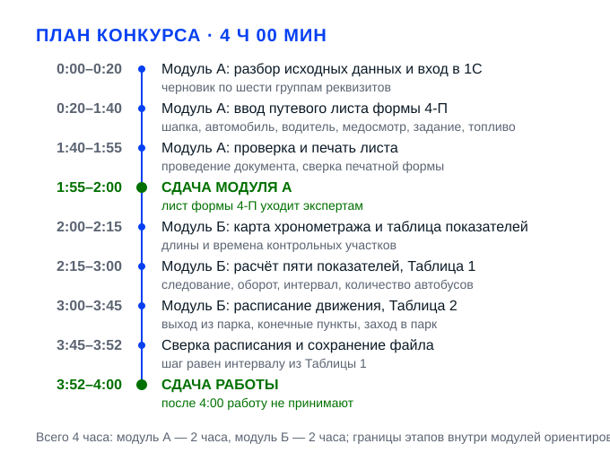
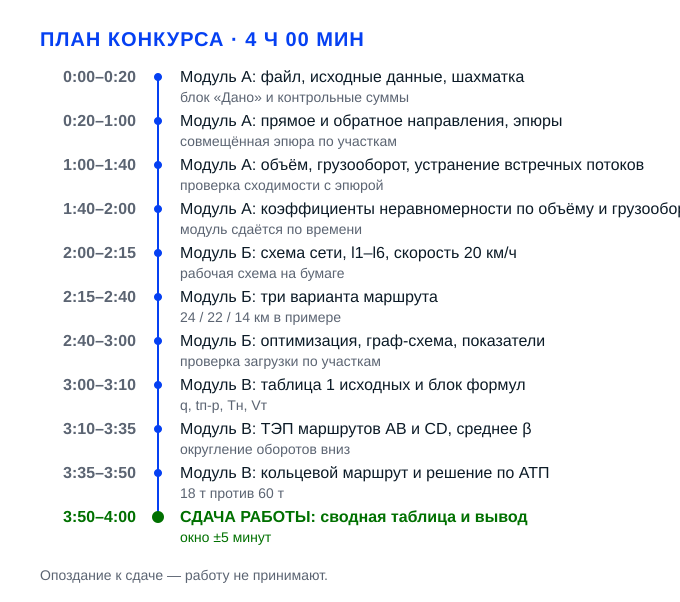
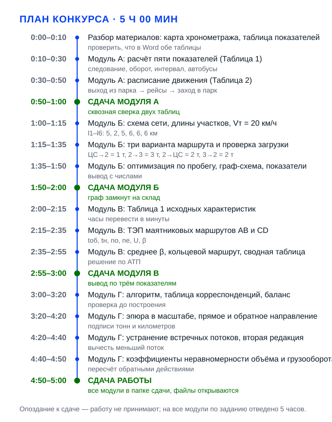

Диспетчер автомобильного транспорта (Р)
Задания ниже — официальные файлы «Абилимпикс» (источник: abilympics-russia.ru), разложенные по категориям. Решения написаны по тексту задания, регламенту и критериям оценки; в них указано, что именно проверяет эксперт.
Школьник
14–16 лет, базовый уровень заданияВыдержка из официального конкурсного задания: страницы, относящиеся к категории «Школьник» (стр. 7–10 источника).
Пошаговое решение
Конкурсное задание категории «Школьники» состоит из двух модулей по два часа: в первом нужно оформить путевой лист грузового автомобиля формы 4-П в программе «1С: Предприятие 8: Транспортная логистика, экспедирование и управление автотранспортом», во втором — рассчитать показатели городского автобусного маршрута по карте хронометражных наблюдений и составить расписание движения. Всего на работу отводится четыре часа, и оба результата сдаются вместе, поэтому время приходится делить заранее. Первый модуль проверяет аккуратность и знание документа: обязательные реквизиты, показания одометра, расход топлива, отметки медицинского и технического контроля. Второй — счёт и логику: время следования, время оборота, интервал движения и количество автобусов связаны между собой, и ошибка в одной величине тянет за собой всё расписание. Ниже — что делать по шагам и где теряются баллы.

Задача 1. Прочитать исходные данные и открыть программуМодуль А · первые 20 минут из 2 часов
Модуль А начинается не с программы, а с бумаги. В листе исходных данных лежит десяток названий и цифр, которые целиком перейдут в путевой лист: собственник, марка и номер автомобиля, фамилия водителя, дата и время выезда, показания одометра, задание и расход топлива. Если сначала выписать их на черновик и разложить по группам, ввод в 1С идёт спокойно; если вводить прямо с листа задания, на каждом поле приходится заново искать нужную строку, и почти неизбежно появляется ошибка в разряде цифры.
Действие 1.1. Разобрать исходные данные модуля А
Шаг 1.1.1
Читаем задание «Модуль А. Исходные данные для заполнения путевого листа формы 4-П» целиком один раз, ничего не записывая: нужно понять сюжет — кто куда едет, на какой машине и в какой день. Потом берём черновой лист и переписываем данные рукой, разбив их на шесть групп: собственник, автомобиль (марка, номер, тип, гаражный номер), водитель (ФИО, дата рождения, СНИЛС, удостоверение), дата и время, задание (адреса, груз, число ездок) и пробег с топливом. На это уходит семь-десять минут, и рука заодно фиксирует разряды: в удостоверении сначала идёт серия из четырёх знаков, а потом номер из шести.
Все клетки путевого листа заполняются только из этого листа: документ первичный, и придумывать в нём значения нельзя. Состав сведений задан приказом Минтранса России № 390 от 28 сентября 2022 года: он действует с 1 марта 2023 года и перечисляет реквизиты — наименование и номер, срок действия, собственник, транспортное средство, водитель, перевозка. Результат модуля описан одной строкой за два часа, и эксперт идёт по перечню, отмечая каждый пункт.
Закройте задание листом бумаги и по черновику назовите вслух все шесть групп. Если какая-то не воспроизводится или в ней стоит прочерк — возвращайтесь к заданию сразу, а не в момент ввода. Отдельно проверьте, нет ли двух разных значений одного показателя в разных строках задания.
Частая ошибка — вводить данные в 1С, подглядывая в задание по одному полю: темп падает, а на поле «Показания одометра» легко перепутать выезд с возвращением, потому что цифры стоят рядом. Вторая — переписать только «важное» и потерять гаражный номер или тип автомобиля, без которых документ не проводится.
Эксперт подходит в первые десять минут и смотрит, есть ли черновик с разложенными данными или работа идёт «с листа». Подготовительная запись читается как понимание структуры документа.
Шаг 1.1.2
Проверяем данные на внутреннюю согласованность, потому что в задании почти всегда есть связки, по которым ошибка видна до ввода. Показания одометра при возвращении больше, чем при выезде, а разница равна общему пробегу за смену. Дата выезда не позже даты возвращения, время возвращения не раньше выезда, если смена не идёт через полночь. Число ездок, умноженное на расстояние одной ездки, не превышает общего пробега. Если связка не сходится, цифры не подгоняем, а идём к эксперту и показываем оба места в задании.
Согласованность — то, чем путевой лист отличается от набора аккуратно заполненных клеток: по этим цифрам списывают горючее и считают работу водителя, поэтому пробег в задании, пробег по одометру и расход топлива обязаны описывать одну смену. Эксперт сверяет не только клетки с заданием, но и клетки между собой, и арифметическая нестыковка стоит дороже пустого поля.
Сложите на черновике три контрольных числа: общий пробег (разность показаний одометра), пробег с грузом из задания и расход по норме — норма на сто километров, умноженная на пробег и делённая на сто. Если хотя бы одно не бьётся с заданием, ищите ошибку в переписывании.
Ошибка — обнаружить нестыковку и «поправить» её в черновике, чтобы красиво сошлось: это внесение недостоверных сведений, эксперт видит подмену при сверке и теряет доверие ко всему документу. Вторая — молча ввести противоречивые данные: документ провёдётся, но рассыплется по двум-трём критериям.
Наблюдая, эксперт отмечает уточняющие вопросы по заданию как норму, а попытки исправить цифры «для красоты» проверяет особенно внимательно, потому что именно так начинается подгонка документа под ожидаемый ответ.
Шаг 1.1.3
Составляем порядок ввода на пять-шесть строк прямо на черновике: шапка (дата, номер, организация-собственник, срок действия), затем автомобиль и прицеп, затем водитель, затем медицинский и технический контроль, затем задание и выполнение, в конце пробег, топливо и подписи. Порядок повторяет последовательность экранных закладок в 1С, поэтому переходы идут в одну сторону. Напротив каждой группы ставим галочку, которую закроем сразу после ввода.
Путевой лист заполняется сверху вниз не случайно: без организации программа не подставит автомобиль, без автомобиля не покажет норму расхода, без водителя не даст сохранить медосмотр. При другом порядке 1С раз за разом выдаёт сообщения о незаполненных полях, и время уходит на борьбу с интерфейсом вместо работы с данными.
Перед началом ввода на черновике стоят все шесть пунктов и ни одного вопросительного знака. Любая неясность, оставленная «на потом», всплывёт в середине модуля, когда до сдачи останется меньше времени.
Ошибка новичка — начать с задания водителю, потому что оно самое длинное: программа ещё не знает ни автомобиля, ни водителя, и половина полей окажется недоступной. Вторая — не отмечать введённые группы: через час не вспомнить, введён ли СНИЛС.
Эксперт смотрит на порядок обхода полей: отсутствие метаний между закладками показывает, работал ли участник с формой 4-П раньше. Черновик при этом остаётся на столе до самой сдачи, и по нему потом легко объяснить любое значение в документе, если эксперт попросит уточнить источник цифры.
Действие 1.2. Открыть программу и создать документ
Шаг 1.2.1
Запускаем «1С: Предприятие 8» и в окне выбора информационной базы берём ту, в названии которой есть «Транспортная логистика» или «Управление автотранспортом»; если база одна, просто нажимаем «1С: Предприятие». Входим под пользователем из инструкции на столе, обычно это пользователь с полными правами без пароля. После загрузки находим раздел «Автотранспорт»: в нём живут путевые листы, справочники автомобилей и водителей. Первый запуск базы идёт минуту-две, и повторно щёлкать по кнопке не нужно — иначе откроется несколько окон.
Программа — обязательный инструмент модуля: в задании прямо сказано, что лист оформляется в ПО «1С: Предприятие 8: Транспортная логистика, экспедирование и управление автотранспортом», а не от руки на бланке. На модуль отведено два часа, и на запуск с входом должно уйти не больше трёх-четырёх минут.
Признак успешного входа: виден рабочий стол, доступны разделы, в углу стоит ваше имя пользователя. Разверните окно на весь экран: в уменьшенном часть полей документа уезжает за границу и остаётся незамеченной.
Ошибка — открыть не ту базу: рядом может стоять демонстрационная «Бухгалтерия», где раздела «Автотранспорт» нет вовсе, и пять минут уходят на поиски. Вторая — попытка войти в монопольном режиме, когда база занята другим участником.
Эксперт фиксирует время старта работы в программе: если через десять минут участник всё ещё ищет базу, это видно и по времени, и по количеству открытых окон. Отдельно отмечается, вошёл ли участник под предложенным пользователем или полез создавать нового, чего в конкурсной базе делать не нужно.
Шаг 1.2.2
Проверяем справочники, от которых зависит автозаполнение. Открываем «Автотранспорт» → «Автомобили» и ищем машину с тем государственным номером, что указан в задании: если она есть, документ подтянет марку, тип и норму расхода топлива. Затем в справочнике «Водители» ищем фамилию и смотрим, заполнены ли дата рождения, СНИЛС и удостоверение. Если записи нет, добавляем элемент аккуратно: номер строго как в задании, без лишних пробелов и с теми же буквами.
Путевой лист ссылается на справочники, а не хранит текст в клетках: выбранный автомобиль сам приносит в печатную форму марку, номер и норму расхода. Если вписать данные текстом мимо справочника, печатный лист выйдет с пустыми местами, а эксперт при сверке с заданием увидит расхождение — минус за полноту сведений о транспортном средстве и водителе.
Три признака готовности: автомобиль находится поиском по номеру и у него заполнены марка, тип и норма расхода; водитель находится по фамилии и у него есть все четыре обязательных сведения; в справочнике нет двух записей с одинаковым номером.
Ошибка — создать второго водителя, потому что поиск по фамилии не дал результата из-за одной буквы: документ ссылается на дубль, и это снимает баллы за работу с данными. Вторая — набрать номер русскими буквами там, где в справочнике латиница, и не найти автомобиль.
Эксперт проверяет, из справочника ли взяты данные: в печатной форме это видно по согласованности всех полей. Если марка, номер и норма расхода выглядят так, будто их набрали руками, он обязательно откроет карточку автомобиля и сверит её с заданием.
Шаг 1.2.3
Открываем «Автотранспорт» → «Путевые листы», нажимаем «Создать» и выбираем вид документа с формой 4-П: в разных версиях конфигурации он называется «Путевой лист грузового автомобиля» или «Путевой лист (4-П)», ориентируйтесь на цифры 4-П, потому что рядом стоят 3-П для легкового и форма для автобуса. Номер программа присвоит сама, а дату ставим ту, что указана в задании: если останется сегодняшняя, документ опишет не тот день.
Форма 4-П — для грузового автомобиля со сдельной оплатой, у неё другой состав полей и другой набор печатных форм, чем у 3-П. Открыв не тот вид, вы просто не найдёте, куда вписать задание, а результат модуля — заполненный лист формы 4-П — останется невыполненным, сколько бы полей ни было заполнено.
В шапке стоят дата из задания, номер от программы и пустое поле организации, которое заполним следующим шагом. Если дата не меняется, проверьте блокировку записи задним числом — в учебных базах она иногда включена.
Ошибка — оставить дату по умолчанию: документ оформлен «сегодня», а в задании другой день, и при сверке это первое, что бросается в глаза. Вторая — создать 3-П, потому что он стоит первым в списке видов.
Эксперт смотрит на заголовок окна и на дату в шапке: должно быть видно, что открыт путевой лист формы 4-П за нужный день. Ошибку в виде документа он фиксирует сразу, потому что переделывать её в конце модуля уже некогда.
Задача 2. Заполнить путевой лист формы 4-ПМодуль А · основная работа, 80 минут из 2 часов
Здесь создаётся то, что сдают экспертам: путевой лист грузового автомобиля формы 4-П. Путевой лист — документ, по которому водитель получает задание, по которому списывают горючее и считают его работу, поэтому все шесть групп обязательных сведений должны быть на месте и совпадать с исходными данными. Порядок работы такой: шапка с датой, номером и собственником, затем автомобиль и водитель, затем медицинский и технический контроль, затем задание и его выполнение, и только в конце пробег, топливо и подписи. Каждая заполненная группа сразу записывается, чтобы сбой не съел полчаса.
Действие 2.1. Оформить шапку документа
Шаг 2.1.1
Ставим курсор в поле даты и набираем день из задания в том формате, который принят в программе, — обычно это число, месяц и год. Номер документа оставляем тем, что присвоила программа, если в задании не указан свой: перебивать автонумерацию руками требуется только тогда, когда в листе исходных данных написано «путевой лист № ...». Рядом с датой находим поле периода действия и ставим ту же дату либо интервал, если в задании сказано, что лист выписан на несколько дней.
Наименование и номер документа вместе со сроком действия стоят первыми в перечне обязательных реквизитов приказа Минтранса № 390, и это не формальность: по дате и номеру лист регистрируют в журнале, а по сроку действия определяют, на какой день он вообще действителен. Лист, выписанный не на ту дату, автоматически недействителен, сколько бы верных цифр в нём ни было.
Сверьте на экране три вещи: дата совпадает с заданием до дня, номер виден и не пуст, период действия не заканчивается раньше даты выезда. Если программа подставляет дату в формате месяц-день-год, проверьте, что вы прочитали её правильно и 04.05 не превратилось в 05.04.
Типичная ошибка — оставить период действия пустым: поле необязательное для программы, но обязательное для документа, и эксперт отметит его как незаполненный реквизит. Вторая — перебить номер «как в задании», перепутав порядок цифр, после чего лист в журнале не найдётся по номеру.
Эксперт сверяет дату и номер с заданием в самом начале проверки: это первое, за что цепляется взгляд, и ошибка здесь задаёт тон всей оценке. Отдельно он смотрит, не выписан ли лист задним числом: время оформления должно быть раньше времени выезда.
Шаг 2.1.2
Заполняем сведения о собственнике: в поле организации выбираем из справочника то юридическое лицо, которое указано в задании. Если организация уже есть в списке, выбираем её двойным щелчком и проверяем, что подтянулись адрес и реквизиты; если её нет, создаём элемент и вносим наименование полностью, с организационно-правовой формой, а также ИНН и адрес. Сокращать «ООО» до «Общество» или выбрасывать кавычки из названия не нужно: в документе название должно читаться так же, как в задании.
Собственник — отдельный обязательный реквизит, и он определяет, чей это автомобиль: путевой лист выписывает владелец транспортного средства, а если машина в аренде, в листе всё равно указывается тот, кто ею распоряжается по договору. На конкурсе проверяют именно совпадение с заданием, поэтому аккуратность в наименовании важнее, чем скорость.
Проверьте, что после выбора организации в шапке появилось её название целиком, а в печатной форме в верхнем углу видно то же самое. Если название обрезалось или заменилось на «Основная организация», значит, выбран не тот элемент справочника — частая ловушка в учебных базах.
Ошибка — оставить в поле организацию, предложенную по умолчанию: в базе она обычно называется «Наша фирма» или «Основная организация», и сверка с заданием сразу показывает расхождение. Вторая — создать новую организацию вместо существующей и получить дубль в справочнике.
Эксперт сравнивает наименование собственника в документе и в задании посимвольно, особенно если в названии есть номер или кавычки. Если в наименовании ошибка, он отмечает её сразу: название печатается на каждой странице листа.
Шаг 2.1.3
Уточняем вид перевозки и вид сообщения, если эти поля есть в форме: для грузового автомобиля, работающего в городе, выбираем городское сообщение, для рейса за пределы города — пригородное или междугородное, как сказано в задании. Там же, где форма это предусматривает, отмечаем, что перевозка выполняется по заказу или по договору. Эти два поля занимают по одной строке, но именно они привязывают документ к условиям работы и к нормам расхода топлива.
Вид сообщения влияет на то, какие нормы и коэффициенты применяются к расходу топлива, а значит, и на цифру, которую вы поставите в конце листа. Если поставить междугородное сообщение вместо городского, расчёт топлива разойдётся с заданием, и ошибка потянется за вами до самой сдачи.
Проверьте по заданию, что за условие там описано: движение по городу или выезд за его пределы, есть ли упоминание заказчика. Выбранное значение должно дословно соответствовать описанию, а не быть «примерно похожим».
Ошибка — пролистнуть эти поля, считая их второстепенными: тогда программа подставит значение по умолчанию, и оно может оказаться не тем. Вторая — выбрать вид сообщения наугад, не прочитав абзац задания об условиях перевозки.
Эксперт смотрит на согласованность: вид сообщения, маршрут и норма расхода топлива должны описывать один и тот же режим работы автомобиля. Расхождение вида сообщения с условиями задания он фиксирует как ошибку ввода, а не оформления.
Действие 2.2. Внести транспортное средство и водителя
Шаг 2.2.1
В поле «Автомобиль» выбираем из справочника машину по государственному номеру из задания. После выбора проверяем, что подтянулись марка и модель, тип транспортного средства (грузовой, бортовой, фургон), гаражный номер и норма расхода топлива. Если автомобиль не находится, ищем по части номера и убеждаемся, что не путаем буквы, которые в номерах пишутся латиницей: визуально «А» и «A» в списке выглядят одинаково, а поиск различает их.
Сведения о транспортном средстве — обязательный реквизит, и в нём важны все четыре элемента: тип, марка, модель и государственный номер. Именно по ним автомобиль идентифицируют при выпуске на линию и при проверке на дороге, поэтому «грузовой» вместо «фургон» — уже расхождение с заданием и минус в чек-листе.
Сверьте с заданием четыре значения: тип, марку, модель и номер. Дополнительно посмотрите на норму расхода: если она подтянулась, значит, карточка автомобиля заполнена полно, и топливо потом посчитается автоматически.
Ошибка — вписать автомобиль текстом в поле задания, не создавая карточку: в печатной форме марка и номер окажутся в непредусмотренных клетках, а норма расхода не подставится вообще. Вторая — выбрать похожую машину из списка (та же марка, другой номер) и не заметить подмены.
Эксперт открывает карточку автомобиля и сверяет её с заданием: если данные в карточке и в листе расходятся, он фиксирует это как ошибку ввода. Заодно сверяется тип кузова: фургон и бортовой по-разному учитываются при погрузке.
Шаг 2.2.2
Выбираем водителя из справочника и проверяем, что в документ перенеслись фамилия, имя и отчество полностью, дата рождения, СНИЛС и серия с номером водительского удостоверения. Если чего-то не хватает, дополняем карточку водителя, а не оставляем поле пустым: без этих сведений лист формально не соответствует обязательным реквизитам. Обратите внимание на формат СНИЛС — одиннадцать цифр без пробелов, и на удостоверение, где сначала идёт серия из четырёх знаков, а затем номер из шести.
Сведения о водителе — тот блок, где ошибки встречаются чаще всего, потому что он состоит из длинных числовых строк, которые легко перепутать местами. Проверяющему нужно убедиться, что за руль выпущен именно тот человек, который указан в задании, и что у него есть действующее удостоверение нужной категории, поэтому пустое поле или перепутанные серия с номером читаются как недостоверные сведения.
Проверьте по заданию каждую строку: фамилия без сокращений, дата рождения в том же виде, СНИЛС из одиннадцати цифр, удостоверение из десяти знаков — четыре серии и шесть номера. Сравните контрольную сумму СНИЛС с заданием: если перепутана одна цифра, документ выглядит заполненным, но сведения ложные.
Ошибка — перенести серию и номер удостоверения в обратном порядке: строка выглядит правдоподобно, и заметить подмену можно только сверкой с заданием. Вторая — оставить поле СНИЛС пустым, потому что «оно длинное и неудобное».
Эксперт сверяет блок водителя построчно, начиная с фамилии, и отдельно проверяет, что удостоверение не просрочено на дату выезда. Он сверяет и категорию удостоверения: для грузового автомобиля она должна быть соответствующей.
Шаг 2.2.3
Если в задании указан прицеп или полуприцеп, вносим его так же, как автомобиль: из справочника прицепов, с типом, маркой и государственным номером. Если перевозка идёт без прицепа, поле оставляем пустым, а не пишем «нет»: пустое поле в печатной форме означает отсутствие прицепа, а слово «нет» попадает в документ как название и портит вид листа. После этого сохраняем документ кнопкой «Записать» и смотрим, не подсветилось ли какое-то поле красным.
Прицеп меняет и норму расхода топлива, и допустимую массу груза, поэтому его наличие или отсутствие должно быть видно в документе однозначно. Пустое поле и слово «нет» с точки зрения программы — разные вещи: первое означает, что прицепа нет, второе создаёт ссылку на несуществующий объект и часто мешает проведению документа.
Проверьте: поле прицепа либо содержит корректную ссылку с номером из задания, либо пусто, и красной подсветки после записи нигде нет. Заодно убедитесь, что в шапке по-прежнему стоит ваша организация и выбранный автомобиль — при смене вида документа программа иногда сбрасывает часть полей.
Ошибка — вписать в поле прицепа слова «без прицепа» или прочерк: печатная форма покажет их как наименование прицепа. Вторая — не заметить, что после выбора водителя сбросился автомобиль, и продолжить заполнять лист с пустым транспортным средством.
Эксперт смотрит на печатную форму: в строке прицепа должно быть либо пусто, либо реальные данные, и никаких служебных пометок. Отсутствие прицепа он проверяет по заданию, а не по названию автомобиля.
Действие 2.3. Отметить медицинский и технический контроль
Шаг 2.3.1
Заполняем сведения о предрейсовом медицинском осмотре: дату и время, когда водитель его прошёл, и результат — «допущен». Время ставим раньше времени выезда из гаража, обычно за двадцать-тридцать минут: осмотр проводится до того, как водитель получает лист и садится за руль. Если в задании указан и послерейсовый осмотр, вносим его отдельной строкой с датой и временем после возвращения.
Медицинский осмотр перед сменой — обязательное условие выпуска на линию, и без отметки о нём путевой лист считается оформленным с нарушением. В документе важна именно связка «время осмотра раньше времени выезда»: если наоборот, получается, что водитель уехал до допуска, а это уже грубое нарушение и по правилам перевозок, и по логике документа.
Сверьте две отметки времени: осмотр раньше выезда, послерейсовый — позже возвращения. В печатной форме рядом с этими строками предусмотрено место для подписи медработника и штампа; если в конкурсной базе есть поле для фамилии медика, заполните и его.
Ошибка — поставить время осмотра равным времени выезда или позже него: формально поля заполнены, а по сути документ противоречив. Вторая — пропустить осмотр вовсе, посчитав, что «это дело медпункта»: в задании он есть, значит, его нужно отразить.
Эксперт проверяет хронологию: осмотр, выезд, возвращение, послерейсовый осмотр — в этом порядке, и никак иначе. Он смотрит и на то, записан ли результат осмотра словом «допущен», а не только время.
Шаг 2.3.2
Отмечаем технический контроль автомобиля перед выездом: дату, время и, если поле предусмотрено, фамилию механика, проводившего осмотр. Время ставим между медосмотром и выездом — так выглядит реальная последовательность выпуска на линию: сначала водитель проходит медика, потом машину смотрит механик, и только затем автомобиль выезжает из гаража. В некоторых версиях конфигурации эта отметка ставится отдельным документом, и тогда его номер указывают в листе.
Контроль технического состояния — вторая половина обязательных сведений о выпуске на линию: подтверждается, что автомобиль исправен и допущен к работе. В документе эта отметка должна стоять до времени выезда, иначе получается, что машина уехала непроверенной, а это тот вид ошибки, который проверяют в первую очередь.
Три времени по порядку: медосмотр, техконтроль, выезд. Проверьте, что между ними нет обратного хода и что все три даты совпадают с датой путевого листа. Если в форме есть поле «Заявка» или «Наряд», убедитесь, что оно не осталось красным.
Ошибка — поставить время техконтроля позже выезда, перепутав строки: документ становится противоречивым, и это видно при первом же взгляде на хронологию. Вторая — оставить блок пустым, потому что «в задании про механика ни слова»: в задании есть время выпуска, значит, контроль подразумевается.
Эксперт сверяет три времени подряд и отмечает, читается ли из документа нормальная процедура выпуска автомобиля на линию. Если в форме есть фамилия механика, её отсутствие он тоже отмечает как пробел.
Действие 2.4. Ввести задание, пробег и топливо
Шаг 2.4.1
Переходим на закладку задания и вносим адреса погрузки и разгрузки в том порядке, в котором их проходит автомобиль, наименование груза и количество ездок, если задание сдельное. Адреса берём из задания целиком, с улицей, номером дома и, если есть, корпусом: «склад на Промышленной, 12, корпус 2» и «Промышленная, 12» — это два разных места разгрузки, и сокращать адрес нельзя. Груз называем так, как он назван в задании: «кирпич керамический», а не «стройматериалы».
Задание водителю — смысловая часть путевого листа: по нему водитель едет, а бухгалтерия потом считает, сколько ездок и тонн выполнено. Если адрес сокращён или перепутан порядок точек, документ теряет смысл, даже когда все обязательные реквизиты на месте: проверить выполнение задания по такому листу невозможно.
Проверьте по заданию: число строк совпадает с числом точек, порядок адресов не переставлен, груз назван полностью, количество ездок стоит числом. Полезно проговорить маршрут вслух: «загрузились на первой точке, разгрузились на второй» — так ошибка в порядке вылезает сразу.
Ошибка — вписать адреса в обратном порядке, начав с точки разгрузки: маршрут в документе противоречит логике перевозки, и эксперт это замечает. Вторая — заменить наименование груза общим словом, из-за чего теряется привязка к исходным данным.
Эксперт читает задание как рассказ о поездке: погрузка, разгрузка, груз, количество ездок — и сверяет с заданием построчно. Особое внимание — совпадению числа строк задания с числом точек маршрута в задании.
Шаг 2.4.2
Вносим время выезда из гаража и время возвращения, а также показания одометра при выезде и при возвращении. Показания берём из задания без округления: если там стоят 128 460 километров, так и вводим, а не «128 тысяч». После ввода проверяем, что программа сама посчитала общий пробег за смену, и сравниваем полученную разницу с тем, что указано в задании: если цифры не сошлись, значит, одно из показаний введено с ошибкой.
Пробег по одометру — это то, из чего считается и расход топлива, и заработок водителя, поэтому замена показаний на округлённые ломает весь дальнейший расчёт. Разница между показаниями при возвращении и при выезде должна совпадать с пробегом, указанным в задании: это встроенная самопроверка, которой стоит пользоваться.
Контроль простой: разность показаний равна пробегу из задания, время возвращения позже времени выезда, обе даты совпадают с датой листа. Если программа показывает пробег, отличный от задания, ищите опечатку в разрядах: чаще всего теряется или добавляется ноль.
Ошибка — ввести показания одометра в километрах, а пробег в метрах или наоборот: разница получается в тысячу раз, и расход топлива выходит фантастическим. Вторая — оставить поле показаний пустым, потому что «пробег и так есть в задании».
Эксперт вычитает показания сам: это самый быстрый способ проверить, понимает ли участник, откуда берётся пробег. Расхождение в разряде он находит вычитанием, а не пересмотром всех полей подряд.
Шаг 2.4.3
Заполняем топливную часть: остаток при выезде, норму расхода на сто километров (она подтягивается из карточки автомобиля) и фактический расход. Фактический расход по норме считается так: норма умножается на пробег и делится на сто. Если в задании дано количество выданного топлива по чеку, вносим и его. Завершаем блок результатом работы автомобиля: общий пробег, пробег с грузом и число ездок.
Топливо — та часть листа, по которой потом списывают деньги, поэтому норма, пробег и фактический расход обязаны быть связаны арифметически. Пробег с грузом показывает, насколько эффективно использовался автомобиль: коэффициент использования пробега считается именно как отношение пробега с грузом к общему, и в задании эти два числа всегда согласованы.
Проверьте расчёт на бумаге: норма, умноженная на пробег и делённая на сто, должна дать ту же цифру, что стоит в поле. Пробег с грузом не может быть больше общего, а остаток топлива при возвращении — получаться отрицательным.
Ошибка — вписать фактический расход «на глаз» вместо расчёта по норме: арифметика не сходится, и эксперт видит это при первой же проверке. Вторая — перепутать пробег с грузом и общий пробег местами, из-за чего коэффициент использования пробега выходит больше единицы, чего не бывает.
Эксперт пересчитывает топливо калькулятором и отдельно проверяет, что пробег с грузом меньше общего. Норму расхода он берёт из карточки автомобиля и сверяет с той, что стоит в листе.
Действие 2.5. Проверить, провести и сдать лист
Шаг 2.5.1
Проходим по документу сверху вниз ещё раз, как проверяющий, и смотрим на подсветку: все обязательные поля должны быть заполнены, красных рамок и восклицательных знаков остаться не должно. Отдельно проверяем шесть блоков по перечню: наименование и номер, срок действия, собственник, транспортное средство, водитель, перевозка вместе с медицинским и техническим контролем. Затем нажимаем «Записать», а после — «Провести», если в конкурсной базе требуется проведение документа.
Проведение — это момент, когда программа проверяет документ по своим правилам: если чего-то не хватает, она откажется его проводить и покажет причину. Пройти эту проверку до сдачи гораздо выгоднее, чем узнать о проблеме от эксперта: сообщение программы прямо указывает на незаполненное поле, и его исправление занимает полминуты.
Документ записан и проведён, сообщений об ошибках нет, в журнале путевых листов он виден со своим номером и датой. Если программа пишет про закрытый период или заблокированную дату, зовите эксперта сразу: это настройка базы, а не ваша ошибка.
Ошибка — сдавать непроведённый документ: он существует, но в отчётах не участвует, и эксперт может посчитать модуль невыполненным. Вторая — исправлять ошибку, замалчивая её, вместо того чтобы прочитать текст сообщения программы.
Эксперт при проверке смотрит на состояние документа: записан он или только открыт, есть ли отметка о проведении. Если документ не проведён, он просит участника провести его при нём.
Шаг 2.5.2
Открываем печатную форму кнопкой «Печать» и выбираем «Путевой лист грузового автомобиля (4-П)». Просматриваем все страницы, а их обычно несколько: шапка с реквизитами, задание, выполнение задания и отрывные талоны. Сверяем печатный вид с экраном: наименование организации, номер автомобиля, фамилия водителя, дата, показания одометра и топливо должны читаться одинаково и не обрезаться по краю листа.
Печатная форма — это то, что фактически уходит эксперту, и в ней иногда видны огрехи, которых не видно на экране: слишком длинное название вылезает за рамку, пустое поле оставляет пустую клетку, а число печатается без разделителя разрядов. Смотреть на печатный вид нужно до сдачи, а не после.
Все страницы читаемы, ни одно значение не обрезано, пустых обязательных клеток нет, число страниц соответствует форме. Если печатная форма выходит пустой, значит, документ не записан — вернитесь и запишите его.
Ошибка — распечатать и сдать, не открыв предпросмотр: обрезанное название организации или уехавшая за край цифра портят впечатление от всей работы. Вторая — перепутать печатную форму и вывести 3-П. Третья — распечатать лист до того, как он проведён: в печать уйдёт пустой бланк.
Эксперт оценивает именно печатный документ, поэтому всё, что не читается на бумаге, для него не существует. Обрезанное название или уехавшая за край цифра для него равны незаполненному полю.
Шаг 2.5.3
Кладём готовый лист на стол экспертам, называя вслух, что сделано: «путевой лист формы 4-П по заданию, документ проведён, вот печатная форма». Если по ходу работы были сомнительные места — например, в задании не указан прицеп, — коротко говорим об этом сами, а не ждём вопроса. Дальше возвращаемся к своему рабочему месту и начинаем модуль Б, потому что время первого модуля уже закончилось и переходить нужно без задержки.
Сдача листа — формальная граница модуля А: пока документ не у эксперта, работа не засчитана, сколько бы времени ни оставалось. Спокойное пояснение того, что сделано, помогает эксперту быстрее пройти по чек-листу и заодно показывает, что участник понимает свой документ, а не собрал его случайными нажатиями.
Лист у эксперта, отметка о сдаче есть, принтер свободен, ваш рабочий стол освобождён под модуль Б. Проверьте время: если до конца модуля А осталось меньше пяти минут, сдавайте то, что есть, и не начинайте правок.
Ошибка — до последней минуты править мелочи и сдать лист с опозданием: опоздавшую работу могут не принять вовсе. Вторая — сдать документ молча, не пояснив сомнительные места, и потом обнаружить, что эксперт понял их по-своему.
В момент сдачи эксперт задаёт один-два вопроса по документу: почему такая дата, откуда взялся пробег. Ответ по существу укрепляет оценку, растерянность — снижает.
Задача 3. Рассчитать показатели автобусного маршрутаМодуль Б · 60 минут из 2 часов
Второй модуль начинается с расчёта, и расчёт здесь важнее аккуратности записи. Нужно получить пять величин: время следования в прямом направлении, время следования в обратном, время оборота автобуса, интервал движения и количество автобусов на маршруте. Все пять считаются из карты обработки хронометражных наблюдений и таблицы показателей, то есть из данных, которые уже лежат на столе. Расчёт идёт цепочкой: сначала время по каждому контрольному участку, потом суммы по направлениям, потом оборот, и только после этого интервал с количеством машин.
Действие 3.1. Разобрать карту хронометража и таблицу показателей
Шаг 3.1.1
Открываем карту обработки хронометражных наблюдений по маршруту и читаем её как схему: маршрут разбит на контрольные участки между остановочными пунктами, у каждого участка указана протяжённость в километрах и время хода по наблюдениям. Переносим участки в черновик таблицей: слева номер и название участка, затем длина, затем время. Сразу проверяем, что сумма длин всех участков совпадает с общей протяжённостью маршрута, указанной в таблице показателей, а сумма времён — с общим временем хода.
Карта — единственный источник длин и времён, и любая ошибка в переносе цифры уходит вниз по всей цепочке расчётов: неверная длина участка даёт неверное время, то есть неверный оборот, интервал и количество автобусов. Именно поэтому перенос данных делают отдельным действием, а не «по ходу»: так ошибку видно на входе, а не после того, как расписание уже составлено.
Два контрольных числа: сумма длин участков равна общей протяжённости маршрута, сумма времён равна времени хода по карте. Если расхождение в пределах полуминуты — это округление, если больше — ищите пропущенный или дважды внесённый участок.
Частая ошибка — переносить время хода, а длину не переносить вовсе, считая, что потом «возьмём из схемы»: на схеме подписи мелкие, и на четвёртом участке начинается путаница. Вторая — складывать время только по крупным перегонам, пропуская короткие остановки между ними.
Эксперт смотрит на черновик в первые минуты модуля: аккуратная таблица участков показывает, что участник понял структуру маршрута, а не начал считать наугад.
Шаг 3.1.2
Из таблицы показателей выписываем отдельным блоком всё, что понадобится в формулах: техническую скорость в километрах в час, время простоя на промежуточных остановочных пунктах, время отдыха и отстоя на конечных пунктах, вместимость автобуса, а также время начала и окончания работы маршрута, если оно задано. Рядом с каждым значением ставим единицу измерения — минуты или часы. Это кажется лишним, но именно здесь рождается половина ошибок: скорость в километрах в час, а время в минутах, и без перевода единиц получается результат, который невозможно проверить.
Формулы модуля построены на согласованных единицах: расстояние делится на скорость и умножается на шестьдесят, чтобы получить минуты. Если этого не сделать, время следования выйдет в часах, а интервал движения в минутах, и расписание начнёт «уезжать» на каждом обороте. Выписанные единицы помогают поймать такую ошибку до того, как она попадёт в таблицу.
Проверьте по таблице показателей: скорость указана в километрах в час и лежит в разумных пределах для города; время на конечных дано в минутах; вместимость дана целым числом мест. Если какое-то значение записано в часах и минутах через двоеточие, переведите его в чистые минуты сразу, на черновике.
Ошибка — считать по скорости, не посмотрев на единицу: в таблице может стоять скорость сообщения, а не техническая, и это разные величины. Вторая — перепутать время на промежуточных остановках с временем на конечных: первое входит в время следования, второе — только в оборот.
Эксперт проверяет, взяты ли в расчёт обе паузы — на промежуточных остановках и на конечных пунктах, потому что забытая пауза искажает оборот сильнее всего.
Действие 3.2. Посчитать время следования по участкам и направлениям
Шаг 3.2.1
Считаем время хода по каждому контрольному участку по формуле: время равно длине участка, делённой на техническую скорость и умноженной на шестьдесят. Например, участок 3,2 километра при скорости 24 километра в час даёт 3,2 разделить на 24 и умножить на 60, то есть 8 минут. Результат записываем с точностью до половины минуты и округляем вверх: 7,4 минуты превращаются в 7,5, а не в 7, потому что автобус не может проехать участок быстрее расчётного времени.
Время по участкам — это кирпичи, из которых складывается время следования, и именно оно уходит в первую строку таблицы модуля. Округление вниз опасно тем, что накапливается: на десяти участках оно даёт минуту-полторы, а это уже заметное расхождение между расчётом и реальным расписанием, по которому автобус не успевает к контрольным точкам.
Сложите времена по участкам и сравните с временем хода из карты: расхождение допустимо в пределах минуты на весь маршрут, потому что карта снята наблюдением, а расчёт идёт по средней скорости. Большее расхождение означает ошибку в скорости или в длине участка.
Ошибка — забыть умножить на шестьдесят и получить время в часах: 0,13 вместо 8 минут. В расчёте это выглядит безобидно, но в таблице сразу бросается в глаза и перечёркивает остальные верные строки. Вторая — считать по средней длине участка, а не по каждому отдельно.
Эксперт проверяет расчёт выборочно на двух участках, подставляя числа в формулу на калькуляторе. Если расчёт сходится на двух участках, методику он считает понятой и идёт дальше.
Шаг 3.2.2
Складываем время хода по всем участкам прямого направления и прибавляем время простоя на промежуточных остановочных пунктах: если на маршруте восемь промежуточных остановок и на каждую отведено по тридцать секунд, это четыре минуты. Полученная сумма и есть время следования в прямом направлении в минутах, которое записывается в первую строку таблицы. В расчёте пишем не только итог, но и промежуточные слагаемые — так проверяющий видит, откуда взялось число.
Время следования — первая из пяти величин, требуемых заданием, и одновременно основа для времени оборота: оборот без него не считается. Простой на промежуточных остановках входит именно в следование, а не в оборот, потому что пассажиры садятся и выходят по пути, а не на конечной, и эта разница — одна из самых частых причин расхождения с ответом эксперта.
Проверьте: сумма времён по участкам плюс простой на остановках равна итогу, итог выражен в минутах и лежит в разумных пределах для городского маршрута. Сравните с временем хода по карте: расчёт обычно чуть больше, потому что добавились остановки.
Ошибка — прибавить простой на конечных пунктах к времени следования: тогда оборот получится двойным, ведь конечные вы учтёте ещё раз. Вторая — забыть простой на остановках совсем, и время следования выйдет заниженным на несколько минут.
Эксперт смотрит, различает ли участник три вида времени: ход, следование с остановками и оборот с отстоем на конечных. Он смотрит, показан ли простой на остановках в расчёте отдельным слагаемым.
Шаг 3.2.3
Считаем время следования в обратном направлении отдельно, даже если маршрут кажется симметричным. В городе обратный путь часто длиннее прямого из-за односторонних улиц и разворотов, поэтому длины участков в обратном направлении берём из карты, а не копируем из прямого. Формула та же: длина, делённая на скорость и умноженная на шестьдесят, плюс простой на остановках обратного направления. Если карта даёт одинаковые длины в обе стороны, это нужно проверить по числам, а не предположить.
Время оборота складывается из двух направлений, и если обратное посчитать копированием, ошибка умножится на число оборотов за смену. Задание требует отдельной строки для обратного направления именно потому, что эти величины не всегда совпадают, и умение увидеть разницу отличает расчёт от подгонки под красивый ответ.
Сверьте два числа между собой: если они равны, убедитесь по карте, что длины участков действительно совпадают; если различаются, объясните себе, за счёт какого участка. Оба значения должны быть в минутах и выглядеть правдоподобно рядом друг с другом.
Ошибка — поставить в обе строки одно и то же число «для простоты»: на несимметричном маршруте это сразу видно по карте, и обе строки теряют баллы. Вторая — перепутать направления и записать обратное время в первую строку.
Эксперт сравнивает две строки с картой: на несимметричном маршруте разница должна читаться, на симметричном — совпадать. Разницу направлений он проверяет по карте, а не по вашему пояснению.
Действие 3.3. Определить время оборота автобуса
Шаг 3.3.1
Складываем время следования в прямом направлении, время следования в обратном и время отдыха и отстоя на обоих конечных пунктах. Если на каждой конечной автобус стоит по пять минут, к сумме направлений добавляем десять минут. Полученное число и есть время оборота — время, за которое автобус проходит маршрут туда и обратно и возвращается в исходную точку в готовности начать следующий рейс. Записываем его в третью строку таблицы с указанием слагаемых.
Время оборота — центральная величина всего модуля: от него считаются и интервал движения, и количество автобусов, и расписание. Ошибка в обороте на две минуты при десяти оборотах за смену сдвигает заход в парк на двадцать минут, а расписание, которое не сходится с расчётом, эксперты проверяют первым делом.
Проверьте арифметику в столбик: два направления плюс два отстоя. Сравните оборот с удвоенным временем следования — он должен быть больше ровно на время отстоя на конечных, и ни на что другое. Если получилось равным, значит, отстой забыт.
Ошибка — включить в оборот время на промежуточных остановках повторно, хотя оно уже вошло в следование: оборот раздувается, интервал выходит завышенным, и автобусов по расчёту требуется меньше, чем нужно. Вторая — забыть про отстой на конечных вовсе.
Эксперт проверяет состав оборота по слагаемым, а не только итог: именно состав показывает, понимает ли участник, что такое оборот автобуса. Отсутствие отстоя он видит по равенству оборота и удвоенного времени следования.
Шаг 3.3.2
Переводим оборот в ту форму, которая нужна для следующего шага. Если оборот получился, например, 96 минут, то для расчёта интервала он используется как 96 минут, а для расчёта числа оборотов за смену — как 1 час 36 минут, то есть 1,6 часа. Дробную часть часа получаем делением минут на шестьдесят, и это единственное место в модуле, где стоит держать в голове две формы записи одного числа. Рядом с итогом пишем обе формы, чтобы не пересчитывать дважды.
Число оборотов за смену считается делением времени работы на маршруте на время оборота, и если подставить туда минуты вместо часов, получится результат в шестьдесят раз меньше — набор бессмысленных цифр. Такая ошибка опасна тем, что выглядит как «просто малое число» и не вызывает подозрений, пока не дойдёт до расписания.
Проверьте себя так: число оборотов за восьмичасовую смену при обороте около полутора часов должно быть примерно пять. Если получилось 0,08 или 300, значит, перепутаны единицы. Полезно держать в голове этот порядок величины.
Ошибка — считать оборот в часах с округлением до целого: 1,6 часа превращается в 2, и весь дальнейший расчёт уезжает. Вторая — механически переводить минуты в часы там, где нужны минуты, например при расчёте интервала.
Эксперт смотрит на порядок величин: если число оборотов за смену выглядит неправдоподобно, он проверяет единицы измерения во всей цепочке. Он также проверяет, что в расчёте не смешаны часы и минуты в одной строке.
Действие 3.4. Найти интервал движения и количество автобусов
Шаг 3.4.1
Считаем интервал движения: время оборота делим на количество автобусов, которые работают на маршруте. Если в таблице показателей количество машин задано, подставляем его; если нет — интервал берётся из задания как требуемый, и тогда из него находится число машин. Проверяем результат на здравый смысл: для городского маршрута интервал обычно составляет от пяти до пятнадцати минут, и значение в сорок минут означает, что автобусов на маршруте слишком мало.
Интервал — то, что видит пассажир на остановке, поэтому это одна из ключевых величин задания и одновременно вход в расписание: именно на интервал сдвигаются времена выхода автобусов из парка. Ошибка здесь ломает не одну строку, а всю Таблицу 2, потому что расписание строится как сетка с шагом в интервал.
Проверьте двумя способами: умножьте интервал на количество автобусов — должно получиться время оборота; поделите шестьдесят на интервал — получится частота движения в автобусах в час, и она должна быть правдоподобной для города. Совпадение обоих результатов означает, что связка верна.
Ошибка — делить количество автобусов на оборот вместо деления оборота на количество: получается величина, обратная интервалу, и расписание начинает строиться от неё. Вторая — округлять интервал до целых минут вниз, из-за чего суммарный интервал перестаёт покрывать оборот.
Эксперт проверяет интервал обратным действием: умножает его на число автобусов и сравнивает с оборотом. Он смотрит, указана ли рядом с интервалом частота движения в автобусах в час.
Шаг 3.4.2
Определяем количество автобусов на маршруте: время оборота делим на интервал движения и округляем вверх до целого. Дробное значение означает, что часть времени на маршруте не хватает машины, поэтому округление всегда идёт в большую сторону: 4,2 автобуса — это пять автобусов, а не четыре. Если число машин задано в таблице показателей и полученное значение с ним не совпало, не подгоняем ответ, а ищем причину: чаще всего она в забытом отстое на конечных.
Количество автобусов — это выпуск на маршрут, то есть прямое следствие оборота и интервала: столько машин нужно, чтобы интервал выдерживался весь день. Округление вниз оставляет на маршруте «дырку», в которую автобус физически не успевает вернуться к своей следующей отправке, и расписание начинает рассыпаться уже к третьему обороту.
Сверьте: количество, умноженное на интервал, не меньше времени оборота; при этом разница не превышает одного интервала. Если разница больше, значит, округление сделано вниз или интервал посчитан неверно.
Ошибка — округлить 4,2 до четырёх «потому что ближе»: получается недопустимый выпуск, и на маршруте не хватает машины. Вторая — подставить в документ дробное число автобусов, что сразу читается как формальная небрежность.
Эксперт смотрит на округление и на согласованность с интервалом: это пара величин, которые проверяются только вместе. Дробное число автобусов в ответе он отмечает как незавершённый расчёт.
Шаг 3.4.3
Делаем контрольную сводку, прежде чем переносить числа в таблицу: время следования в прямом, время следования в обратном, время оборота, интервал и количество автобусов — все пять значений с единицами измерения. Проверяем связки по кругу: оборот равен сумме направлений и отстоя, количество, умноженное на интервал, покрывает оборот, а интервал, делённый на шестьдесят, даёт правдоподобную частоту. Если хоть одна связка не сходится, правим расчёт, а не сводку.
Пять величин модуля Б связаны между собой, и проверка по кругу занимает полторы минуты, но спасает от самой обидной потери баллов: когда каждая строка по отдельности выглядит разумно, а вместе они противоречат друг другу. Именно так выглядят работы, где интервал считали отдельно от количества машин.
Все пять строк заполнены, единицы проставлены, связки сходятся, значений без объяснения нет. Держите сводку перед глазами до конца модуля: из неё потом строится расписание, и пересчитывать её заново не придётся.
Ошибка — сразу переносить числа в Word без сводки: при обнаружении нестыковки приходится править уже оформленную таблицу, а это вдвое дольше. Вторая — менять одно значение, забыв пересчитать зависимые.
Эксперт ищет в работе именно связки: сходятся ли пять величин между собой интересует его больше, чем красота оформления. Ему достаточно двух связок, чтобы понять, считал ли участник сам.
Действие 3.5. Заполнить Таблицу 1 в документе Word
Шаг 3.5.1
Открываем документ «Модуль Б. Расписание автобусов» в Microsoft Word и заполняем Таблицу 1, у которой четыре колонки: номер, определяемый показатель, используемые формулы и расчёт. В колонку формул пишем формулу в общем виде, например «tпр = Lпр / vт × 60» или «tоб = tпр + tобр + tко», а в колонку расчёта — ту же формулу с подставленными числами и результатом. Так эксперт видит не только ответ, но и путь к нему, и это ровно то, что просит задание.
Требование писать и формулу, и расчёт — не придирка: по формуле видно, понимает ли участник, что он считает, а по расчёту проверяется арифметика. Если в колонке формул стоит прочерк, а в расчёте — готовое число, работа читается как списанная, и баллы за обоснование теряются, даже когда числа верны.
В таблице пять строк, и в каждой заполнены обе средние колонки: формула без чисел и числа без формулы одинаково считаются неполными. Проверьте, что обозначения в формулах те же, что в расчёте, иначе получится, что формула описывает одно, а считалось другое.
Ошибка — вписать в колонку формул слова «по формуле времени следования»: это не формула, и балл за неё не даётся. Вторая — оставить в расчёте только итог без подстановки, из-за чего проверить его можно лишь пересчётом с нуля.
Эксперт читает колонку формул первой: если формулы записаны верно, он уже уверен, что участник понимает методику. В колонке формул он ищет обозначения, совпадающие с расчётом: так видно, что таблицу заполняли вы.
Шаг 3.5.2
Проходим по готовой таблице строка за строкой и проверяем единицы: время в минутах, количество автобусов целым числом, интервал в минутах. Курсивом или скобками уточняем единицы в заголовках строк, если в бланке их нет. Затем пересчитываем две любые строки на калькуляторе заново, не глядя в свой черновик: это самый быстрый способ найти опечатку, которая появляется при переносе числа с бумаги в документ.
Таблица 1 — итог первого этапа модуля Б, и именно по ней проверяется, верно ли посчитаны показатели. Опечатки при переносе встречаются чаще, чем ошибки в расчёте: на бумаге число верное, в документе — с переставленными цифрами, и проверяющий видит расхождение с вашей же следующей таблицей.
Все пять строк заполнены, единицы указаны, два пересчёта совпали с записанным. Сохранение сделано: файл в Word не сохраняется сам, и закрытие окна без сохранения стирает всю таблицу. Если Word не даёт сохранить файл, проверьте, не открыт ли он в другом окне или на другом компьютере.
Ошибка — не сохранить документ после заполнения: следующий шаг требует добавить Таблицу 2 в тот же файл, а её некуда вставлять, если предыдущая работа потеряна. Вторая — оставить в таблице число в формате «1,5 автобуса».
Эксперт сверяет Таблицу 1 с Таблицей 2: интервал и количество автобусов из первой должны читаться во второй без противоречий. Он открывает документ и листает до таблицы: сохранённая работа видна сразу.
Задача 4. Составить расписание движения автобусовМодуль Б · 40 минут из 2 часов
Расписание — итог модуля Б и самый заметный его результат: две таблицы, первая с расчётом, вторая с временами по каждому автобусу. Строится оно не «по вдохновению», а как сетка: сначала время выхода из парка, потом прибытие и отправление на конечных пунктах, потом заход в парк. Шаг этой сетки — интервал движения, а длина одного звена — время оборота. Если интервал и оборот посчитаны верно, расписание собирается почти механически, и на него уходит втрое меньше времени, чем на расчёт.
Действие 4.1. Посчитать нулевой пробег и время выхода из парка
Шаг 4.1.1
Берём из таблицы показателей расстояние от парка до начального остановочного пункта маршрута — это нулевой пробег, то есть путь, на котором автобус ещё не возит пассажиров. Считаем время нулевого пробега по той же формуле: расстояние делим на техническую скорость и умножаем на шестьдесят. Если от парка до маршрута три километра, а скорость двадцать четыре километра в час, время нулевого пробега составит семь с половиной минут. Округляем вверх и записываем отдельной строкой черновика.
Нулевой пробег — время, которое автобус тратит до первой посадки пассажиров, и без него расписание невозможно построить правильно: автобус не появляется на маршруте мгновенно. Именно на эту величину время выхода из парка отличается от времени первого отправления, и именно её чаще всего забывают, из-за чего первая строка расписания оказывается на десять минут позже, чем нужно.
Проверьте: время нулевого пробега меньше времени следования по маршруту, выражено в минутах и посчитано по тому же расстоянию, что указано в таблице показателей. Если получилось больше времени оборота, значит, расстояние взято не от парка, а до другого конца маршрута.
Ошибка — считать нулевой пробег от конечной станции, а не от парка: время выхода съезжает, и вся первая колонка расписания становится неверной. Вторая — не считать его вовсе, приняв, что автобус выходит прямо на маршрут.
Эксперт проверяет, есть ли в работе отдельная величина нулевого пробега: её наличие показывает, что участник понимает разницу между работой на маршруте и работой вообще.
Шаг 4.1.2
Находим время работы на маршруте: число оборотов за смену умножаем на время оборота. Если смена длится восемь часов, а оборот равен 96 минутам, то чистое время на маршруте составит пять оборотов, то есть 480 минут, и это ровно восемь часов — значит, расчёт сходится. Затем считаем время захода в парк: к времени выезда прибавляем нулевой пробег, время работы на маршруте и ещё один нулевой пробег на возвращение, если по условию автобус возвращается в парк тем же путём.
Время работы на маршруте и время захода в парк — это границы смены, и они должны согласовываться с временем работы маршрута, указанным в таблице показателей. Если заход в парк получается позже закрытия маршрута, значит, число оборотов взято с избытком, и это надо увидеть в расчёте, а не в готовом расписании, где ошибка выглядит как «ещё одна строка».
Проверьте: время захода в парк больше времени выезда, разница равна сумме нулевых пробегов и времени на маршруте, а число оборотов целое. Сравните полученный заход с временем окончания работы маршрута: он не должен выходить за него больше чем на время одного нулевого пробега.
Ошибка — забыть обратный нулевой пробег и получить заход в парк на десять минут раньше реального. Вторая — считать время работы на маршруте как разницу между закрытием и открытием маршрута, не вычитая нулевые пробеги.
Эксперт складывает три величины — выезд, нулевые пробеги, работа на маршруте — и сверяет сумму с заходом в парк. Он сравнивает заход в парк с временем закрытия маршрута из таблицы показателей.
Действие 4.2. Построить строки расписания по оборотам
Шаг 4.2.1
Открываем Таблицу 2 и заполняем первую строку: время выхода из парка, затем время прибытия на начальный пункт маршрута, затем время отправления оттуда. Прибытие получается прибавлением нулевого пробега к выходу, отправление — прибавлением времени отстоя на конечной к прибытию. Дальше по этой же строке идёт время прибытия на противоположную конечную, полученное прибавлением времени следования в прямом направлении, и время отправления обратно после отстоя.
Первая строка — образец, по которому строятся все остальные: если в ней правильно расставлены четыре времени и соблюдены паузы, дальнейшее заполнение идёт копированием логики, а не пересчётом. Ошибка в первой строке тиражируется на весь столбец, и исправлять потом приходится каждую клетку.
Проверьте первую строку по шагам: выезд плюс нулевой пробег равно прибытию, прибытие плюс отстой равно отправлению, отправление плюс время следования равно прибытию на другую конечную. Все четыре времени идут по возрастанию, а формат записи одинаковый — часы и минуты через двоеточие.
Ошибка — поставить в первую строку время отправления раньше времени прибытия, перепутав столбцы: дальше по этой сетке строится всё расписание, и вся таблица оказывается сдвинутой. Вторая — забыть про отстой и отправить автобус в обратный рейс в момент прибытия.
Эксперт проверяет арифметику первой строки целиком: это точка, из которой видно, понял ли участник структуру расписания. Он проверяет, что отстой стоит между прибытием и отправлением, а не после отправления.
Шаг 4.2.2
Заполняем следующие строки по автобусам: каждый следующий автобус выходит из парка позже предыдущего на интервал движения. Если интервал равен двенадцати минутам, то при выходе первого в 5:30 второй выходит в 5:42, третий в 5:54 и так далее, пока число строк не сравняется с количеством автобусов на маршруте. Внутри каждой строки времена прибытий и отправлений сдвигаются на те же величины, что и в первой строке: нулевой пробег, отстой, время следования.
Сдвиг на интервал — это и есть смысл расписания: автобусы должны идти по маршруту равномерно, а не кучей. Именно поэтому количество автобусов и интервал связаны: при четырёх автобусах и обороте в 96 минут интервал получается 24 минуты, и расписание с шагом в 12 минут просто не построить — машин не хватит, чтобы закрыть сетку.
Сверьте шаг: разница между временами выхода соседних автобусов равна интервалу и одинакова во всех строках. Число строк равно количеству автобусов на маршруте. Если шаг «прыгает», значит, где-то прибавлено не то число минут.
Ошибка — сдвигать строки на время оборота вместо интервала: автобусы выходят по одному раз в полтора часа, и расписание формально заполнено, но маршрут работает впустую. Вторая — сдвигать на интервал только время выхода, забывая сдвинуть остальные времена строки.
Эксперт вычитает времена выхода двух соседних строк: результат должен совпасть с интервалом из Таблицы 1. Строки, где шаг отличается от интервала, он находит вычитанием соседних времён.
Шаг 4.2.3
Достраиваем строки до конца смены: у каждого автобуса после последнего оборота указываем время прибытия на конечную и время захода в парк, полученное прибавлением нулевого пробега. Число оборотов в строке должно быть одинаковым у всех автобусов, кроме случаев, когда по условию часть машин работает полсмены: тогда это указывается отдельно, а не маскируется разным числом оборотов. В конце проверяем, что у каждого автобуса между прибытием и следующим отправлением стоит отстой, а не ноль.
Заход в парк — вторая граница смены, и от неё зависит, сколько времени автобус фактически отработал. Если у одного автобуса семь оборотов, а у другого пять, расписание перестаёт быть равномерным, и это видно по последнему столбцу: машины заканчивают работу в разное время без объяснения причины.
Проверьте три вещи по последней строке: все автобусы заходят в парк, число оборотов у них одинаковое, заход в парк не выходит за время закрытия маршрута больше чем на нулевой пробег. Разница между заходом и выходом должна быть одинаковой у всех.
Ошибка — не указывать заход в парк вовсе: таблица обрывается на последнем отправлении, и смена формально не закрыта. Вторая — дать одному автобусу лишний оборот, чтобы «дотянуть» до конца смены, и нарушить равномерность.
Эксперт сравнивает последние столбцы строк: одинаковое время работы у всех автобусов — признак правильно составленного расписания. Разницу в один интервал он объясняет сменой водителя, всё остальное считает ошибкой.
Действие 4.3. Оформить Таблицу 2 и проверить расписание
Шаг 4.3.1
Переносим расписание в Таблицу 2 документа Word, соблюдая её структуру: номер автобуса, время выхода из парка, время прибытия и отправления на первой конечной, время захода в парк, затем те же три времени для второй конечной. Формат времени единый — две цифры часов, двоеточие, две цифры минут, и никаких «5.3» вместо «5:30». Если в бланке столбцы уже названы, не меняем их порядок и не добавляем свои: эксперт ищет данные там, где они предусмотрены.
Таблица 2 — то, что читают как готовый документ: диспетчер по нему выпускает машины, водитель по нему работает. Поэтому важно не только правильное число, но и то, что оно стоит в нужном столбце: перепутанные столбцы прибытия и отправления делают расписание нечитаемым, хотя все цифры в нём верны.
Проверьте по каждой строке: заполнены все шесть временных столбцов, ни одна клетка не пуста, формат везде одинаковый, столбцы не переставлены. Быстрый способ — прочитать одну строку вслух: «вышел, приехал, отправился, зашёл».
Ошибка — заполнить только столбцы выхода и захода, оставив промежуточные времена пустыми: расписание теряет смысл, ведь по нему нельзя узнать, когда автобус на конечной. Вторая — писать время вперемешку в формате «5 ч 30 мин» и «5:30».
Эксперт открывает Таблицу 2 и ищет в ней интервал: если шаг между строками виден глазом, расписание оформлено правильно. Пустые клетки в середине таблицы он замечает раньше, чем ошибки в цифрах.
Шаг 4.3.2
Проверяем расписание по трём связкам. Первая: разница между временами выхода соседних автобусов равна интервалу движения. Вторая: внутри каждой строки времена идут по возрастанию, а между прибытием и отправлением на конечной стоит отстой из таблицы показателей. Третья: время захода в парк минус время выхода одинаково у всех автобусов. Если все три сходятся, расписание согласовано с расчётом из Таблицы 1.
Согласованность двух таблиц — главное, что проверяют в модуле Б: интервал и количество автобусов из первой таблицы должны «читаться» во второй. Работа, где расчёт и расписание живут отдельно, оценивается ниже, даже если каждая таблица по себе аккуратна, потому что расписание в ней не следует из расчёта.
Три связки проверяются за две минуты: вычтите два времени выхода, посмотрите на один отстой, сравните две длительности смены. Если хоть одна связка не сходится, ищите ошибку в той строке, где она впервые появляется.
Ошибка — проверить только первую строку и успокоиться: ошибка сдвига обычно появляется в середине таблицы, когда счёт переходит через час. Вторая — подправить расписание «под расчёт» в одном месте, не пересчитав остальные строки.
Эксперт берёт интервал из Таблицы 1 и проверяет по нему две-три строки Таблицы 2, начиная с середины. Если шаг в двух строках расходится, он ищет причину в сдвиге через час.
Шаг 4.3.3
Сохраняем документ под тем именем, которое указано в задании, и в той папке, куда просят сохранять; если имени не задано, оставляем исходное имя файла и добавляем свою фамилию. Проверяем, что сохранены обе таблицы, а не только последняя, и что после сохранения документ открывается без предупреждений. Дополнительно сохраняем копию в PDF, если в задании сказано, что сдают электронный документ: PDF не «поедет» ни в шрифтах, ни в ширине столбцов.
Сдача электронного документа — отдельный шаг, который часто теряет баллы целиком: работа сделана, но лежит не там, называется не так или открывается с ошибкой. Формат PDF страхует вёрстку, а понятное имя файла нужно, чтобы эксперт нашёл работу среди десятка других.
Проверьте: файл лежит в указанной папке, имя совпадает с требованием, обе таблицы на месте, документ открывается. Откройте сохранённый файл заново — это единственный надёжный способ убедиться, что сохранение прошло.
Ошибка — сохранить в формате, который не открывается на компьютере эксперта, например в старом формате с несовместимым расширением. Вторая — оставить файл с именем «Документ 5», по которому невозможно понять, чья это работа. Третья — сохранить работу поверх файла-образца: исходный бланк восстановить будет нечем.
Эксперт проверяет наличие файла и его открываемость до того, как начнёт оценивать содержание. Отсутствие файла или его неоткрываемость он фиксирует до оценки содержания.
Задача 5. Свести работу и сдать её экспертамМодули А и Б · последние 15 минут
Финал конкурса — это не «дописать что успею», а свести обе части работы в одно целое и сдать их вовремя. Путевой лист и расписание оцениваются разными блоками, но сдаются вместе, и опоздание хотя бы одной части обесценивает труд двух модулей. Последние пятнадцать минут уходят на сверку, сохранение и сдачу: в это время уже не считают заново, а только проверяют то, что есть.
Действие 5.1. Сверить обе части работы
Шаг 5.1.1
Кладём рядом печатный путевой лист и документ с расписанием и проходим по ним глазами проверяющего: в листе — дата, номер, собственник, автомобиль, водитель, медосмотр, техконтроль, задание, пробег, топливо; в расписании — заполненная Таблица 1 с формулами и Таблица 2 с временами. Отмечаем карандашом всё, что вызывает сомнение, и исправляем только то, что успеваем исправить за минуту: опечатку в цифре, пустую клетку, обрезанное название.
Две части работы оцениваются отдельно, но проверяются подряд, и грубая ошибка в одной части настраивает эксперта проверять вторую внимательнее. Кроме того, время на исправление уже почти нулевое: правка одной клетки занимает секунды, а пересчёт таблицы — десять минут, которых нет. Поэтому в финале исправляют опечатки, а не логику.
Все сомнительные места закрыты или осознанно оставлены как есть, и вы можете объяснить каждое из них одним предложением. Это и есть критерий готовности: не «всё идеально», а «за каждую цифру есть объяснение».
Ошибка — начать в последние минуты пересчитывать расписание заново: почти всегда это заканчивается тем, что правильная таблица заменяется черновиком. Вторая — бросить проверку, решив, что «и так сойдёт», и пропустить пустую клетку в листе.
В финале эксперт смотрит на поведение: спокойная сверка по списку читается как профессиональная привычка, паника с пересчётом — как потеря контроля. Он отмечает и то, в каком порядке участник раскладывает документы для проверки.
Шаг 5.1.2
Проверяем оформление сданного: имя файла, папка, формат, наличие обеих таблиц в одном документе, отсутствие чужих фамилий и названий организаций, оставшихся от примеров в бланке. Смотрим, не осталось ли в документе выделенного цветом текста-подсказки: в учебных бланках часто стоят пояснения курсивом, которые надо удалить перед сдачей. Затем закрываем все окна, кроме нужных, и убираем со стола черновики, которые не сдаются.
Оформление — та часть оценки, которую легко получить и легко потерять: подсказки из бланка, оставленные в тексте, читаются как небрежность, а чужое название организации в шапке — как работа не по своему заданию. Убрать их занимает минуту, вернуть потерянные баллы потом невозможно.
Документ сохранён, подсказки удалены, таблицы на месте, имя файла понятное, на столе нет лишних бумаг. Проверьте ещё раз, что вы не сохранили работу поверх чужого файла: в конкурсной папке лежат работы других участников.
Ошибка — оставить в бланке пояснения курсивом и примеры в скобках: они попадают в итоговый документ и портят впечатление. Вторая — сохранить файл в корень диска, где его потом не найти ни вам, ни эксперту.
Эксперт оценивает документ как готовый к передаче: чистое оформление без служебных пометок входит в критерий качества оформления. Оставленные в бланке подсказки он отмечает как неудалённый служебный текст.
Действие 5.2. Сдать работу в окно времени
Шаг 5.2.1
Сдаём в окно с 3:55 до 4:00, а не в последнюю секунду: четыре часа — это общее время всех модулей, и работа, принесённая после четвёртого часа, не принимается. Перед выходом к экспертам называем вслух, что сдаём: «путевой лист формы 4-П, документ с расчётом показателей и расписанием». Если требуется распечатать документ, печать занимает время, поэтому отправляем его на принтер не позже 3:50.
Срок — жёсткое условие конкурса, а не пожелание: в задании указано, что на все модули отводится четыре часа, и работа после этого времени не оценивается. Умение планировать финал так же важно, как умение считать: участник, у которого всё посчитано верно, но не сдано вовремя, получает ноль.
Проверьте время по часам в аудитории, а не по своим ощущениям: внутреннее время на конкурсе всегда идёт быстрее. Сдача зафиксирована, документы у эксперта, ваши файлы сохранены. Если до конца модуля остаётся три минуты, работу сдают в том виде, в котором она есть.
Ошибка — дорабатывать расписание до 3:59 и принести его в 4:02: работу могут не принять. Вторая — распечатать документ в 3:58 и встать в очередь к принтеру, где уже стоят трое. Третья — начать печатать документ, не сохранив последние правки: на бумаге окажется старая версия.
Эксперт отмечает время сдачи по факту и по нему же определяет, принимается работа или нет. Время сдачи он записывает в протокол и больше к нему не возвращается.
Шаг 5.2.2
После сдачи остаёмся рядом и отвечаем на вопросы по существу: почему выбрана такая скорость, откуда взялось время оборота, чем объясняется интервал. Отвечаем коротко, ссылаясь на данные из задания и на формулы из Таблицы 1, без оправданий и без попыток переделать работу на глазах эксперта. Если эксперт указывает на ошибку, спокойно соглашаемся, если она есть, — это лучше, чем спорить.
Вопросы после сдачи задаются не для того, чтобы «завалить», а чтобы понять, чей это расчёт и понимает ли участник свои цифры. Уверенный ответ на один-два вопроса нередко склоняет сомнительную оценку в пользу участника, а растерянность приводит к перепроверке всей работы.
Вы можете назвать источник каждого числа: длина участка из карты, скорость из таблицы показателей, отстой на конечной из условия. Работа сдана, вопросы закрыты, рабочее место освобождено. Запишите заранее две-три цифры, которые точно назовёте: скорость и время оборота.
Ошибка — начать спорить с экспертом и доказывать, что «программа сама так посчитала»: это подрывает доверие к работе. Вторая — уйти сразу после сдачи, оставив вопросы без ответа. Третья — свалить вину на неисправную программу: это слышно сразу и не помогает.
Эксперт по ответам проверяет самостоятельность работы: если участник уверенно объясняет ход расчёта, сомнения в авторстве снимаются. Ответ по существу он оценивает как владение материалом, а не как красноречие.
Студент
учащиеся колледжей и техникумовВыдержка из официального конкурсного задания: страницы, относящиеся к категории «Студент» (стр. 7–12 источника).
Пошаговое решение
Категория «Студенты» — это четыре часа непрерывной расчётной работы: два часа на модуль А с эпюрой грузопотоков, час на модуль Б с выбором оптимального маршрута и час на модуль В с технико-эксплуатационными показателями двух маятниковых и одного кольцевого маршрута. Все три модуля связаны одной логикой: сначала вы видите, сколько груза и куда едет, потом выбираете, по какой нитке его везти, и только в конце считаете, во что это обходится машине. Ошибка в первом модуле тянет за собой второй и третий, поэтому шахматку и эпюру проверяют на баланс сразу, а не в конце. Отдельно следите за единицами измерения: тонны, тонно-километры, часы и минуты в одной таблице легко перепутать, а эксперт смотрит именно на размерность и на то, сходится ли итог по строкам с итогом по столбцам.

Задача 1. Построить эпюру грузопотоков по исходным данным (модуль А)Модуль А · 2 часа из 4 · шахматка, эпюра, коэффициенты
Модуль А даёт фундамент для всей работы: таблица-шахматка показывает, кто кому и сколько везёт, эпюра превращает эти цифры в картину загрузки каждого участка сети, а устранение встречных перевозок освобождает пробег. Только после этого появляются два коэффициента неравномерности — по объёму и по грузообороту, которые и показывают, насколько сеть загружена однобоко. Всё, что здесь посчитано, дальше используется в модулях Б и В как исходные данные, поэтому арифметику проверяем до последней строки.
Действие 1.1. Открыть документ и разобрать исходные данные
Шаг 1.1.1
Открываем на рабочем столе документ Microsoft Word «Модуль А._Построение эпюры грузопотоков» и первым делом делаем копию: Файл → Сохранить как, имя вида «Модуль А_Фамилия.docx», папка «Конкурсное_задание». Работаем только в копии, оригинал закрываем и больше не открываем. Масштаб просмотра ставим 100 процентов и включаем линейку через меню Вид, потому что эпюру придётся чертить в масштабе и линейка нужна для самопроверки длин столбиков.
Модуль А занимает два часа из четырёх — половину конкурсного времени, и результат по нему требуется отдельный: построенная эпюра, устранённые встречные грузопотоки и два коэффициента неравномерности. Работа в оригинале файла — самая обидная потеря: эксперт ищет документ по вашему имени, а не «безымянный файл (1)» на рабочем столе, и работа, не найденная в папке задания, не оценивается вовсе.
В заголовке окна Word видно ваше имя файла, документ лежит в папке «Конкурсное_задание», масштаб 100 процентов, линейка отображается. Проверьте, что копия открывается двойным щелчком из папки, а не только из списка последних документов.
Классическая ошибка — заполнять исходный файл задания, а потом, спохватившись, сохранять его под своим именем уже после правок: в этом случае в исходнике остались ваши цифры, и доказать, что вы ничего не испортили, невозможно. Вторая ошибка — работать с масштабом 130–150 процентов, из-за чего эпюра не влезает на страницу при печати.
Эксперт открывает ваш файл первым делом и смотрит имя и папку расположения; отдельно фиксирует, что структура документа задания не удалена, а дополнена.
Шаг 1.1.2
Читаем исходные данные и выписываем их отдельным блоком под заголовком «Дано», ничего не округляя: список пунктов сети, объёмы отправления по каждой паре пунктов в тоннах, род груза и протяжённость каждого участка в километрах. Если в задании сказано, что груз тарный или навалочный, это тоже переносим в «Дано» — от рода груза зависит, можно ли объединять партии и как устранять встречные потоки. Удобно сразу перевести всё в одну размерность: тонны и километры, без центнеров и метров.
Условия перевозок, вид груза и протяжённость участков перечислены в конкурсном задании как обязательный вход: без них эпюра превращается в рисунок без смысла. Выписанное «Дано» экономит время на перепроверке — при расчёте эпюры вы смотрите в свой блок, а не листаете документ заново, и это реально спасает минуты на втором часу модуля.
В блоке «Дано» столько же строк, сколько направлений перевозки в задании, и для каждого указаны масса и расстояние. Сумма масс по вашему списку должна совпадать с контрольной цифрой задания, если она приведена; если не совпала — значит, какое-то направление пропущено.
Типичная ошибка — читать задание наискосок и терять одну строку из середины таблицы, обычно самую маленькую по массе. Дальше вся шахматка сходится «почти», эпюра получается правдоподобной, но коэффициенты неравномерности считаются от неверного объёма, и модуль теряет баллы за расчётную часть.
Эксперт сравнивает ваш блок «Дано» с заданием построчно; расхождение хотя бы в одной массе он считает ошибкой исходных данных. Эксперт сверяет блок «Дано» с таблицей перевозок построчно и отмечает, перенесены ли все строки без потерь.
Шаг 1.1.3
Проверяем исходные данные на здравый смысл до всякой графики: складываем все массы отправления и получаем общий объём перевозок, затем умножаем каждую массу на расстояние её перевозки и складываем — получаем общий грузооборот в тонно-километрах. Обе цифры записываем в угол листа крупно, они понадобятся для дальнейших проверок. Если в задании есть контрольные суммы, сверяем с ними прямо сейчас, пока не начали чертить.
Две эти цифры — эталон для всей дальнейшей работы: любая сумма по шахматке, по эпюре и по таблице после устранения встречных потоков обязана с ними соотноситься. Посчитанная заранее контрольная пара избавляет от ситуации, когда через сорок минут выясняется, что эпюра построена по чужим числам, и переделывать нужно всё с нуля при жёстком лимите времени.
Общий объём и общий грузооборот записаны, размерность указана (т и т·км). При повторном сложении на калькуляторе получается та же цифра до последнего знака; если разошлись — ищите потерянную строку в блоке «Дано».
Ошибка — считать грузооборот как массу, умноженную на среднее расстояние «на глаз». В этом случае цифра выглядит прилично, но не сходится ни с эпюрой, ни с последующими модулями, и эксперту видно, что расчёт не проверялся.
Эксперт смотрит, есть ли у участника заранее посчитанные контрольные суммы: это признак того, что работа ведётся с самопроверкой, а не наугад. Контрольные суммы он проверяет пересчётом на калькуляторе и сравнивает со своей эталонной парой чисел.
Действие 1.2. Сформировать шахматку грузопотоков
Шаг 1.2.1
Строим шахматку: таблицу, в которой по строкам стоят пункты отправления, по столбцам — пункты назначения, включая центральный склад. В левом верхнем углу пишем «в т, поступление», над столбцами — пункты приёма, слева — пункты отправления. Каждую клетку в строке отправления и столбце назначения заполняем массой; клетки, где перевозки нет, оставляем пустыми, а не пишем ноль, чтобы таблица читалась глазом. Строку «Итого по приёму» и столбец «Итого по отправлению» добавляем сразу, до заполнения.
Шахматка — это первое прямое требование конкурсного задания по модулю А, и одновременно самый удобный инструмент контроля: в ней видно и отправление, и приём, поэтому любая арифметическая ошибка вылезает сразу как расхождение итогов. Заполненная начерно на бумаге шахматка занимает пять минут и потом переносится в Word без правок.
Итог по столбцу «отправление» равен итогу по строке «приём» по каждому пункту, а общая сумма всех клеток равна контрольному объёму из блока «Дано». Если по какому-то пункту приход и расход не совпали — в клетку вписана не та масса или пропущено направление.
Самая частая ошибка — путать строки и столбцы и вписывать массу в зеркальную клетку. Таблица при этом выглядит заполненной, а направления перевозки оказываются перевёрнутыми, и вся эпюра строится по обратному потоку.
Эксперт проверяет шахматку на баланс по каждому пункту — это стандартный приём, и он занимает у него полминуты. Эксперт складывает итоги по одной строке и одному столбцу, чтобы убедиться, что баланс не подогнан вручную.
Шаг 1.2.2
Заполняем клетки по одному направлению за раз, идя по списку из блока «Дано» сверху вниз и отмечая карандашом пройденные строки. Массу пишем целым числом без единиц измерения внутри клетки — единицы указаны в шапке. Если по одному направлению везут два разных груза, пишем их через дробь и в примечании под таблицей расшифровываем: например, «12/4 — тарный и навалочный». Так в шахматке не появится двух строк с одним и тем же маршрутом.
Порядок «одна строка задания — одна клетка» гарантирует, что ничего не потеряется и ничего не задвоится. Дробь для двух грузов нужна потому, что при устранении встречных потоков считать придётся по каждому грузу отдельно: тарный груз нельзя механически вычитать из навалочного.
Число заполненных клеток равно числу направлений перевозки в задании. Пробегите по диагонали: клетки, где отправитель и получатель совпадают, всегда пустые, и заполненная диагональ — признак ошибки. Проверьте также, что клетка с двумя грузами расшифрована под таблицей.
Ошибка — записывать массу в килограммах, потому что «так точнее»: дальше путаются тонно-километры, и грузооборот получается в тысячу раз больше. Вторая ошибка — складывать в одной клетке два разных груза без расшифровки.
Эксперт смотрит на читаемость шахматки и на соответствие числа в клетке числу в задании; расшифровка дробей считается плюсом. Он выборочно сверяет две-три клетки с заданием и смотрит, есть ли расшифровка дробей под таблицей.
Шаг 1.2.3
Считаем итоги: по каждой строке складываем массы по столбцам и получаем объём отправления из пункта, по каждому столбцу — объём прибытия в пункт. Отдельно складываем общий итог. Все суммы подписываем под таблицей одной строкой: «Итого отправлено — столько-то тонн, итого принято — столько-то тонн». Если цифры не сошлись, ищем ошибку до того, как перейдём к эпюре.
Именно этот баланс в конкурсном задании проверяется первым: суммарный объём перевозок по шахматке — величина, от которой потом считаются коэффициенты неравномерности. Если баланс не сходится, дальше можно строить сколь угодно красивую эпюру, но численная часть модуля уже провалена.
Итог по строкам равен итогу по столбцам, оба равны контрольной сумме из блока «Дано». Проверьте на калькуляторе повторно, набирая числа заново, а не копируя: опечатка при вводе — самая частая причина невшегося баланса.
Ошибка — «подогнать» итог под ожидаемое число, поправив одну клетку. Внешне баланс сойдётся, но эпюра разойдётся с заданием, и на сверке с экспертом это видно сразу. Вторая ошибка — потерять строку при сложении и не заметить, что итог меньше контрольного.
Эксперт складывает итоги сам, не доверяя подписи; аккуратно оформленные итоги он отмечает как систематичность работы. Он повторяет сложение на своём калькуляторе: совпадение итогов по строкам и столбцам для него главный признак верной шахматки.
Шаг 1.2.4
Переносим шахматку в документ Word: вставляем таблицу 5×5 или 6×6 по числу пунктов, задаём шрифт 11–12 пунктов, выравниваем числа по правому краю, шапку делаем полужирной и заливаем светлым фоном. Ширину столбцов подгоняем так, чтобы таблица занимала всю ширину страницы, но не вылезала за поля. Под таблицей ставим подпись «Шахматка грузопотоков, т» и указываем, откуда взяты данные.
Шахматка — первый документ, который эксперт листает в вашем файле, и её читаемость напрямую влияет на впечатление от работы. Числа, выровненные по правому краю, сравниваются глазом за секунды, а таблица, расползшаяся за поля, при печати обрезается, и часть данных просто исчезает из оценки.
Таблица целиком помещается на страницу, все числа видны, подпись и единицы измерения на месте. Включите режим предварительного просмотра печати: если таблица разрезана на две страницы, уменьшите шрифт до 10 пунктов.
Ошибка — оставить шахматку в черновике на бумаге и в файл вставить только эпюру: по заданию результат модуля включает сформированную шахматку, и её отсутствие в файле читается как невыполненный пункт.
Эксперт оценивает и саму таблицу, и наличие подписи: работа без подписей к таблицам и рисункам штрафуется по критерию оформления. Он оценивает и саму таблицу, и подпись к ней: работа без заголовка и единиц измерения считается недооформленной.
Действие 1.3. Определить направления и построить эпюры
Шаг 1.3.1
Определяем прямое и обратное направления. Прямым считаем направление от пункта с наибольшим объёмом отправления к пункту с наибольшим объёмом прибытия — обычно это направление от центрального склада или к нему. Всё, что везётся в ту же сторону, попадает в прямой поток, всё, что навстречу, — в обратный. Подписываем на схеме сети стрелками и буквами «прямое» и «обратное», чтобы дальше не путаться при построении двух эпюр.
Разделение на направления — не формальность: коэффициенты неравномерности считаются как отношение объёма прямого направления к среднему, и если направления перепутать, коэффициент получится обратным. Кроме того, встречным считается только поток, идущий против преобладающего, поэтому без явного выбора прямого направления устранение встречных превращается в догадки.
На схеме сети у каждого участка стоит одна стрелка с подписью направления, и ни один участок не остался без обозначения. Объём прямого направления больше обратного — это нормальная картина для учебного задания, и она же служит проверкой правильности выбора.
Ошибка — назначить прямым направлением то, которое просто нарисовано слева направо на рисунке. Направление определяется объёмами, а не геометрией листа, и при неверном выборе все дальнейшие расчёты придётся переделывать.
Эксперт проверяет, обоснован ли выбор прямого направления; обоснование объёмами он считает корректным, обоснование «так нарисовано» — нет. Он просит назвать прямое направление и слушает обоснование: ответ через объёмы он принимает, ответ через рисунок — нет.
Шаг 1.3.2
Готовим поле эпюры: по горизонтали откладываем участки сети в масштабе, по вертикали — объём перевозок в тоннах. Масштаб выбираем так, чтобы самый большой столбик занимал примерно две трети высоты поля: если максимальный поток 20 тонн, удобно взять 1 сантиметр за 2 тонны. Ось абсцисс подписываем названиями участков и их длинами в километрах, ось ординат — значениями через равные интервалы. Ниже оси оставляем место для второй эпюры, обратного направления.
Эпюра читается только в масштабе: произвольные столбики «на глаз» не позволяют ни сравнить участки, ни показать эксперту, где поток максимален. Единый масштаб для прямого и обратного направлений нужен обязательно — иначе визуально обратный поток может выглядеть больше прямого при меньшей цифре.
На оси отложены равные интервалы, подписаны единицы (т), у каждого участка подписана длина. Проверьте линейкой: самый большой столбик не выходит за верхнюю границу поля и не упирается в край листа. Отдельно проверьте, что под осью оставлено место под вторую эпюру.
Ошибка — строить прямой и обратный потоки в разных масштабах, обычно подгоняя обратный «чтобы было красиво». Вторая ошибка — не подписывать длины участков, из-за чего по эпюре нельзя перейти к грузообороту.
Эксперт смотрит на наличие осей, подписей и единиц измерения: эпюра без подписей оценивается как незаконченная. Он смотрит на оси, подписи и единицы: эпюра без обозначенного масштаба считается нечитаемой и оценивается ниже.
Шаг 1.3.3
Наносим ординаты: для каждого участка считаем суммарный поток, проходящий по нему в прямом направлении, то есть складываем все отправления, маршрут которых проходит через этот участок. Например, если по участку идут 12 тонн от первого пункта ко второму и 8 тонн от первого к третьему через тот же участок, ордината равна 20 тоннам. Столбики чертим от оси вверх, одинаковой ширины, с зазором между участками, и подписываем значение над каждым столбиком.
Ордината участка — это не отправление из пункта, а сумма всех потоков, которые физически проезжают по этому участку; именно она показывает, где нужна дорога повышенной прочности и где скапливается работа. Путаница между отправлением и сечением — главная содержательная ошибка модуля, и она ломает весь расчёт грузооборота.
Сумма ординат, умноженных на длины участков, равна общему грузообороту из блока «Дано». Это ключевая проверка: пересчитайте её на калькуляторе и сравните с контрольной цифрой — при совпадении эпюра построена верно.
Ошибка — брать в столбик только отправление из начального пункта участка и терять транзит. Тогда эпюра получается заниженной, а грузооборот не сходится с контрольной суммой, и пересчитывать приходится всё заново.
Эксперт выборочно проверяет один-два участка, складывая проходящие через них потоки вручную. Он выбирает один участок и складывает проходящие через него потоки вручную, сверяя с вашей ординатой.
Шаг 1.3.4
Строим вторую эпюру — для обратного направления, под первой, на той же оси участков и в том же масштабе, только столбики откладываем вниз от общей оси. Рядом с каждой парой столбиков ставим подпись с двумя цифрами через дробь: сверху прямой поток, снизу обратный. Внизу листа подписываем рисунок: «Эпюра грузопотоков по участкам, т (вверху — прямое направление, внизу — обратное)».
Совмещённая эпюра сразу показывает участки с ярко выраженной односторонней загрузкой — именно там и прячутся резервы. Раздельные эпюры на двух страницах читаются хуже, а эксперту нужно за один взгляд увидеть, где потоки встречаются: это и есть предмет следующего шага — устранения встречных перевозок.
Для каждого участка видны оба значения, сумма прямых ординат даёт объём прямого направления, сумма обратных — обратного. Подпись под рисунком на месте, масштаб обеих половин одинаковый. Убедитесь, что подпись под рисунком объясняет порядок чисел в дроби.
Ошибка — рисовать обратный поток теми же столбиками вверх, только другим цветом. Такой рисунок невозможно проверить на глаз, и на защите придётся объяснять словами то, что должно быть видно. Третья ошибка — подписать значения только у части столбиков.
Эксперт отмечает наглядность: совмещённая эпюра с подписанными значениями считается выполненной правильно. Он сравнивает две эпюры между собой и проверяет, что масштаб у них общий и подписи не повторяют друг друга.
Действие 1.4. Рассчитать объём и грузооборот, устранить встречные потоки
Шаг 1.4.1
Считаем объём перевозок по направлениям: складываем массы всех отправлений, идущих в прямом направлении, и отдельно — в обратном. В примере с четырьмя пунктами прямой поток даёт 26 тонн (12 + 8 + 6), обратный — 9 тонн (4 + 5), итого 35 тонн, что совпадает с контрольной суммой. Обе цифры выписываем под эпюрой отдельной строкой с указанием размерности.
Эти два числа — знаменатель для коэффициента неравномерности по объёму и исходная точка для устранения встречных потоков. Без них невозможно ни посчитать коэффициент, ни доказать, что после устранения перевозок объём уменьшился именно на величину встречной части, а не изменился произвольно.
Сумма объёмов прямого и обратного направлений равна общему объёму из шахматки. Если не сходится, проверьте, не отнесено ли какое-то направление в обе группы одновременно. Запишите обе цифры рядом с эпюрой, чтобы при проверке не искать их в тексте.
Ошибка — складывать объёмы по эпюре (по сечениям), а не по отправлению. Получается 40 и 18 тонн вместо 26 и 9, и дальше коэффициент считается от неверной базы. Вторая ошибка — складывать объёмы по сечениям и потом удивляться, что сумма больше контрольной.
Эксперт сверяет объёмы по направлениям с шахматкой; расхождение он трактует как ошибку классификации направлений. Он сверяет объёмы по направлениям с шахматкой и проверяет, что ни одно направление не попало в обе группы.
Шаг 1.4.2
Считаем грузооборот: для каждого направления перемножаем массу каждой партии на расстояние её перевозки и складываем произведения. В примере прямой грузооборот равен 12·5 + 8·7 + 6·7 = 158 т·км, обратный — 4·7 + 5·5 = 53 т·км, общий — 211 т·км. Расчёт записываем построчно, а не одной итоговой цифрой, чтобы эксперту была видна каждая операция. Записывайте каждое слагаемое отдельной строкой.
Грузооборот в тонно-километрах — главный измеритель транспортной работы, и по конкурсному заданию его нужно посчитать и до, и после устранения встречных перевозок. Построчная запись нужна не для красоты: при проверке эксперт должен видеть, что расстояние взято по маршруту следования, а не по прямой между пунктами.
Сумма грузооборота по направлениям равна контрольной цифре из блока «Дано». Проверьте размерность: если получились просто тонны, значит, где-то потеряно умножение на расстояние. Сверьте итог с контрольной цифрой, записанной в начале работы.
Ошибка — брать расстояние между пунктами отправления и назначения, забывая промежуточные участки. В примере перевозка из первого пункта в третий идёт через второй, и расстояние равно 7 километрам, а не 7 «по прямой» из рисунка.
Эксперт проверяет одну-две строки расчёта полностью, включая выбор расстояния. Он проверяет две строки расчёта целиком: массу, расстояние по маршруту и произведение, а не только итог.
Шаг 1.4.3
Находим встречные потоки: сравниваем на каждом участке прямой и обратный поток и вычитаем меньшее из большего. В примере на первом участке 20 тонн вперёд и 4 тонны назад — встречными являются эти 4 тонны; на втором 14 и 9 — встречные 9; на третьем 6 и 5 — встречные 5. Результат записываем таблицей из трёх столбцов: участок, прямой поток, обратный поток, встречная часть.
Встречные перевозки — это двойная работа: один и тот же груз везут навстречу друг другу, сжигая топливо дважды. Конкурсное задание прямо требует устранить встречные грузопотоки, и балл даётся именно за корректно найденную встречную часть на каждом участке, а не за общую фразу о её наличии.
Встречная часть ни на одном участке не превышает меньший из двух потоков. Сумма встречных частей по участкам записана отдельно — она понадобится для проверки изменений объёма и грузооборота. В таблице должен быть каждый участок, даже если встречной части на нём нет.
Ошибка — вычитать потоки «целиком», обнуляя оба направления. Устраняется только встречная часть, а остаток преобладающего потока никуда не исчезает и должен остаться на эпюре. Вторая ошибка — считать встречным весь обратный поток, включая тот, что идёт по участкам без пары.
Эксперт смотрит, насколько аккуратно выделена встречная часть по каждому участку, и проверяет один участок пересчётом. Он смотрит на таблицу встречных потоков: в ней должны быть все участки, а не только те, где встреча есть.
Шаг 1.4.4
Устраняем встречные потоки: на каждом участке уменьшаем преобладающий поток на величину встречной части, а встречный обнуляем. В примере первый участок даёт 20 − 4 = 16 тонн вперёд и 0 назад, второй — 14 − 9 = 5 тонн, третий — 6 − 5 = 1 тонна. Строим третью эпюру — уже без обратных столбиков — и подписываем её «Эпюра после устранения встречных грузопотоков».
Это и есть содержательный результат модуля: сеть становится односторонне загруженной, и вся работа выполняется меньшим числом ездок. Новая эпюра нужна как доказательство результата — эксперт сравнивает её с исходной и видит, что встречные перевозки действительно убраны, а не просто описаны словами.
На новой эпюре нет ни одного обратного столбика, а суммарная ордината по каждому участку уменьшилась ровно на величину встречной части. Пересчитайте грузооборот: в примере он падает с 211 до 95 т·км (16·5 + 5·2 + 1·5). Проверьте, что новая эпюра подписана и стоит рядом с исходной.
Ошибка — уменьшить поток на величину, взятую не с того участка, или забыть пересчитать длины. Такая эпюра выглядит правдоподобно, но грузооборот после устранения не сходится с суммой по столбикам. Вторая ошибка — обнулить на участке оба направления и потерять остаток груза.
Эксперт сравнивает исходную и итоговую эпюры и проверяет арифметику пересчёта по двум участкам. Он сравнивает исходную и итоговую эпюры и проверяет уменьшение ординат ровно на встречную часть.
Действие 1.5. Пересчитать показатели и найти коэффициенты неравномерности
Шаг 1.5.1
Пересчитываем объём перевозок после устранения встречных потоков: из объёма прямого направления вычитаем суммарную встречную часть. В примере 26 − 9 = 17 тонн. Эту цифру пишем отдельной строкой с пояснением, что именно вычтено, чтобы не возникало вопросов, откуда она взялась. Если по условиям задания грузы разных родов, вычитание делаем по каждому грузу отдельно и суммируем результаты.
Объём после устранения — обязательный пункт конкурсного задания, и он же показывает экономический эффект: меньше тонн — меньше ездок и меньше пробега. Строка с пояснением нужна потому, что эта цифра заметно меньше исходной, и без объяснения выглядит как ошибка в расчёте.
Объём после устранения меньше исходного на суммарную встречную часть и больше нуля. Проверьте: 26 − 9 = 17, разница 9 совпадает с суммой встречных частей по участкам. Цифры должны сходиться и в абсолютных значениях, и в разнице.
Ошибка — вычитать из общего объёма 35 тонн, получая 26. Так можно, только если вычитать двойную встречную часть, и тогда цифра случайно совпадёт с объёмом прямого направления, что запутает и вас, и эксперта.
Эксперт сверяет эту строку с таблицей встречных потоков: цифры должны сходиться до последней тонны. Он складывает встречные части по участкам и сверяет их сумму с разницей между исходным и новым объёмом.
Шаг 1.5.2
Считаем грузооборот после устранения: перемножаем новые ординаты на длины участков и складываем. В примере 16·5 + 5·2 + 1·5 = 80 + 10 + 5 = 95 т·км. Записываем рядом исходный грузооборот 211 т·км, новый 95 т·км и разницу — 116 т·км, то есть 55 процентов работы снято. Проценты считаем отдельно и подписываем одной строкой. Проценты округляйте до целых, чтобы вывод читался.
Снижение грузооборота почти вдвое — самый наглядный результат модуля: именно эти 116 тонно-километров предприятие перестаёт оплачивать. Процентная оценка нужна потому, что эксперт сравнивает не абсолютные цифры, а долю снятой работы: при разных вариантах задания абсолютные значения сильно различаются.
Новый грузооборот совпадает с суммой по новой эпюре и меньше исходного. Разница, делённая на исходный грузооборот, даёт долю снятой работы: 116/211 = 0,55, то есть 55 процентов. Проверьте процент: 116/211 = 0,55, то есть 55 процентов.
Ошибка — считать новый грузооборот по старым расстояниям с новыми массами, но по старой эпюре. Тогда цифра не сойдётся с суммой столбиков, и эксперту придётся пересчитывать за вас. Вторая ошибка — забыть пересчитать процент снятой работы после округления.
Эксперт проверяет, что новый грузооборот получен именно из новой эпюры, а не переписан из первой. Он пересчитывает грузооборот по новой эпюре своим калькулятором и сравнивает с вашей цифрой 95 т·км.
Шаг 1.5.3
Определяем коэффициент неравномерности по объёму перевозок: делим объём прямого направления на средний объём по двум направлениям. В примере средний объём равен (26 + 9)/2 = 17,5 тонны, коэффициент — 26/17,5 = 1,49. Записываем формулу, подстановку и результат с двумя знаками после запятой, рядом указываем, что коэффициент больше единицы и показывает перекос в сторону прямого потока.
Коэффициент неравномерности по объёму — прямое требование конкурсного задания. Он показывает, насколько однобоко загружены направления: при значении 1,0 потоки равны и порожних пробегов нет, при 1,49 почти половина обратного пробега идёт без груза. Именно из этого числа дальше вырастает вывод о необходимости подбирать обратную загрузку.
Коэффициент больше единицы и меньше двух при двух направлениях: больше двух он получиться не может, потому что средний объём всегда не меньше половины максимального. Подставьте цифры в формулу повторно: 26/17,5 = 1,4857, округлённо 1,49.
Ошибка — делить на объём обратного направления, получая 2,89. Такой коэффициент невозможен по смыслу, и эксперт сразу видит неверную базу расчёта. Вторая ошибка — округлить коэффициент до целого и потерять разницу между 1,49 и 1,50.
Эксперт проверяет формулу, а не только ответ: правильная формула с арифметической ошибкой ценится выше, чем верная цифра без обоснования. Он смотрит на формулу и на базу деления: коэффициент 1,49 при среднем 17,5 он воспроизводит за десять секунд.
Шаг 1.5.4
Определяем коэффициент неравномерности по грузообороту: делим грузооборот прямого направления на средний по двум направлениям. В примере средний равен (158 + 53)/2 = 105,5 т·км, коэффициент — 158/105,5 = 1,50. Оба коэффициента сводим в маленькую таблицу из двух строк и добавляем вывод одним абзацем: сеть загружена неравномерно, обратное направление недогружено, резерв — в подборе попутного груза.
Коэффициент по грузообороту считается отдельно от коэффициента по объёму, потому что расстояния разные, и эти два числа могут заметно расходиться. В примере они почти совпали (1,49 и 1,50), и это означает, что неравномерность создаётся объёмами, а не дальностью: обратный поток короче, но не намного.
Оба коэффициента посчитаны по одной схеме, размерность грузооборота указана в тонно-километрах, вывод сформулирован одной-двумя фразами. Если коэффициенты различаются больше чем на десять процентов, в выводе это надо объяснить через расстояния.
Ошибка — посчитать один коэффициент и написать «аналогично» для второго. По заданию нужны оба, и отсутствие второго расчёта — потеря баллов за целый пункт модуля. Вторая ошибка — посчитать коэффициент по грузообороту через объём, подставив тонны вместо тонно-километров.
Эксперт читает именно вывод: он должен опираться на обе цифры, а не быть общим рассуждением о неравномерности перевозок. Он читает вывод и проверяет, что оба коэффициента в нём объяснены, а не просто перечислены рядом.
Задача 2. Выбрать оптимальный маршрут по минимальному пробегу (модуль Б)Модуль Б · 1 час из 4 · три варианта маршрута и граф-схема
За час нужно пройти путь от схемы транспортной сети до одного числа: не менее трёх вариантов маршрута, оптимизация по минимальному пробегу при обязательной развозке всего груза и при непревышении грузоподъёмности, граф-схема выбранного варианта и расчёт показателей работы автомобиля именно на нём. Всё считается по исходным данным задания: участки l1…l6 равны 5, 2, 5, 6, 6 и 6 километрам, техническая скорость 20 километров в час, а массы партий — 1, 3, 2 и 2 тонны, всего 8 тонн. Экономия здесь измеряется километрами: разница между крайними вариантами достигает 10 километров.
Действие 2.1. Разобрать схему транспортной сети и исходные данные
Шаг 2.1.1
Открываем документ Microsoft Word «Модуль Б._Выбор оптимального маршрута» и сохраняем копию под своим именем в папке «Конкурсное_задание». Смотрим на Рисунок 1 — схему транспортной сети — и перерисовываем её от руки на лист: точки сети кружками, участки линиями, у каждой линии подписываем длину из Таблицы 1. Схема на бумаге будет нужна для перебора вариантов, и на неё удобно наносить маршрут карандашом.
Перерисовка занимает три-четыре минуты, но даёт главное — рабочую схему, по которой можно быстро перебирать варианты, не возвращаясь каждый раз к документу и не путая точки. На конкурсе время модуля Б всего час, и любая лишняя прокрутка файла в поисках нужной линии съедает его быстрее, чем кажется.
На бумаге столько же точек и участков, сколько на Рисунке 1, у каждого участка подписана длина, ни один участок не пропущен. Сверьте количество линий на своей схеме с количеством значений в Таблице 1 — их должно быть шесть.
Ошибка — работать прямо в Word, рисуя линии поверх рисунка. Схема быстро превращается в кашу из стрелок, а стирать и перерисовывать в Word в разы дольше, чем на листе бумаги. Вторая ошибка — рисовать схему сразу в Word и потом не найти нужную линию под стрелками.
Эксперт смотрит на наличие рабочей схемы: черновик на столе с нанесёнными вариантами он воспринимает как признак системной работы. Он смотрит на черновик со схемой: наличие рабочего листа с подписанными участками он отмечает как порядок в работе.
Шаг 2.1.2
Выписываем исходные данные в две колонки. Первая — расстояния и скорость: l1 = 5 км, l2 = 2 км, l3 = 5 км, l4 = 6 км, l5 = 6 км, l6 = 6 км, техническая скорость Vт = 20 км/ч. Вторая — перевозки из Таблицы 2: ЦС→2 — 1 тонна, 2→3 — 3 тонны, 2→ЦС — 2 тонны, 3→2 — 2 тонны. Сразу складываем массы: 1 + 3 + 2 + 2 = 8 тонн, и эту цифру записываем отдельно как контрольную.
Массы и расстояния — единственные числа, из которых строится весь дальнейший расчёт, и они берутся только из задания. Контрольные 8 тонн нужны, чтобы после построения маршрута проверить: весь ли груз развезён. Если в вашей сумме получилось 7 или 9 тонн, значит, одна строка таблицы прочитана неверно.
В обеих колонках по четыре значения массы и по шесть значений длины, сумма масс 8 тонн, скорость 20 км/ч. Проверьте, что массы записаны по направлению, а не просто списком: 3 тонны едут из пункта 2 в пункт 3, а не наоборот.
Ошибка — перепутать направление и записать 3 тонны как ЦС→3. Тогда маршрут строится под несуществующую перевозку, и обязательная развозка груза оказывается невыполненной. Вторая ошибка — записать скорость как 20 км/мин: тогда время оборота уменьшается в шестьдесят раз.
Эксперт сверяет выписанные данные с Таблицей 2 построчно; правильная сумма 8 тонн — его первая контрольная точка. Он сверяет выписанные массы и расстояния с таблицами задания и проверяет контрольную сумму 8 тонн.
Шаг 2.1.3
Определяем грузоподъёмность автомобиля, по которой будем проверять варианты. Так как самая крупная партия в задании — 3 тонны, машина должна брать не меньше трёх тонн: принимаем q = 3 тонны и записываем это допущение рядом с исходными данными. Если в вашем варианте задания грузоподъёмность указана отдельно, берём её и зачёркиваем допущение, чтобы не было двух разных цифр.
Конкурсное задание требует, чтобы при оптимизации не превышалась грузоподъёмность автомобиля, поэтому нужен явный критерий проверки. Без записанного значения q любой вариант можно объявить допустимым, и эксперту нечем проверить вашу логику — а именно логика отбора здесь и оценивается.
Значение q записано, оно не меньше 3 тонн, и ни в одном варианте маршрута бортовая загрузка его не превышает. Проверяйте именно накопленную загрузку после каждого пункта, а не массу отдельной партии. Проверку делайте по каждому участку отдельно, а не по маршруту целиком.
Ошибка — принять q = 10 тонн «чтобы всё влезло»: тогда преимущество одного варианта над другим теряется, потому что ограничение перестаёт работать. Вторая ошибка — не проверить загрузку на промежуточном участке, где суммируются две партии.
Эксперт ищет записанное значение грузоподъёмности и проверяет по нему хотя бы один вариант маршрута. Он ищет записанное значение q и проверяет по нему хотя бы один вариант, начиная с промежуточного участка.
Действие 2.2. Составить три варианта маршрута движения
Шаг 2.2.1
Составляем первый вариант — самый очевидный, «по заявкам»: отдельная ездка на каждое направление с возвратом в центральный склад. Получается цепочка ЦС→2→ЦС, затем ЦС→2→3→2→ЦС. Считаем пробег: 5 + 5 + 5 + 2 + 2 + 5 = 24 километра. Записываем вариант в таблицу под номером 1 с полным перечнем участков, чтобы потом можно было проверить расчёт. Полный перечень участков — обязательная часть записи.
Первый вариант нужен как база сравнения: он всегда выполним и показывает, сколько стоит работа «в лоб», без объединения партий. Конкурсное задание требует не менее трёх вариантов, и начинать с простейшего логично — дальше вы улучшаете именно его, а не изобретаете маршрут с нуля.
Пробег 24 километра посчитан по участкам, а не «на глаз по карте», и каждая цифра в сумме соответствует подписанной длине. Все четыре направления перевозки в этом варианте выполнены. Проверьте, что каждая из четырёх партий упомянута в описании варианта.
Ошибка — считать пробег как сумму длин участков по кратчайшему пути и забывать обратный пробег после каждой ездки. Тогда вариант 1 получается искусственно коротким, и сравнение с другими теряет смысл.
Эксперт проверяет, что в варианте 1 развезены все партии; невыполненная перевозка обнуляет вариант. Он проверяет, что в первом варианте развезены все партии: пропущенная перевозка обнуляет вариант целиком.
Шаг 2.2.2
Составляем второй вариант — с объездом: ЦС→2→3→ЦС→2→ЦС. Здесь после пункта 3 машина идёт не назад в пункт 2, а замыкает круг на центральный склад по третьему участку и только потом возвращается в пункт 2 за оставшейся партией. Пробег: 5 + 2 + 5 + 5 + 5 = 22 километра. Записываем в таблицу с указанием, какие партии везутся на каждом участке. Ниже записи добавьте строку с экономией относительно первого варианта.
Второй вариант показывает, что объезд по кольцу иногда короче возврата, но не всегда: здесь экономия всего 2 километра, потому что участок 3→ЦС длиной 5 километров почти равен обратному пути. Такое сравнение и есть суть оптимизации: варианты нужны не для красоты, а чтобы увидеть, где экономия реальна.
Пробег 22 километра, оба возврата в пункт 2 выполнены, все 8 тонн развезены. Проверьте, что на участке 3→ЦС машина действительно едет с грузом, а не порожней — иначе вариант не имеет смысла. Убедитесь, что итог совпадает с суммой участков, записанных в строку.
Ошибка — нарисовать красивый круг, не проверив, что после него машина попадает в нужную точку. В маршруте ЦС→2→3→ЦС→2→ЦС последний переход 2→ЦС обязателен, и его пропуск даёт фиктивные 17 километров. Вторая ошибка — считать экономию 2 километра достаточной и не искать третий вариант.
Эксперт пересчитывает пробег варианта по вашей же записи участков — расхождение с итогом он считает ошибкой оформления. Он пересчитывает пробег второго варианта по вашей записи участков и сверяет итог с числом 22 километра.
Шаг 2.2.3
Составляем третий вариант — совмещённый: одна машина идёт ЦС→2→3→2→ЦС и обслуживает все четыре направления за один проход. На участке ЦС→2 везём 1 тонну, в пункте 2 добавляем 3 тонны и идём в пункт 3, там выгружаем и берём 2 тонны на обратный рейс в пункт 2, а в пункте 2 добавляем 2 тонны до центрального склада. Пробег: 5 + 2 + 2 + 5 = 14 километров.
Это ключевой вариант модуля: он единственный, где одна и та же машина обслуживает и прямой, и обратный поток, а значит, не идёт порожней. Именно такой маршрут в терминах дисциплины называется рациональным, и по конкурсному заданию от вас ждут именно его — с обоснованием, почему он короче остальных.
Пробег 14 километров, загрузка на каждом участке не превышает 3 тонн, все четыре партии развезены полностью. Сумма перевезённого равна 8 тоннам — это и есть проверка полноты обслуживания. Проверьте, что на каждом участке загрузка записана отдельно.
Ошибка — нарисовать маршрут без учёта того, что партия 3→2 и партия 2→ЦС идут в разные стороны: машина идёт из пункта 3 в пункт 2 и только потом загружается на склад. При неверной последовательности груз приходится везти дважды.
Эксперт проверяет по варианту 3, как именно загружается машина в каждом пункте: это самая содержательная часть модуля Б. Он слушает объяснение загрузки в каждом пункте: именно здесь видно, понимает ли участник, как строится маршрут.
Шаг 2.2.4
Оформляем три варианта таблицей в Word: номер варианта, последовательность пунктов, расчёт пробега построчно и итог в километрах. Под таблицей добавляем строку «Критерий выбора: минимальный пробег при полной развозке и загрузке не более 3 тонн». Третью строку с итогом 14 километров отмечаем полужирным — это будущий победитель, но окончательное решение записываем только после проверки всех вариантов на загрузку.
Конкурсное задание требует составить не менее трёх вариантов и оптимизировать их по минимальному расстоянию — значит, оценивается именно наличие сравнения, а не один красивый ответ. Таблица с тремя строками и явным критерием — самый быстрый способ показать эксперту, что перебор был, а не угадывание.
В таблице три строки с разными итогами (24, 22 и 14 километров), у каждого варианта видны все участки, критерий выбора сформулирован. Проверьте, что суммы в столбце «пробег» пересчитываются на калькуляторе.
Ошибка — написать три варианта, которые на самом деле одинаковы и отличаются только порядком слов. Эксперт это замечает мгновенно, и балл за составление вариантов снимается. Вторая ошибка — не указать критерий выбора и оставить эксперту догадываться, почему вариант назван лучшим.
Эксперт сравнивает варианты между собой: они должны отличаться структурой маршрута, а не формулировкой. Он сравнивает три строки таблицы и смотрит, отличаются ли варианты структурой, а не порядком слов в описании.
Действие 2.3. Оптимизировать варианты по расстоянию и проверить загрузку
Шаг 2.3.1
Оптимизируем по минимальному расстоянию: сравниваем итоги 24, 22 и 14 километров и оставляем вариант с наименьшим пробегом. В нашем случае это третий вариант — 14 километров, экономия 10 километров (42 процента) относительно первого и 8 километров относительно второго. Экономию записываем отдельной строкой, потому что именно она обосновывает выбор.
Оптимизация по минимальному пробегу — прямое требование задания, и обоснование выбора цифрами обязательно. Проценты нужны для наглядности: абсолютные 10 километров выглядят скромно, а 42 процента пробега — это уже серьёзный аргумент, который эксперт отмечает как грамотный расчёт.
Выбран вариант с минимальным итогом, экономия посчитана верно: 24 − 14 = 10, 22 − 14 = 8. Проверьте, что минимальный пробег не получен за счёт отказа от какой-то перевозки — все 8 тонн должны быть развезены.
Ошибка — выбрать вариант с минимальным пробегом, но с превышением грузоподъёмности на промежуточном участке. Формально он короче, но недопустим, и эксперт такой выбор не зачтёт. Вторая ошибка — объявить лучшим первый вариант, потому что он «понятнее».
Эксперт смотрит именно на связку «минимальный пробег плюс допустимая загрузка»: одно без другого не оценивается. Он проверяет связку «минимальный пробег плюс допустимая загрузка»: отдельно взятое число километров его не убеждает.
Шаг 2.3.2
Проверяем выбранный вариант на грузоподъёмность по каждому участку. Считаем загрузку по шагам: на участке ЦС→2 в кузове 1 тонна, её выгружаем в пункте 2, поэтому в пункт 3 машина уходит с 3 тоннами. На участке 3→2 в кузове 2 тонны обратного груза, на участке 2→ЦС — те же 2 тонны. Максимальная загрузка 3 тонны и равна принятой грузоподъёмности, значит вариант допустим.
Проверка по участкам, а не по маршруту целиком — единственный корректный способ убедиться, что вариант допустим. Ошибка «взял всё сразу» встречается постоянно: на словах машина везёт 8 тонн, а фактически каждая партия едет отдельным плечом, и это нормально, если кузов не перегружен на каждом шаге.
Для каждого участка записана загрузка, максимальная равна 3 тоннам и не превышает q. Сумма выгруженного по пунктам равна 8 тоннам: 1 тонна в пункт 2, 3 тонны в пункт 3, 2 тонны обратно в пункт 2 и 2 тонны на склад.
Ошибка — складывать все партии и объявлять маршрут недопустимым «потому что 8 тонн больше трёх». Такой вывод отбрасывает единственно верное решение и уводит к заведомо более дорогому варианту. Вторая ошибка — проверить загрузку только в начале маршрута, где она минимальна.
Эксперт проверяет таблицу загрузки по участкам: она показывает, понимает ли участник разницу между объёмом перевозок и загрузкой кузова. Он смотрит на таблицу загрузки по участкам: она показывает, различает ли участник объём перевозок и загрузку кузова.
Шаг 2.3.3
Считаем транспортную работу выбранного маршрута: умножаем массу каждой партии на расстояние её перевозки. Получаем 1·5 + 3·2 + 2·2 + 2·5 = 5 + 6 + 4 + 10 = 25 тонно-километров. Отдельно считаем коэффициент использования пробега: весь пробег 14 километров, из них с грузом тоже 14, значит β = 14/14 = 1,0, то есть порожних пробегов нет. Все произведения складывайте в том же порядке, что и партии в задании.
Транспортная работа и коэффициент использования пробега — два показателя, которые отличают рациональный маршрут от просто короткого. Значение β = 1,0 в учебном задании достигается редко и служит сильным аргументом: машина не проходит ни одного километра порожней, а это прямая экономия топлива.
Грузооборот 25 т·км, β = 1,0, пробег с грузом равен общему. Проверьте, что все четыре слагаемых грузооборота взяты с правильными расстояниями: ЦС→2 — 5 километров, 2→3 — 2 километра, 3→2 — те же 2 километра, 2→ЦС — 5 километров.
Ошибка — считать грузооборот по массе всей перевозки и длине маршрута целиком (8·14 = 112 т·км). Так получается цифра, которой не существует: каждая партия едет только своё плечо. Вторая ошибка — считать грузооборот по порожнему пробегу, прибавляя его к работе.
Эксперт проверяет β отдельно: это самый показательный индикатор качества маршрута в модуле Б. Он проверяет коэффициент использования пробега отдельно: значение 1,0 в учебном задании встречается редко и требует обоснования.
Шаг 2.3.4
Считаем время работы на маршруте: делим пробег на техническую скорость, 14 : 20 = 0,7 часа, то есть 42 минуты движения. Добавляем время на погрузочно-разгрузочные операции: в маршруте их четыре (склад, пункт 2, пункт 3, снова пункт 2), по 15 минут каждая — 60 минут. Итого время оборота 102 минуты, или 1 час 42 минуты. Все три цифры записываем в таблицу показателей.
Время оборота — связующее звено между этим модулем и модулем В, где оно считается уже для маятниковых маршрутов. Если здесь время посчитано верно, в модуле В вы не будете тратить время на перепроверку логики и просто подставите новые плечи. Скорость 20 километров в час дана в задании, и подставлять другую нельзя.
42 минуты движения плюс 60 минут стоянок дают 102 минуты. Проверьте перевод: 0,7 часа — это ровно 42 минуты, а не 70, потому что 0,7 · 60 = 42. Переведите 0,7 часа в минуты и обратно: 42 минуты, а не 70.
Ошибка — забыть про погрузочно-разгрузочные операции и получить оборот 42 минуты. В этом случае число оборотов за смену вырастает вдвое, и все дальнейшие выводы становятся нереальными. Вторая ошибка — прибавлять стоянки в часах к движению в минутах.
Эксперт сопоставляет время оборота с числом операций погрузки-разгрузки на маршруте: сходится ли количество операций и минут. Он сопоставляет время оборота с числом операций: четыре стоянки по 15 минут должны давать ровно час.
Действие 2.4. Построить граф-схему и определить показатели работы
Шаг 2.4.1
Строим граф-схему оптимального маршрута: на листе или в Word рисуем точки сети кружками с подписями ЦС, 2 и 3, соединяем их линиями по выбранному маршруту и ставим на каждой линии стрелку по направлению движения. Рядом с каждой стрелкой пишем две вещи: массу груза на этом плече и длину участка. Получается замкнутый контур ЦС→2→3→2→ЦС с числами 1 т/5 км, 3 т/2 км, 2 т/2 км и 2 т/5 км.
Граф-схема — обязательный результат модуля Б по конкурсному заданию. Её ценность в том, что она показывает маршрут и загрузку одновременно: эксперт за один взгляд видит, что машина не идёт порожней и что груз развезён полностью. Словесное описание маршрута такого эффекта не даёт.
На схеме все четыре плеча со стрелками, у каждой подписаны масса и длина, контур замкнут. Сумма масс по стрелкам равна 8 тоннам, сумма длин — 14 километрам, и это совпадает с таблицей вариантов. Проверьте, что длины на стрелках совпадают с Таблицей 1.
Ошибка — нарисовать схему без направлений, только линии между точками. Тогда невозможно понять, куда едет груз, и схема не отвечает на вопрос, ради которого её требуют. Вторая ошибка — подписать массу партии, но не указать, на каком плече она едет.
Эксперт сверяет граф-схему с таблицей вариантов: числа на стрелках должны совпадать с расчётом пробега. Он сверяет числа на стрелках с таблицей вариантов: расхождение хотя бы в одном плече он считает ошибкой схемы.
Шаг 2.4.2
Проверяем граф-схему на связность и на отсутствие лишних звеньев: у каждой точки, кроме начальной, должна быть одна входящая и одна исходящая стрелка. Если у точки две входящие — значит, машина приезжает дважды, и маршрут распадается на два; если стрелка идёт «в никуда» — маршрут не замкнут. В нашем контуре у точки 3 одна входящая (2→3) и одна исходящая (3→2), у точки 2 — две пары, и это нормально, потому что через неё маршрут проходит дважды.
Проверка связности занимает минуту, но именно она ловит самую частую ошибку в граф-схемах — незамкнутый контур. Незамкнутый маршрут означает, что машина осталась не на складе, а это уже нарушение условий работы и, соответственно, потеря баллов за весь пункт.
Контур начинается и заканчивается в ЦС, у каждой стрелки есть пара по точке, ни одна линия не висит отдельно. Пройдите по схеме пальцем от ЦС до ЦС, не отрываясь: если получилось — контур замкнут. Убедитесь, что начальная и конечная точка схемы — одна и та же.
Ошибка — забыть обратное плечо 2→ЦС и оставить маршрут открытым на пункте 2. Нередко так делают, «сэкономив» 5 километров, и тогда весь вариант 3 выглядит на 5 километров короче, чем он есть. Вторая ошибка — оставить на схеме лишнюю стрелку, которой нет в маршруте.
Эксперт проверяет замкнутость контура первым делом, ещё до арифметики. Он проверяет замкнутость контура первым делом и только потом смотрит арифметику пробега по стрелкам.
Шаг 2.4.3
Сводим показатели работы автомобиля для оптимального маршрута в таблицу: пробег общий 14 километров, пробег с грузом 14 километров, коэффициент использования пробега 1,0, время движения 42 минуты, время на погрузочно-разгрузочные операции 60 минут, время оборота 102 минуты, транспортная работа 25 тонно-километров, перевезено 8 тонн. Каждую строку подписываем с единицей измерения — без этого таблица бесполезна при проверке.
Сводная таблица показателей — это тот результат, который эксперт сравнивает с эталоном, и он должен читаться без пояснений. Единицы измерения в каждой строке нужны потому, что минуты и часы в одной таблице легко перепутать, а ошибка в размерности обнуляет доверие ко всему расчёту.
В таблице восемь строк, все с единицами, значения согласованы между собой: 14 км при скорости 20 км/ч дают 0,7 часа, а с добавленными 60 минутами — 102 минуты. Проверьте арифметику по цепочке, а не по отдельным строкам.
Ошибка — смешать часы и минуты: записать время оборота 1,7 часа, имея в виду 1 час 42 минуты. В десятичной записи 1,7 часа — это 1 час 42 минуты только приблизительно, а точно — 1,7 часа, и при пересчёте в модуле В набежит ошибка.
Эксперт читает таблицу построчно и сверяет два-три значения со своим эталоном; согласованность строк для него важнее точности до второго знака. Он читает таблицу построчно и сверяет два-три значения со своим эталоном, а согласованность строк ставит выше точности.
Шаг 2.4.4
Завершаем модуль выводом из трёх-четырёх предложений: из трёх вариантов минимальный пробег даёт третий — 14 километров против 24 и 22, при этом все 8 тонн развезены, загрузка нигде не превышает 3 тонн, а коэффициент использования пробега равен 1,0. Указываем, что маршрут принимается к выполнению, и переходим к модулю В, потому что час на модуль Б уже закончился.
Вывод — не формальность: по критериям оценивается обоснованность решения, и именно в выводе видно, понимает ли участник, почему выбранный маршрут лучше. Кроме того, вывод служит мостиком к следующему модулю, где эти же показатели нужно будет сравнить уже для трёх маршрутов.
В выводе названы все три цифры пробега, сумма 8 тонн и коэффициент 1,0; вывод занимает не больше пяти предложений и не повторяет таблицу целиком. Проверьте, что ни одно утверждение в нём не противоречит таблице показателей.
Ошибка — написать «выбран наиболее выгодный маршрут» без цифр. Такая фраза не подтверждает ничего и оценивается как отсутствие вывода. Вторая ошибка — переписать в вывод таблицу целиком: вывод должен объяснять, а не повторять.
Эксперт читает вывод последним и сверяет его с расчётами: расхождение хотя бы в одной цифре он отмечает как небрежность. Он читает вывод последним и проверяет, что каждая цифра в нём есть в таблице показателей.
Задача 3. Рассчитать ТЭП двух маятниковых и кольцевого маршрутов (модуль В)Модуль В · 1 час из 4 · два маятниковых и один кольцевой маршрут
Последний час уходит на расчёт технико-эксплуатационных показателей: время оборота, время на нулевой пробег, число оборотов, время работы на маршруте, число ездок, производительность за смену и коэффициент использования пробега. Считаем три раза — для маятникового маршрута АВ, для маятникового CD и для кольцевого, — заносим всё в сводную таблицу и делаем обоснованный вывод, какой вариант выгоднее. Ошибка в одном показателе тянет за собой всю цепочку, поэтому каждую цифру проверяем по формуле, а не «по смыслу»: в этом модуле побеждает не тот, кто быстрее считает, а тот, кто не пересчитывает.
Действие 3.1. Заполнить таблицу исходных показателей и выписать формулы
Шаг 3.1.1
Открываем документ Microsoft Word «Модуль В. _Расчет ТЭП» и заполняем Таблицу 1 исходных показателей: фактическая грузоподъёмность на маршруте АВ, фактическая грузоподъёмность на маршруте CD, время погрузки-разгрузки в одной ездке, время работы автомобиля в наряде, техническая скорость. В нашем примере это 3 тонны, 3 тонны, 30 минут, 8 часов и 20 километров в час. Каждое значение подписываем условным обозначением: q, tп-р, Тн, Vт.
Пять исходных показателей — фундамент всего модуля: если время в наряде записать как 10 часов вместо 8, число оборотов вырастет, производительность за смену окажется завышенной, и вывод о выгодности маршрута поменяется на противоположный. Условные обозначения нужны для формул в следующих таблицах, чтобы вас не путали слова и символы.
В таблице пять строк, у каждой единица измерения (т, мин, ч, км/ч) и условное обозначение. Сверьте значения с заданием: скорость 20 километров в час дана в задании, а время в наряде и время погрузки-разгрузки берутся из вашего варианта.
Ошибка — записать время работы в наряде в минутах, потому что «так точнее». Дальше при делении на время оборота в часах получается число в шестьдесят раз меньше, и маршрут «не даёт ни одного оборота».
Эксперт сверяет Таблицу 1 с заданием: пять значений — это первое, что он проверяет в модуле В. Он сверяет пять значений Таблицы 1 с заданием: это первое, что он смотрит в модуле В, и ошибка здесь стоит дорого.
Шаг 3.1.2
Фиксируем длины плеч для обоих маятниковых маршрутов и для кольцевого: плечо АВ принимаем 10 километров, плечо CD — 8 километров, кольцо А→В→С→D→А складывается из участков 10, 8, 6 и 6 километров, всего 30. Отдельно записываем нулевой пробег — расстояние от автопарка до первого пункта загрузки, в примере 6 километров. Эти числа выписываем столбиком под таблицей, чтобы они были перед глазами весь модуль.
Маятниковый маршрут — это движение туда и обратно по одному плечу, поэтому время оборота считается от удвоенного плеча. Кольцевой маршрут замыкается, и его длина — сумма всех участков, а не удвоенное плечо: перепутать эти две схемы значит получить время оборота вдвое больше реального для кольца.
Плечи и нулевой пробег записаны с единицами измерения, длина кольца равна сумме четырёх участков (30 километров). Проверьте, что нулевой пробег не входит в длину маршрута — он учитывается отдельно. Проверьте, что длина кольца не удвоена по привычке от маятника.
Ошибка — считать кольцо как маятник, удваивая 30 километров. Тогда время оборота кольцевого маршрута удваивается, число оборотов падает вдвое, и сравнение маршрутов становится бессмысленным. Вторая ошибка — не записать нулевой пробег и потом искать его в конце модуля.
Эксперт проверяет, различает ли участник маятниковую и кольцевую схемы: это ключевая компетенция модуля В. Он проверяет, различает ли участник маятниковую и кольцевую схемы: от этого зависит половина модуля.
Шаг 3.1.3
Записываем формулы, по которым будем считать, отдельным блоком перед расчётами: время оборота tоб = 2·l/Vт + tп-р для маятника и tоб = Lкольца/Vт + n·tп-р для кольца; время на нулевой пробег tо = lо/Vт; время работы на маршруте Тм = Тн − tо; число оборотов nо = Тм/tоб с округлением вниз до целого; число ездок nе = 2·nо; производительность U = q·nе; коэффициент использования пробега β = Lгруж/Lобщ.
Формулы, выписанные до подстановки чисел, — это ваша страховка: если цифра не сойдётся с ожиданием, вы сразу увидите, где ошиблись, а не будете пересчитывать всё заново. Кроме того, по критериям оценивается именно владение методикой, и правильно записанная формула ценится даже при арифметической опечатке.
В блоке семь формул, каждая написана с расшифровкой обозначений. Проверьте, что в формуле числа оборотов стоит округление вниз: 5,13 оборота — это пять полных оборотов, а не пять с дробью, потому что шестой оборот машина не успевает.
Ошибка — округлять число оборотов по правилам математики, то есть 5,13 до 5, но 5,92 до 6. Второй случай даёт шестой оборот, которого физически нет, и все последующие показатели завышаются. Вторая ошибка — писать формулы без расшифровки и путать nо с nе.
Эксперт смотрит на блок формул: наличие расшифровки обозначений он считает признаком методической грамотности. Он смотрит на блок формул целиком: наличие расшифровки обозначений он считает признаком методической грамотности.
Действие 3.2. Определить ТЭП маятникового маршрута АВ
Шаг 3.2.1
Считаем время оборота на маятниковом маршруте АВ: tоб = 2 · 10 / 20 + 0,5 = 1 + 0,5 = 1,5 часа, или 90 минут. Записываем в расчётную строку с подстановкой всех чисел, а не только результат: видно, откуда взялось каждое слагаемое. Время погрузки-разгрузки 30 минут переводим в часы — 0,5 — чтобы складывать с часами, а не с минутами. Рядом с результатом в часах пишите то же время в минутах.
Время оборота — первый и самый важный показатель: от него зависят число оборотов, число ездок и производительность. Один оборот — это полный цикл «туда с грузом, обратно порожним, с погрузкой и разгрузкой», поэтому плечо удваивается, а время стоянки добавляется один раз, а не два.
90 минут на оборот при плече 10 километров и скорости 20 километров в час: 20 километров пути — это час, плюс полчаса на операции. Проверьте перевод: 1,5 часа — это 90 минут, а не 150. Проверьте, что 30 минут переведены в 0,5 часа, а не оставлены минутами.
Ошибка — удваивать время погрузки-разгрузки вместе с плечом. Тогда оборот получается 2,5 часа вместо 1,5, число оборотов падает с пяти до трёх, и маршрут АВ проигрывает там, где должен выигрывать. Вторая ошибка — прибавлять стоянку дважды, на прямом и обратном плече.
Эксперт проверяет подстановку в формулу времени оборота: это тот расчёт, где ошибки встречаются чаще всего. Он проверяет подстановку в формулу времени оборота: 2 · 10 / 20 + 0,5 он воспроизводит на своём калькуляторе.
Шаг 3.2.2
Считаем время на нулевой пробег и время работы на маршруте: tо = 6 / 20 = 0,3 часа, то есть 18 минут. Тогда Тм = 8 − 0,3 = 7,7 часа. Отдельно подписываем, что нулевой пробег — это дорога от парка до первого пункта загрузки и обратно в парк, и он не входит в маршрут, но съедает время наряда. Нулевой пробег считайте по той же скорости 20 километров в час, что дана в задании: отдельной скорости для него не задано.
Нулевой пробег часто забывают, и тогда время на маршруте принимают равным времени в наряде — восемь часов вместо 7,7. Разница в 0,3 часа на первый взгляд мелочь, но она даёт лишние 0,2 оборота, и при пограничном значении число ездок вырастает на две, что меняет итоговое сравнение маршрутов.
18 минут нулевого пробега, 7,7 часа работы на маршруте, сумма 8 часов сходится со временем в наряде. Проверьте: 7,7 + 0,3 = 8,0 — это и есть контроль сходимости. Проверьте сходимость: 7,7 + 0,3 = 8 часов, как в задании.
Ошибка — вычитать нулевой пробег дважды, «на туда и обратно». В формуле он уже учтён одной величиной, и двойное вычитание уменьшает время на маршруте до 7,4 часа. Вторая ошибка — считать нулевой пробег частью маршрута и включать его в длину плеча.
Эксперт смотрит, есть ли отдельная строка нулевого пробега: по заданию этот показатель назван прямо в перечне. Он ищет отдельную строку нулевого пробега: в перечне показателей модуля В она названа прямо.
Шаг 3.2.3
Считаем число оборотов и число ездок: nо = 7,7 / 1,5 = 5,13, округляем вниз — 5 полных оборотов. Число ездок nе = 2 · 5 = 10, потому что каждый оборот состоит из двух ездок — прямой с грузом и обратной порожней. Записываем оба числа рядом, подписывая, что 5 — это обороты, а 10 — ездки. Округление делайте после деления, а не до него: сначала 7,7/1,5 = 5,13, потом отбрасывайте дробную часть.
Округление вниз здесь принципиально: 0,13 оборота — это не «почти оборот», а незавершённый рейс, который не даёт выгруженного груза. Число ездок вдвое больше числа оборотов на маятниковом маршруте — это следствие самой схемы, и путаница между этими двумя показателями встречается в каждом втором расчёте.
5 оборотов и 10 ездок, произведение проверяется умножением: 5 · 2 = 10. Если в вашем расчёте число ездок равно числу оборотов, вы посчитали не маятниковый маршрут, а кольцевой. Проверьте, что число ездок вдвое больше числа оборотов.
Ошибка — округлить 5,13 до 5,2 и потом умножать дробное число оборотов на массу. Получается 31,2 тонны перевезённого груза, которого не существует, и вся производительность оказывается завышенной. Вторая ошибка — округлять вверх «чтобы было красивее».
Эксперт проверяет именно округление: целое число оборотов — признак того, что участник понимает физический смысл показателя. Он проверяет округление: пять полных оборотов вместо 5,13 — признак того, что участник понимает физический смысл.
Шаг 3.2.4
Считаем производительность за смену: U = q · nе = 3 · 10 = 30 тонн. Если в вашем варианте коэффициент использования грузоподъёмности задан отдельно, умножаем ещё и на него, а в базовом случае принимаем его равным единице и оговариваем это одной фразой. Рядом записываем производительность в тонно-километрах: 30 тонн на среднее плечо 10 километров дают 300 тонно-километров.
Производительность за смену — это тот показатель, по которому в конце сравниваются маршруты, поэтому считать его нужно в одной размерности для всех трёх вариантов. Тонны и тонно-километры дают разную картину: по тоннам выигрывает маршрут с коротким плечом, по тонно-километрам — с длинным, и в выводе это надо учитывать.
30 тонн за смену и 300 тонно-километров; проверьте, что 30 · 10 = 300 и что размерность записана. Если получилось 3 тонны, значит, забыто число ездок. Проверьте, что произведение 3 · 10 = 30 записано с размерностью тонн.
Ошибка — умножать грузоподъёмность на число оборотов вместо числа ездок, получая 15 тонн. Цифра вдвое меньше реальной, и маршрут АВ искусственно проигрывает маршруту CD. Вторая ошибка — путать производительность в тоннах и в тонно-километрах.
Эксперт сверяет производительность с числом ездок: это самая проверяемая связка модуля. Он сверяет производительность с числом ездок: 3 тонны на 10 ездок дают 30 тонн, и эта связка проверяется первой.
Шаг 3.2.5
Считаем коэффициент использования пробега за смену: общий пробег за пять оборотов — 5 · 20 = 100 километров, из них с грузом половина, 50 километров, плюс нулевой пробег 6 километров в общий. β = 50 / 106 = 0,472, округлённо 0,47. Записываем расчёт по строкам: гружёный пробег, общий пробег, отношение. Гружёный пробег считайте по числу ездок с грузом: пять оборотов дают пять прямых ездок по 10 километров.
Коэффициент использования пробега показывает долю полезного километража: 0,47 означает, что почти половину пути машина идёт порожней, и это нормально для маятниковой схемы. Именно по этому показателю кольцевой маршрут обычно выигрывает, поэтому считать его нужно аккуратно — от него зависит вывод.
β = 0,47, общий пробег 106 километров с учётом нулевого, гружёный 50. Проверьте: 50/106 = 0,4717, округление до двух знаков даёт 0,47, а не 0,48. Проверьте, что нулевой пробег вошёл в общий, а не остался в стороне.
Ошибка — не включать нулевой пробег в общий. Тогда β получается 0,50, и разница с кольцевым маршрутом выглядит меньше, чем есть на самом деле. Вторая ошибка — брать пробег одного оборота вместо пробега за смену.
Эксперт проверяет состав общего пробега: включён ли в него нулевой, и одинаково ли это сделано для всех трёх маршрутов. Он проверяет состав общего пробега: включён ли нулевой пробег и одинаково ли это сделано для всех трёх маршрутов.
Действие 3.3. Определить ТЭП маршрута CD и среднее значение β
Шаг 3.3.1
Повторяем расчёт для маятникового маршрута CD с плечом 8 километров: tоб = 2 · 8 / 20 + 0,5 = 0,8 + 0,5 = 1,3 часа, или 78 минут. Число оборотов nо = 7,7 / 1,3 = 5,92, округляем вниз — 5 оборотов, ездок 10. Производительность та же, 30 тонн, потому что грузоподъёмность и число ездок не изменились. Записывайте расчёт в той же форме, что и для маршрута АВ: подстановка, результат в часах, результат в минутах.
Сравнение двух маятниковых маршрутов нужно, чтобы увидеть: при одинаковой производительности выигрывает тот, у которого меньше пробег на тонну. Обратите внимание на 5,92 оборота — до шестого не хватает всего 0,08 оборота, и именно такие пограничные значения проверяют на прочность понимание округления.
78 минут на оборот, 5 оборотов и 10 ездок, производительность 30 тонн. Проверьте, что время оборота уменьшилось по сравнению с маршрутом АВ ровно на 12 минут: 2 · (10 − 8) / 20 = 0,2 часа = 12 минут. Проверьте, что время оборота уменьшилось на 12 минут относительно АВ.
Ошибка — механически скопировать число оборотов из расчёта АВ, не пересчитав его. При плече 8 километров оборот короче, и хотя округление вниз даёт те же пять, показывать это надо расчётом, а не совпадением.
Эксперт проверяет, что маршрут CD посчитан заново, а не получен копированием предыдущего блока. Он смотрит, что маршрут CD посчитан заново: переписанные из блока АВ цифры он отличает по расхождению с формулой.
Шаг 3.3.2
Считаем коэффициент использования пробега для маршрута CD: за пять оборотов общий пробег 5 · 16 = 80 километров, гружёный 40 километров, плюс нулевой пробег 6 — итого 86. β = 40 / 86 = 0,465, округлённо 0,47. Записываем рядом с β маршрута АВ, чтобы видеть разницу: 0,472 и 0,465. Общий пробег считайте за смену: пять оборотов по 16 километров плюс нулевой пробег, а не за один оборот.
Разница коэффициентов в тысячные доли на первый взгляд ничтожна, но она показывает закономерность: чем короче плечо, тем большую долю в общем пробеге занимает нулевой пробег, а значит, β падает. Это ровно то рассуждение, которого ждут в выводе по модулю.
β = 0,465, общий пробег 86 километров, гружёный 40. Проверьте: 40/86 = 0,4651 — при округлении до двух знаков получается 0,47, и в сводной таблице оба маятниковых маршрута будут выглядеть одинаково. Проверьте, что β не превышает единицы: это физический предел.
Ошибка — считать гружёный пробег как 80 километров, то есть удваивать его. Тогда β получается 0,93, что для маятникового маршрута невозможно: обратно машина идёт порожней. Вторая ошибка — считать β только по гружёным ездкам, не включая порожние.
Эксперт знает типичные значения β для маятниковых схем — около 0,5 — и сразу видит нереалистичную цифру. Он знает типичные значения β для маятниковой схемы — около 0,5 — и нереалистичную цифру замечает сразу.
Шаг 3.3.3
Находим среднее значение коэффициента использования пробега для двух маятниковых маршрутов: (0,472 + 0,465) / 2 = 0,4685, округлённо 0,47. Записываем это число отдельной строкой как базу для сравнения с кольцевым маршрутом. Среднее считаем по двум маршрутам, а не по всем ездкам, потому что задание требует именно средний коэффициент для АВ и CD. Среднее считайте до четвёртого знака и только потом округляйте.
Среднее значение нужно как единая точка сравнения: сравнивать кольцевой маршрут с двумя разными коэффициентами неудобно, а с одним средним — наглядно и корректно. Кроме того, этот пункт прямо назван в конкурсном задании, и его отсутствие — потеря баллов за целый пункт.
Среднее равно 0,4685 и лежит между двумя исходными значениями. Проверьте, что оно не больше и не меньше обоих: если получилось 0,9, вы сложили не те числа. Проверьте, что среднее лежит между двумя исходными значениями.
Ошибка — считать средневзвешенное по пробегам, когда задание просит простое среднее. При близких плечах разница мала, но в отчёте будет стоять цифра, которую эксперт не сможет воспроизвести. Вторая ошибка — посчитать среднее по трём маршрутам, включив кольцевой.
Эксперт проверяет, что среднее посчитано и названо именно как среднее для АВ и CD. Он проверяет, что среднее названо именно как среднее для АВ и CD, а не как средневзвешенное по пробегам.
Действие 3.4. Выбрать кольцевой маршрут и рассчитать его ТЭП
Шаг 3.4.1
Определяем, по какому кольцевому маршруту будут работать автомобили. Считаем длину кольца А→В→С→D→А: 10 + 8 + 6 + 6 = 30 километров, из них с грузом 24 километра (последнее плечо D→А идёт порожним). Время оборота tоб = 30 / 20 + 3 · 0,5 = 1,5 + 1,5 = 3,0 часа. Обратите внимание: на кольце три погрузочно-разгрузочные операции, а не две, поэтому стоянки дают уже полтора часа.
Кольцевой маршрут выигрывает за счёт того, что машина почти не идёт порожней, но проигрывает по времени оборота: три часа против 1,5. Именно это соотношение и решает, какой вариант выгоднее, и считать его надо по формуле кольца, а не по формуле маятника.
Длина кольца 30 километров, гружёная часть 24, время оборота 3,0 часа. Проверьте, что 24/30 = 0,8 — это будет коэффициент использования пробега за оборот, и он заметно выше маятникового 0,47. Проверьте, что 24/30 = 0,8 — коэффициент за оборот кольца.
Ошибка — считать кольцо по формуле маятника с удвоением. Тогда время оборота получается 4,5 часа, число оборотов падает до одного, и кольцевой маршрут выглядит заведомо проигрышным при верной в целом идее.
Эксперт проверяет число погрузочно-разгрузочных операций на кольце: на нём их столько, сколько пунктов разгрузки. Он проверяет число погрузочно-разгрузочных операций на кольце: их столько, сколько пунктов разгрузки на маршруте.
Шаг 3.4.2
Считаем остальные показатели кольцевого маршрута: число оборотов nо = 7,7 / 3,0 = 2,57, вниз — 2 оборота. Число ездок: каждый оборот обслуживает три пункта, то есть три ездки, поэтому nе = 2 · 3 = 6. Производительность U = 3 · 6 = 18 тонн. Общий пробег 2 · 30 = 60 плюс нулевой 6 — 66 километров, гружёный 48, значит β = 48 / 66 = 0,727, округлённо 0,73.
Вот здесь и виден размен: кольцо даёт β 0,73 против 0,47 у маятниковых, то есть каждый километр используется гораздо лучше, но производительность падает с 30 до 18 тонн из-за длинного оборота. Именно этот размен и составляет содержание итогового вывода по модулю В.
2 оборота, 6 ездок, 18 тонн, β = 0,73. Проверьте цепочку: 48/66 = 0,7272, а произведение 6 ездок на 3 тонны даёт 18 тонн — все три цифры должны быть согласованы. Проверьте, что произведение 6 · 3 = 18 тонн совпадает с U.
Ошибка — считать число ездок на кольце как двойное число оборотов по аналогии с маятником. На кольце ездка — это перевозка между двумя соседними пунктами, и их три за оборот, а не две. Вторая ошибка — не учитывать, что последнее плечо кольца идёт порожним.
Эксперт проверяет, как участник определил число ездок на кольцевом маршруте: это самая сложная часть модуля. Он проверяет, как определено число ездок на кольце: три ездки за оборот вместо двух — самая частая ошибка модуля.
Шаг 3.4.3
Решаем, по какому кольцевому маршруту работают автомобили и какое АТП ликвидировать. Сравниваем производительность: два маятниковых маршрута вместе дают 30 + 30 = 60 тонн за смену, кольцевой — 18 тонн, то есть в 3,3 раза меньше. Записываем вывод: кольцевой маршрут сохраняем как резервный, потому что у него лучший коэффициент использования пробега 0,73, а АТП, работавшее только на кольце, ликвидируем, передав его объёмы на маятниковые маршруты.
Конкурсное задание прямо требует назвать, по какому кольцевому маршруту будут работать машины и какое АТП ликвидировать, — это управленческое решение, а не расчёт. Обосновывать его нужно цифрами производительности, потому что именно она определяет, сколько тонн предприятие отправит за смену.
Вывод сформулирован в двух предложениях, в нём есть обе цифры — 60 и 18 тонн, — и названо конкретное решение по АТП. Проверьте, что это решение не противоречит сводной таблице, которую заполните следующим шагом.
Ошибка — оставить оба варианта «на всякий случай», не приняв решения. Задание требует выбора, и уклончивая формулировка оценивается как отсутствие вывода. Вторая ошибка — назвать решение, не сверив его с производительностью: 60 и 18 тонн не оставляют выбора.
Эксперт читает именно это решение: оно показывает, умеет ли участник переводить расчёт в управленческий вывод. Он читает управленческое решение и проверяет, что оно опирается на цифры производительности, а не на общие слова.
Действие 3.5. Свести результаты и сделать обоснованный вывод
Шаг 3.5.1
Заполняем сводную Таблицу 2: по строкам — показатели (время оборота, время на нулевой пробег, число оборотов, время работы на маршруте, число ездок, производительность, коэффициент использования пробега), по столбцам — три маршрута: АВ, CD и кольцевой. Вносим цифры из расчётов, не пересчитывая их заново: 1,5 / 1,3 / 3,0 часа, 0,3 часа у всех, 5 / 5 / 2 оборота, 7,7 часа, 10 / 10 / 6 ездок, 30 / 30 / 18 тонн, 0,47 / 0,47 / 0,73.
Сводная таблица — итоговый документ модуля, по которому эксперт проверяет все остальные расчёты. Если в ней цифры не совпадают с расчётными блоками, он вынужден пересчитывать сам, и это трактуется не в вашу пользу. Одна таблица вместо трёх отдельных блоков нужна ещё и потому, что сравнение по столбцам читается мгновенно.
В таблице три столбца и семь строк, значения совпадают с расчётами, у каждой строки есть единица измерения. Проверьте, что в строке коэффициента стоит 0,47, 0,47 и 0,73 — если где-то 47, значит, потеряна запятая.
Ошибка — вписать в сводную таблицу «красивые» округлённые значения, отличающиеся от расчётов (например, время оборота 1,5 и 1,5 вместо 1,3 для CD). Эксперт сверяет таблицу с расчётами и фиксирует расхождение.
Эксперт начинает проверку модуля В именно со сводной таблицы: по ней он видит, какие расчёты надо смотреть внимательно. Он начинает проверку модуля В именно со сводной таблицы и по ней решает, какие расчёты смотреть внимательно.
Шаг 3.5.2
Пишем обоснованный вывод на шесть-восемь предложений. Логика такая: по производительности за смену выигрывают два маятниковых маршрута — 60 тонн против 18 у кольцевого, то есть в 3,3 раза; по коэффициенту использования пробега выигрывает кольцо — 0,73 против среднего 0,47, потому что машина почти не идёт порожней; по числу ездок маятниковые дают 20 против 6. Итог: наиболее выгодны два маятниковых маршрута, кольцевой сохраняется как резерв на случай роста объёмов.
Вывод должен быть именно обоснованным: в нём нужно не только назвать победителя, но и показать, за счёт чего он победил и в чём проиграл. Эксперт оценивает способность видеть обе стороны — маршрут, который лучше по одному показателю и хуже по другому, нельзя объявлять выгодным или невыгодным без оговорок.
В выводе названы все три маршрута, приведены цифры по производительности и коэффициенту пробега, сформулировано решение. Проверьте, что ни одна цифра в выводе не расходится со сводной таблицей — это последняя проверка перед сдачей.
Ошибка — объявить кольцевой маршрут выгодным только потому, что у него лучший коэффициент использования пробега. По производительности он проигрывает в 3,3 раза, и такой вывод противоречит собственным расчётам участника.
Эксперт читает вывод последним и сверяет его аргументы со сводной таблицей: обоснование должно вытекать из чисел, а не из общих соображений о экономии топлива.
Специалист
работающие профессионалыВыдержка из официального конкурсного задания: страницы, относящиеся к категории «Специалист» (стр. 7–9, 12–14 источника).
Пошаговое решение
Конкурсное задание категории «Специалисты» состоит из четырёх модулей и выполняется пять часов: час на расписание городского автобусного маршрута, час на выбор оптимального маршрута доставки груза, час на расчёт технико-эксплуатационных показателей двух маятниковых и одного кольцевого маршрута и два часа на построение эпюры грузопотоков. Работа идёт над одними и теми же материалами — исходными данными, картой обработки хронометражных наблюдений по маршруту и таблицей показателей, поэтому на старте их нужно разложить по модулям. Модули А и В считают время и провозную способность, модуль Б ищет кратчайший путь при ограничении по грузоподъёмности, модуль Г переводит перевозки в графическую форму. Ошибка в первом расчёте тянется через все следующие, поэтому каждый блок закрывается проверкой до перехода к очередному.

Задача 1. Модуль А — расписание движения автобусов на городском маршрутеМодуль А · 1 час · Таблица 1 и Таблица 2
Первый час работы отдан пассажирскому маршруту. По карте обработки хронометражных наблюдений и таблице показателей нужно посчитать пять величин из Таблицы 1: время следования в прямом направлении, время следования в обратном, время оборота автобуса, интервал движения и количество автобусов на маршруте. На этих числах строится Таблица 2 — расписание с временем выхода из парка, прибытия и отправления на конечных пунктах и захода в парк. Ошибка в любом показателе разъезжается по всему расписанию, поэтому сначала Таблица 1 считается до последней цифры, и только потом берётся сетка рейсов.
Действие 1.1. Разобрать исходные материалы модуля А
Шаг 1.1.1
Открываем документ Word «Модуль А._Расписание автобусов» и сразу сохраняем его под своим именем, чтобы случайное сохранение не затёрло исходник с таблицами. Проходим документ сверху вниз и убеждаемся, что на месте обе таблицы: Таблица 1 с пятью строками показателей и Таблица 2 с колонками выхода из парка, прибытия и отправления и захода в парк. Если шапка съехала, выравниваем ширину колонок: печатать расчёт придётся внутрь готовой сетки.
Модуль А даёт результат в виде заполненных таблиц, и проверяют его именно по документу, а не по черновику. Если файл не сохранён под своим именем, работа может уйти в чужую папку или не сохраниться вовсе, и целый час расчётов пропадёт без всякой связи с качеством решения. На весь модуль по конкурсному заданию отведён один час, поэтому порядок действий с самого начала должен быть отработанным.
Документ открывается без предупреждений, обе таблицы видны целиком, файл сохранён с вашей фамилией в имени. Прокрутите страницу до конца: последняя строка Таблицы 2 должна быть видна как пустая, иначе вы печатаете в обрезанную таблицу.
Самая частая ошибка — начать печатать расчёт в исходный файл, не сделав копию, и потерять заготовку при первом же сохранении. Вторая — работать в режиме просмотра, где ячейки не редактируются, и обнаружить это на середине ввода цифр.
Эксперт подходит в первые минуты и смотрит, открыт ли нужный документ и та ли таблица заполняется. Работа в чужом файле или в блокноте вместо Word фиксируется как нарушение формата сдачи.
Шаг 1.1.2
Берём карту обработки хронометражных наблюдений по маршруту и читаем её устройство: по строкам идут перегоны между остановочными пунктами, по столбцам — отдельные замеры времени хода, полученные наблюдателем в разные рейсы. Наша задача — свести замеры по каждому перегону к одному значению, то есть сложить все замеры одного перегона и разделить на их количество. Промежуточные остановки в карте отмечены отдельно, и время простоя на них считается не по замерам хода, а по нормативу из таблицы показателей.
Карта хронометража — единственный источник времени хода, и всё дальнейшее считается от неё. Если взять из карты один случайный замер вместо среднего, время следования уедет на минуты, а вместе с ним поедет интервал и количество автобусов, то есть весь результат модуля. Среднее по нескольким замерам гасит случайные колебания: попался рейс с закрытым переездом — это видно по выбросу, и он не должен определять расчёт.
По каждому перегону у вас на руках одно число с одним знаком после запятой, и сумма этих чисел равна времени хода по всему маршруту. Сверьте крайние значения: если один замер отличается от остальных вдвое, проверьте, не перепутаны ли строки перегонов.
Типичная ошибка — посчитать среднее по столбцу замеров, а не по строке перегона, и получить время хода, которое не сходится ни с одним участком маршрута. Вторая — механически взять первый столбец, не заметив, что это просто первый рейс наблюдателя.
Эксперт смотрит на карту с пометками участника: посчитанные средние, подчёркнутые перегоны, вынесенные в черновик суммы. Чистая карта без следов работы читается как «расчёт взят неизвестно откуда».
Шаг 1.1.3
Из таблицы показателей выписываем в черновик всё, что нужно для пяти строк Таблицы 1: длину маршрута в километрах, число промежуточных остановок, норматив простоя на одной остановке, время отстоя на конечных пунктах, величину нулевого пробега, техническую скорость и время работы на маршруте. Каждую величину пишем с единицей измерения, а не голым числом: дальше всё считается в минутах, а часть данных задана в часах.
В Таблице 1 конкурсного задания есть отдельная колонка «Используемые формулы», и её тоже оценивают. Чтобы формула была записана верно, нужно заранее видеть, из каких величин она собирается: без норматива простоя на остановке время следования не посчитать, а без времени отстоя не собрать время оборота. Выписанные с единицами измерения величины экономят самый дорогой ресурс модуля — время на пересчёт.
В черновике семь-восемь строк, у каждой стоит обозначение и единица; все числа сверены с таблицей показателей ещё раз, глазами. Отдельно отметьте, какие данные даны в часах: их придётся переводить в минуты умножением на шестьдесят.
Ошибка — выписать техническую скорость и потом подставлять её в формулу времени в минутах, не переведя километры в минуты, из-за чего время следования выходит в часах с дробью. Вторая — потерять норматив простоя на остановке и считать только время хода.
Эксперт просматривает черновик в середине модуля и по нему видит, понимает ли участник, откуда берётся каждая цифра. Черновик с единицами измерения оценивается выше, чем аккуратная таблица без следов подготовки.
Действие 1.2. Рассчитать время следования по участкам
Шаг 1.2.1
Считаем время следования в прямом направлении: складываем средние значения времени хода по всем перегонам от начального пункта до конечного и прибавляем время простоя на промежуточных остановках, то есть норматив простоя, умноженный на их количество. Результат записываем в первую строку Таблицы 1 в минутах с одним знаком после запятой, а в колонку формул заносим саму запись: сумма времени хода плюс произведение числа остановок на время простоя.
Время следования — базовая величина модуля: из него собирается оборот, а из оборота — интервал и количество автобусов. Пока строка не посчитана и не проверена, остальное считать бессмысленно: ошибка размножится по всей таблице. Простой на остановках прибавляют не для формальности, без этих минут время следования выйдет меньше реального.
Сумма перегонов плюс простой должна давать ровно то число, которое вы записали в первую строку, а само время следования обязано быть больше времени чистого хода. Сверьте порядок величины: при маршруте около двадцати километров и скорости двадцать километров в час чистый ход — примерно час, значит ответ такого порядка и должен быть.
Типичная ошибка — забыть про промежуточные остановки и получить время следования, которое не сходится с расписанием ни на одной остановке. Вторая — прибавить простой на конечных пунктах, которые в этом показателе не учитываются, и завысить время следования.
Эксперт открывает Таблицу 1 и смотрит первую строку: есть ли формула, подставлены ли числа, совпадает ли результат с пересчётом. Именно по этой строке он понимает, можно ли доверять остальным четырём.
Шаг 1.2.2
Точно так же считаем время следования в обратном направлении, но берём замеры обратных перегонов и, если маршрут кольцевой по конфигурации, те перегоны, которые в обратном направлении отличаются от прямых. Число остановок в обратном направлении может быть другим: часть остановок работает только в одну сторону, и это видно в карте хронометража отдельной пометкой. Результат заносим во вторую строку Таблицы 1 и обязательно оставляем его отдельным числом, а не средним с прямым направлением.
Прямое и обратное направления почти никогда не совпадают по времени: где-то перегон длиннее, где-то добавлена остановка, где-то поворот с ожиданием. Именно эта разница даёт реальное время оборота, и если посчитать одно направление и удвоить, расписание начнёт уезжать от графика уже на втором рейсе. Конкурсное задание требует обе строки отдельно, значит разница принципиальна для оценки.
Сравните два числа между собой: расхождение в пределах одной-двух минут нормально, расхождение в десять минут и больше — повод перечитать карту и проверить, не перепутаны ли строки направлений. Оба значения должны быть положительными и оба — в минутах.
Ошибка — удвоить прямое направление и записать его как обратное, особенно если маршрут выглядит симметричным. Вторая — посчитать обратное направление по тем же перегонам, но с другим числом остановок, и получить цифру, которая не бьётся с картой.
Эксперт сравнивает вторую строку с картой хронометража и смотрит, различает ли участник направления. Совпадающие до десятых значения в обеих строках — сигнал, что обратное направление не считали.
Шаг 1.2.3
Отдельно, как требует задание, расписываем время следования по контрольным участкам: маршрут делится на несколько отрезков между контрольными пунктами, и для каждого отрезка суммируются свои перегоны и свои остановки. Удобно нарисовать прямую линию маршрута и отметить на ней контрольные пункты, тогда каждый участок — это кусок линии с известным временем. Сумма времён по контрольным участкам должна в точности совпасть с временем следования в прямом направлении.
Контрольные участки нужны диспетчеру для управления движением: по ним проверяют, идёт ли автобус по графику, и где именно он отстал. В конкурсном задании этот показатель вынесен в перечень обязательных, и его отсутствие — минус по полноте решения, независимо от того, насколько верно посчитаны остальные строки. Кроме того, разбивка по участкам работает как самопроверка: если сумма не сошлась, значит в одном из перегонов ошибка.
Сумма по контрольным участкам совпадает с первой строкой Таблицы 1 до десятой доли минуты. Каждый участок имеет своё время, ни один не остался пустым, и все вместе они покрывают маршрут от начального пункта до конечного без пропусков и наложений.
Типичная ошибка — потерять один перегон на стыке двух контрольных участков, из-за чего сумма оказывается меньше времени следования, и участник начинает подгонять числа. Вторая — отнести одну и ту же остановку сразу к двум участкам.
Эксперт смотрит на разбивку как на доказательство того, что участник понимает структуру маршрута, а не просто сложил все замеры подряд. Аккуратная схема участков с подписями времени производит нужное впечатление за пару секунд.
Действие 1.3. Считать время оборота, интервал и количество автобусов
Шаг 1.3.1
Считаем время оборота автобуса: складываем время следования в прямом направлении, время отстоя на конечном пункте прямого направления, время следования в обратном направлении и время отстоя на конечном пункте обратного направления. Время отстоя берём из таблицы показателей, а не придумываем: это норматив, заложенный в расписание, обычно от пяти до десяти минут на каждом конце. Результат — третья строка Таблицы 1, и он всегда больше удвоенного времени следования одного направления.
Оборот — это полный цикл, после которого автобус возвращается в то же состояние и может начинать цикл заново. Все дальнейшие расчёты строятся на нём: и интервал, и количество автобусов, и сетка расписания. Если из оборота выпадут минуты отстоя на конечной, получится, что автобус отправляется обратно мгновенно, и расписание будет физически невыполнимым — водителю нечем закрыть время на отдых и подготовку.
Проверьте арифметику обратным действием: из времени оборота вычтите оба времени следования и убедитесь, что остаток равен сумме двух отстоев. Время оборота должно быть кратно примерно двум временам следования плюс десять-двадцать минут отстоя.
Ошибка — посчитать оборот как удвоенное время следования и потерять отстой на конечных, из-за чего интервал выходит заниженным, а автобусов требуется меньше, чем есть на самом деле. Вторая — прибавить отстой только на одном конце.
Эксперт сверяет третью строку с первыми двумя и с нормативами отстоя. Именно здесь чаще всего видно, считал участник по формулам или подбирал числа под красивый ответ.
Шаг 1.3.2
Определяем интервал движения. Если в таблице показателей задан интервал, берём его как есть; если задано количество автобусов, интервал равен времени оборота, делённому на это количество. Третий путь — через пассажиропоток и вместимость: часовая мощность маршрута делится на вместимость автобуса, получается число отправлений в час, а из него интервал. Выбираем путь под свои данные и записываем формулу в колонку «Используемые формулы».
Интервал — то, что пассажир видит на остановке, и то, что диспетчер держит в расписании. Слишком большой означает толпу на остановке, слишком маленький — лишний расход автобусов. В задании интервал стоит четвёртой строкой Таблицы 1, и от него зависит сетка рейсов в Таблице 2, поэтому округлять его нужно одинаково по всему маршруту.
Проверьте связку: интервал, умноженный на количество автобусов, должен давать время оборота с точностью до округления. Если произведение ушло от оборота больше чем на минуту, значит округление было неаккуратным, и расписание начнёт сбиваться к концу смены.
Ошибка — округлить интервал вниз, чтобы «красиво делилось», и получить расписание, в котором автобусы не успевают вернуться к своему следующему рейсу. Вторая — оставить интервал дробным до секунд и потом не суметь разложить его по минутам в сетке.
Эксперт смотрит колонку формул: если там стоит верное выражение с подставленными числами, даже неверный счёт в арифметике виден сразу и оценивается отдельно от метода.
Шаг 1.3.3
Считаем количество автобусов: время оборота делим на принятый интервал и округляем в большую сторону до целого. Округление вверх — не формальность: если выходит четыре и две десятых автобуса, на линию нужно выпустить пять, потому что дробную часть не выставишь, а при четырёх интервал станет больше запланированного. Целое записываем в пятую строку и пересчитываем фактический интервал как оборот, делённый на это целое.
Количество автобусов — итог расчёта Таблицы 1, и именно оно определяет, сколько строк будет в расписании. Занизить его значит поставить в расписание рейсы, которые физически некому выполнить, а завысить — показать непонимание того, как считается провозная способность. Задание отдельно требует и интервал, и количество автобусов, поэтому оба числа должны быть согласованы между собой и с временем оборота.
Пересчитайте: фактический интервал, умноженный на количество автобусов, равен времени оборота. Количество автобусов — целое число, и оно совпадает с числом строк в Таблице 2. Если после округления интервал стал заметно меньше исходного, это нормально, и это нужно показать в расчёте.
Ошибка — округлить в меньшую сторону «по правилам математики», получив автобусов меньше, чем требует оборот, и расписание, которое нечем закрыть. Вторая — оставить в таблице четыре и две десятых автобуса и потом не суметь построить сетку рейсов.
Эксперт проверяет именно согласованность трёх чисел: оборота, интервала и количества. Несогласованная тройка — самая заметная ошибка модуля А, её видно без калькулятора.
Действие 1.4. Заполнить расписание движения (Таблица 2)
Шаг 1.4.1
Определяем время выхода каждого автобуса из парка. От первого отправления с начальной остановки отнимаем нулевой пробег от парка, который считается делением его расстояния на техническую скорость, плюс время на подготовку и выпуск. Время выхода пишем в первую колонку Таблицы 2: первый автобус выходит раньше всех, остальные — со сдвигом на интервал движения. При одинаковом нулевом пробеге шаг сохраняется тем же.
Расписание начинается не с отправления, а с выхода из парка, потому что именно эта строка показывает диспетчеру, когда машина реально покидает территорию. Без учёта нулевого пробега первый рейс оказывается необеспеченным: автобус физически не успевает доехать до начальной остановки. В Таблице 2 время выхода из парка — отдельная колонка, и её заполнение оценивается наравне с остальными.
Вычтите из времени первого отправления время выхода первого автобуса — получите время нулевого пробега, и оно должно совпасть с расчётным. Вычтите время выхода второго автобуса из выхода первого — получите интервал движения, и так по всей колонке, без единого пропуска.
Ошибка — начать расписание сразу с отправления, забыв про дорогу от парка, и получить первый рейс на пятнадцать минут раньше, чем автобус может на него попасть. Вторая — поставить всем автобусам одинаковое время выхода, тогда на линии они выйдут одновременно и пойдут кучно.
Эксперт смотрит первую колонку целиком: она должна читаться как ровная лестница с одинаковым шагом. Рваный шаг сразу говорит о том, что расписание собирали вручную без расчёта.
Шаг 1.4.2
Строим сетку рейсов. Для каждого автобуса расписываем по порядку: прибытие на конечный пункт прямого направления, время отправления в обратный рейс после отстоя, прибытие на начальный пункт, снова отстой и отправление. Шаг между одноимёнными событиями у соседних автобусов равен интервалу движения, а внутри одного автобуса между прибытием и отправлением стоит время отстоя из таблицы показателей. Заполняем обе половины Таблицы 2 — и прямую, и обратную, потому что колонки в ней повторяются дважды именно для этого.
Сетка рейсов — это и есть результат модуля: по ней выпускают автобусы на линию. Если шаг между автобусами внутри одного направления не выдержан, на остановке образуются то пустые промежутки, то пара машин подряд, и весь расчёт интервала теряет смысл. Симметричное заполнение обеих половин таблицы показывает, что участник видит маршрут как замкнутый цикл, а не как набор отдельных поездок.
Возьмите любые два соседних рейса и вычтите времена: разница равна интервалу. Проверьте первый и последний автобус по времени отстоя — между прибытием и отправлением должно стоять ровно то число минут, которое задано нормативом.
Ошибка — заполнить только прямое направление, оставив обратное пустым, и получить расписание на половину маршрута. Вторая — не выдержать отстой и отправить автобус обратно в ту же минуту, когда он пришёл.
Эксперт читает сетку по горизонтали и по вертикали: по вертикали должен быть ровный шаг между автобусами, по горизонтали — полный цикл с отстоями. Обе проекции проверяются за полминуты.
Шаг 1.4.3
Закрываем таблицу временем захода автобусов в парк. Последний рейс заканчивается на конечной остановке, после чего автобус идёт в парк, и время захода равно времени окончания последнего рейса плюс нулевой пробег обратно. Проверяем, что продолжительность работы каждого автобуса от выхода до захода не превышает наряда из таблицы показателей. Если превышает, сокращаем последний рейс или сдвигаем выход, а переработку в расписании не оставляем.
Время захода в парк закрывает смену и определяет, когда машина встанет на стоянку и когда водитель закончит работу. В Таблице 2 эта колонка есть, и незаполненная она читается как незаконченное расписание. Кроме того, баланс по времени — единственный способ увидеть, что расписание реально выполнимо в пределах отведённого наряда.
Сложение времени выхода из парка и продолжительности работы даёт время захода с точностью до минуты. Ни у одного автобуса продолжительность не выходит за пределы наряда, а последний рейс не обрывается на середине маршрута.
Ошибка — поставить время захода равным времени последнего отправления, забыв про дорогу в парк и сам последний рейс. Вторая — не проверить наряд и оставить автобус работать на час дольше нормы: такой график водитель выполнить не сможет, а расписание будет выглядеть заполненным.
Эксперт сверяет крайние колонки таблицы: разница между выходом и заходом должна быть одинаковой у всех автобусов и укладываться в наряд. Это последняя проверка расписания перед сдачей.
Действие 1.5. Проверить и сдать модуль А
Шаг 1.5.1
Делаем сквозную проверку документа: прокручиваем Таблицу 1 и Таблицу 2 и сверяем числа между собой по цепочке — время следования даёт оборот, оборот с интервалом даёт количество автобусов, количество автобусов даёт число строк в расписании, интервал даёт шаг сетки. Отдельно пересчитываем одну любую строку расписания от выхода из парка до захода на бумаге, чтобы убедиться, что она сходится с таблицей минута в минуту. Все найденные расхождения правим сразу и полностью, а не «примерно так».
Модуль А сдаётся целиком, и любая нестыковка между таблицами видна эксперту при первом просмотре, даже если каждая таблица по отдельности выглядит аккуратно. Сквозная проверка стоит пять минут и закрывает весь список типичных ошибок этого модуля сразу: потерянный отстой, сбитую размерность, лишнюю строку в расписании. На весь модуль дан час, и тратить его на исправления после сдачи уже не получится.
Все пять показателей Таблицы 1 имеют формулу и результат, число строк в Таблице 2 равно количеству автобусов, шаг сетки равен интервалу, продолжительность работы у всех в пределах наряда. Пересчёт одной строки вручную совпал с таблицей.
Ошибка — сдать таблицы с несогласованными числами, рассчитывая, что эксперт смотрит только итог. Несогласованность в этом модуле видна именно потому, что чисел мало и все они связаны друг с другом: одна неверная величина выдаёт себя в трёх местах сразу.
Эксперт открывает файл и за минуту проходит цепочку от первой строки Таблицы 1 до последней строки Таблицы 2. Если цепочка сходится, модуль зачитывается как выполненный.
Шаг 1.5.2
Приводим документ в вид, готовый к сдаче: одинаковый шрифт в таблицах, выравнивание чисел по правому краю, единицы измерения в шапке или в названии показателя, отсутствие пустых строк внутри расписания. Сохраняем файл в папку сдачи под своим именем и проверяем, что он открывается и что обе таблицы сохранились полностью. После сохранения больше не правим исходник, а если нужно что-то поправить — делаем копию.
Опрятность документа — часть оценки результатов модуля: расписание читают люди, и расписание с пляшущими числами читается хуже, чем то же расписание с ровными столбцами. Плюс техническая сторона: файл, сохранённый не в ту папку или не сохранившийся из-за открытого просмотра, не оценивается вообще, и никакой расчёт этого не компенсирует.
Файл лежит в папке сдачи, открывается двойным щелчком, обе таблицы на месте, шрифт одинаковый, пустых строк внутри расписания нет. Имя файла содержит вашу фамилию и слово «расписание», чтобы работу нельзя было перепутать с чужой при сдаче.
Ошибка — сохранить файл в формате, который не открывается на другой машине, или оставить его в папке задания, где он считается неотданным. Вторая — закрыть документ, не сохранив последние правки, и потерять итог проверки, сделанной накануне сдачи.
Эксперт фиксирует время сдачи и наличие файла по имени. Отсутствие файла в нужной папке равносильно невыполненному модулю, каким бы хорошим ни был расчёт.
Задача 2. Модуль Б — выбор оптимального маршрута доставки грузаМодуль Б · 1 час · три варианта, граф-схема, показатели
Второй час отдан грузовым перевозкам. По схеме транспортной сети и исходным данным нужно составить не менее трёх вариантов маршрута движения автомобиля, проверить каждый на обязательную развозку груза и на непревышение грузоподъёмности, оптимизировать варианты по минимальному расстоянию и выбрать лучший. Затем выбранный вариант оформляется граф-схемой, где вершины — пункты, а дуги — участки сети с длинами и массами груза. Завершается модуль расчётом показателей работы автомобиля на оптимальном маршруте: время оборота, число ездок, пробег с грузом и коэффициент использования пробега.
Действие 2.1. Разобрать схему сети и исходные данные
Шаг 2.1.1
Открываем документ «Модуль Б._Выбор оптимального маршрута» и выписываем в черновик таблицу расстояний: шесть участков сети с длинами пять, два, пять, шесть, шесть и шесть километров, а также техническую скорость двадцать километров в час. Сразу переводим скорость в минуты: двадцать километров в час — это один километр за три минуты, значит любой участок преодолевается за время, равное трём минутам на каждый километр. Такая переработка скорости в темп экономит половину расчётов дальше.
Все последующие вычисления времени опираются на эти семь чисел, и если в них закрадётся ошибка, она пройдёт через весь модуль. Перевод скорости в темп делается один раз, зато потом время по любому маршруту считается в уме: сложил километры, умножил на три, получил минуты. В условиях ограниченного часа это существенная экономия.
В черновике записаны все шесть длин с пометкой, какой участок какую пару пунктов соединяет, и рядом стоит скорость с пересчётом в минуты на километр. Проверьте сумму: длины участков в сумме дают тридцать километров, и это сходится с числом строк таблицы.
Ошибка — взять техническую скорость как скорость сообщения и посчитать время по ней, забыв, что на погрузку и разгрузку нужно отдельное время. Вторая — перепутать номера участков и потом считать маршрут по чужой длине.
Эксперт смотрит черновик с выписанными длинами и скоростью. Аккуратная табличка из шести строк с пометками говорит о том, что участник работает по данным, а не по памяти.
Шаг 2.1.2
Перечерчиваем схему транспортной сети в черновик: кружками обозначаем пункты — центральный склад, пункты выгрузки и пункты погрузки, — а линиями соединяем те пары, между которыми есть участок, подписывая длину у каждой линии. Схему рисуем крупно, на половину листа, потому что дальше на ней придётся показывать направления перевозок и массы. Затем перечитываем таблицу исходных данных по перевозкам и проставляем на своей схеме, что и куда везут.
Без собственной схемы невозможно ни составить варианты маршрутов, ни проверить, какие пункты связываются напрямую, а какие только через промежуточный. Схема в черновике превращает текстовое описание в рабочую модель, по которой варианты видны глазом. Кроме того, именно эту схему потом нужно будет превратить в граф-схему оптимального маршрута, и удобнее дорабатывать уже нарисованное, чем начинать с чистого листа.
На схеме шесть подписанных линий, все пункты на месте, ни один участок не потерян и не нарисован дважды. Число линий совпадает с числом строк в таблице расстояний, а у каждой линии стоит длина в километрах.
Ошибка — рисовать схему «как помню» и потерять участок, из-за чего маршрут потом получается короче реального и вариант выглядит выгоднее, чем он есть. Вторая — не подписать длины и на этапе расчёта каждый раз возвращаться к таблице, теряя минуты из часа, отведённого на модуль.
Эксперт заглядывает в черновик во время модуля и по схеме видит, разобрался ли участник в конфигурации сети. Схема с подписями — самый быстрый способ показать это.
Действие 2.2. Составить три варианта маршрута
Шаг 2.2.1
Выписываем заявки на перевозку отдельным списком: со склада в пункт два — одна тонна, из пункта два в пункт три — три тонны, из пункта два обратно на склад — две тонны, из пункта три в пункт два — две тонны. Итого четыре направления и восемь тонн груза, которые нужно развезти за смену. Рядом с каждой заявкой ставим пометку, это груз из пункта или груз в пункт, потому что при составлении маршрута важно, где машина загружается, а где только разгружается.
Из этих четырёх строк складываются все варианты маршрута, и пропущенная заявка означает, что вариант не выполняет условие обязательной развозки, то есть сразу отбрасывается. Общий объём в восемь тонн нужен для проверки грузоподъёмности: если машина берёт пять тонн, в одну ездку все заявки не уйдут, и это ограничение будет решать, какие варианты вообще допустимы, а какие нет.
Пересчитайте сумму: одна плюс три плюс две плюс две тонны — восемь. Направления записаны четыре, ни одно не повторяется, ни одно не потеряно. Проверьте по таблице исходных данных ещё раз, в какую сторону идёт каждая тонна.
Ошибка — перепутать направление и считать, что груз идёт из третьего пункта во второй, тогда как заявка обратная. Вторая — потерять одну заявку и построить маршрут, который развозит не весь груз: восемь тонн из задания превращаются в шесть, и вариант приходится переделывать с нуля.
Эксперт сверяет ваш список заявок с таблицей исходных данных. Пропущенная строка — прямой минус за полноту решения, даже если маршрут посчитан красиво.
Шаг 2.2.2
Первый вариант — раздельные маятниковые ездки: каждая заявка выполняется отдельной поездкой туда и обратно, порожняком назад. Для каждой заявки считаем пробег от базы до пункта погрузки, от пункта погрузки до пункта разгрузки и обратно к базе, а потом складываем четыре таких цикла. Этот вариант нужен не для победы, а как база сравнения: он показывает, во сколько обходится работа без объединения заявок.
Маятниковая схема — это то, что делает перевозчик, когда не думает об оптимизации, и конкурсное задание прямо требует сравнить варианты между собой по минимальному расстоянию. Без простого варианта в отчёте не будет видно выигрыша от объединения рейсов, а именно выигрыш и есть смысл модуля. Кроме того, на этом варианте легко проверить арифметику: считаются одинаковые циклы.
Пробег первого варианта больше, чем у любого кольцевого, потому что каждый цикл содержит порожний обратный пробег. Число ездок равно числу заявок, то есть четырём, а пробег с грузом равен сумме расстояний между пунктами погрузки и разгрузки по всем заявкам.
Ошибка — считать только расстояние доставки и не учитывать возврат на базу, из-за чего вариант получается заведомо короче реального и сравнение теряет смысл. Вторая — забыть, что машина должна вернуться туда, откуда начинала.
Эксперт смотрит, есть ли в отчёте этот простой вариант: его отсутствие закрывает сравнение и снижает оценку по критерию обоснованности выбора. Кроме того, он сверяет число ездок в первом варианте с числом заявок — они должны совпадать.
Шаг 2.2.3
Второй вариант — кольцевой маршрут: машина выходит со склада, загружается и везёт тонну в пункт два, в пункте два забирает три тонны и везёт в пункт три, в пункте три забирает две тонны и возвращается в пункт два, после чего забирает две тонны и идёт на склад. Считаем длину кольца как сумму пройденных участков и отдельно проверяем загрузку на каждом перегоне: на перегоне из пункта два в пункт три машина везёт три тонны, на перегоне из пункта три в пункт два — две.
Кольцевая схема сокращает порожние пробеги за счёт того, что машина загружается в тех же пунктах, куда привезла груз. Задание требует составить не менее трёх вариантов именно для того, чтобы кольцо сравнивалось с маятником, и именно кольцо чаще всего оказывается оптимальным. Проверка загрузки на каждом перегоне обязательна, потому что объединение заявок может привести к перегрузу, и тогда вариант нельзя принимать к расчёту.
Длина кольца равна сумме всех пройденных участков без повторного счёта, а масса на каждом перегоне не превышает грузоподъёмности автомобиля. Все четыре заявки внутри кольца выполнены, ни одна не осталась за бортом.
Ошибка — сложить длины участков дважды, потому что часть пути проходится в обе стороны, и получить кольцо длиннее, чем оно есть. Вторая — не проверить загрузку и предложить вариант, в котором на одном перегоне машина везёт больше, чем может.
Эксперт проверяет именно проверку загрузки по перегонам: это самый содержательный момент модуля, и он виден по записям в черновике. Если рядом с кольцом выписаны массы по каждому перегону, вопросов к решению не остаётся.
Шаг 2.2.4
Третий вариант — кольцо с другим порядком объезда пунктов, например сначала на пункт три через пункт два порожняком, затем обратно с грузом и последующая развозка по пункту два. Порядок объезда меняет длину, потому что участки сети имеют разную протяжённость, и цель этого варианта — показать, что из нескольких колец выбирается то, у которого меньше сумма пройденных километров. Записываем последовательность пунктов строкой вида склад — пункт — пункт — склад и напротив каждой стрелки ставим длину участка.
Формально третий вариант нужен, чтобы выполнить требование о трёх вариантах, но по существу он показывает главное умение диспетчера: перебирать порядок объезда и оценивать каждый по километражу, а не выбирать первый пришедший в голову. Разница между кольцами при разных порядках объезда может составлять несколько километров, и это прямо влияет на вывод модуля.
У третьего варианта записан свой порядок пунктов, своя длина кольца и своя проверка загрузки. Он отличается от второго по последовательности хотя бы в одном переходе, а не повторяет его слово в слово.
Ошибка — выдать за третий вариант тот же маршрут с другим направлением объезда, не пересчитав длину, и получить три варианта с одинаковым ответом. Вторая — придумать маршрут по участкам, которых в схеме нет.
Эксперт сравнивает варианты между собой: они должны быть действительно разными по структуре объезда, а не по названию. Три одинаковых варианта читаются как формальная отписка, и балл за полноту сравнения снимается.
Действие 2.3. Оптимизировать варианты по минимальному расстоянию
Шаг 2.3.1
Для каждого из трёх вариантов считаем суммарный пробег и отдельно — пробег с грузом. Пробег считается по кратчайшим расстояниям между пунктами: если между двумя пунктами нет прямого участка, расстояние берётся через промежуточный пункт и складывается из длин двух участков. Результаты сводим в небольшую таблицу из трёх строк, где по столбцам стоят пробег общий, пробег с грузом и отношение гружёного пробега к общему.
Сравнение вариантов возможно только в одних и тех же единицах и по одному и тому же показателю, поэтому все три строки считаются одинаковым способом. Пробег с грузом нужен отдельно, потому что именно он даёт коэффициент использования пробега, а через него — себестоимость доставки. Задание говорит об оптимизации по минимальному расстоянию, и значит решающей будет колонка общего пробега.
Все три строки заполнены, суммы пересчитаны по участкам, и общий пробег каждого варианта не меньше пробега с грузом. Если у какого-то варианта гружёный пробег оказался больше общего, значит в расчёте потерян участок.
Ошибка — сравнивать варианты по пробегу с грузом, хотя задание требует минимизировать общий пробег, и выбрать вариант, который везёт больше гружёных километров, но едет длиннее. Вторая — считать расстояния по прямой линии на схеме, а не по участкам.
Эксперт смотрит таблицу сравнения: в ней должны быть все три варианта, а не только победитель. Именно по ней оценивается обоснованность выбора, поэтому отброшенные строки не вычёркивают, а оставляют с пометкой.
Шаг 2.3.2
Проверяем каждый вариант на два условия задания: весь груз развезён и грузоподъёмность нигде не превышена. Для проверки на перегруз выписываем по каждому перегону массу, которую машина везёт в этот момент, складывая остатки груза на борту и вычитая выгруженное. Если хотя бы на одном перегоне масса превышает грузоподъёмность автомобиля из задания, вариант помечаем как недопустимый и объясняем почему, а не молча выбрасываем.
Оптимизация в этом задании идёт при ограничениях, и вариант, нарушающий ограничение, не может быть оптимальным независимо от длины. Объяснение причины отбраковки — часть критерия обоснованности: эксперт должен видеть, что участник проверил условия, а не выбрал самый короткий маршрут наугад. Перегруз, оставленный без внимания, — это уже производственная ошибка, а не учебная.
По каждому перегону каждого варианта стоит масса, и максимум этой массы не выше грузоподъёмности. Все четыре заявки закрыты, сумма вывезенных тонн равна восьми. Отброшенные варианты имеют записанную причину отбраковки.
Ошибка — проверить грузоподъёмность один раз на весь маршрут по суммарному грузу и не заметить, что на отдельном перегоне машина перегружена. Вторая — отбросить вариант без объяснения, и тогда в отчёте остаётся два варианта вместо трёх.
Эксперт спрашивает, почему отброшен конкретный вариант, и ответ по существу с числами ценится выше, чем правильный итог без объяснения. Запись вида «перегруз три и пять десятых тонны на перегоне» закрывает вопрос сразу.
Шаг 2.3.3
Выбираем вариант с наименьшим общим пробегом среди допустимых и записываем вывод одной фразой: какой вариант выбран, каков его пробег, на сколько километров и за счёт чего он короче ближайшего конкурента. Если минимальный пробег оказался у варианта, который пришлось отбросить по грузоподъёмности, вывод строится иначе: показываем, что выбранный вариант — лучший из допустимых, и объясняем, почему более короткий неприменим.
Вывод — то, что читают в первую очередь, и он должен быть однозначным. Формулировка «примерно одинаково» не принимается, потому что разница в километрах переводится в время и в топливо, а диспетчер решает задачу числами. Расчёт без вывода закрывает модуль формально, но оставляет эксперту вопрос, понял ли участник, зачем он всё это считал.
В выводе назван один вариант, приведён его пробег, указана разница с остальными и причина выбора. Числа в выводе совпадают с таблицей сравнения до десятых, а сам вывод стоит отдельным абзацем под таблицей, а не спрятан внутри расчёта.
Ошибка — закончить расчёт таблицей без единого слова вывода: числа есть, а решения нет, и модуль закрыт формально. Вторая — написать вывод, противоречащий таблице, например назвать вариант, у которого пробег не минимальный.
Эксперт читает вывод первым делом, ещё до таблицы. Если названный вариант совпадает с расчётом и вывод содержит числа, модуль зачитывается целиком, без дополнительных вопросов.
Действие 2.4. Составить граф-схему оптимального маршрута
Шаг 2.4.1
Переносим выбранный маршрут на граф-схему: в вершинах ставим пункты с их обозначениями, нужными дугами соединяем только те участки, по которым действительно проходит маршрут, и подписываем на каждой дуге длину участка и массу груза, которую машина везёт по этому участку. Стрелками показываем направление движения, потому что один и тот же участок маршрут может проходить дважды в разные стороны. Схему рисуем от руки аккуратно или средствами Word, но так, чтобы её можно было прочитать без пояснений.
Граф-схема — отдельный результат модуля, перечисленный в задании: по ней проверяют, совпадает ли графическая модель с числовым расчётом. Диспетчеру такая схема нужна, чтобы объяснить водителю порядок объезда и не пересказывать его словами. Когда на дугах стоят и километры, и тонны, схема заодно служит доказательством проверки грузоподъёмности.
На схеме столько дуг, сколько переходов в маршруте, у каждой подписаны километры, а у гружёных — ещё и тонны. Сумма длин дуг совпадает с общим пробегом из таблицы сравнения, а массы на дугах не превышают грузоподъёмности.
Ошибка — нарисовать всю сеть целиком и обвести маршрут линией, не показав направление и массы: такая схема не доказывает ничего. Вторая — потерять на схеме обратный переход по тому же участку и получить граф, не совпадающий с расчётом.
Эксперт сверяет схему с расчётом: длины на дугах должны складываться в названный пробег. Расхождение сразу видно и стоит баллов по критерию графического оформления.
Шаг 2.4.2
Проверяем граф-схему на связность и полноту: каждая вершина, куда заезжает машина, соединена с остальными дугами маршрута, путь начинается на складе и заканчивается на складе, ни одна дуга не висит в воздухе. Рядом со схемой коротко подписываем последовательность объезда словами — склад, пункт, пункт, склад, — чтобы порядок читался и без разбора стрелок. Проверяем, что на схеме нет участков, которых нет в таблице расстояний.
Связность и замкнутость — два признака правильной маршрутной схемы: разорванный граф означает, что часть пути не показана, а незамкнутый — что машина не вернулась на базу. Подпись последовательности объезда нужна для быстрой проверки: эксперт читает строку и сверяет её со схемой, не вглядываясь в стрелки. Это экономит и его время, и защищает вас от придирок к качеству рисунка.
Граф замкнут, все вершины связаны, последовательность объезда в подписи совпадает с направлением стрелок. Среди подписанных длин нет ни одной, которой не было бы в исходной таблице расстояний, и ни один участок не нарисован дважды.
Ошибка — нарисовать маршрут незамкнутым, забыв возврат на базу, из-за чего пробег на схеме оказывается меньше расчётного. Вторая — подписать последовательность объезда, не совпадающую с нарисованными стрелками, и запутать этим и себя, и эксперта.
Эксперт проходит по схеме пальцем от склада до склада, сверяя дуги с подписью. Если путь читается без вопросов, графическая часть модуля закрыта и разговор переходит к числам.
Действие 2.5. Определить показатели работы автомобиля
Шаг 2.5.1
Считаем показатели работы автомобиля на выбранном маршруте: время оборота как сумму времени движения по всем участкам маршрута и времени на погрузку и разгрузку в каждом пункте заезда, число оборотов за время работы на маршруте как время в наряде, делённое на время оборота с округлением вниз, и число ездок как число гружёных перегонов за один оборот, умноженное на число оборотов. Время движения по участку берём из расчёта три минуты на километр при скорости двадцать километров в час.
Эти показатели связывают маршрутную схему с реальной производительностью: маршрут может быть самым коротким, но если оборот длинный, за смену машина сделает меньше рейсов и перевезёт меньше груза. Модуль Б требует определить показатели работы автомобиля именно для оптимального маршрута, и без них выбор варианта остаётся геометрическим упражнением, оторванным от эксплуатации.
Время оборота больше времени чистого движения на сумму времени погрузки и разгрузки, число оборотов — целое, число ездок кратно числу гружёных перегонов в обороте. Подставьте время оборота в формулу числа оборотов и убедитесь, что результат совпадает с записанным.
Ошибка — считать время оборота только по движению и не учитывать погрузку с разгрузкой, из-за чего число оборотов выходит завышенным. Вторая — округлить число оборотов вверх и планировать рейс, который машина не успеет выполнить.
Эксперт смотрит, есть ли в расчёте время на погрузку и разгрузку: его отсутствие — классическая ошибка, которую фиксируют именно по этому показателю. Он же сверяет время оборота с числом оборотов за смену.
Шаг 2.5.2
Считаем коэффициент использования пробега: делим пробег с грузом на общий пробег за оборот, а затем пересчитываем на смену, умножая на число оборотов и добавляя нулевой пробег к общему пробегу. Полученное значение записываем вместе с показателями работы автомобиля и коротко комментируем: чем ближе коэффициент к единице, тем меньше машина ездит порожняком. Завершаем модуль кратким итогом по трём величинам — время оборота, число ездок, коэффициент использования пробега.
Коэффициент использования пробега — главный измеритель качества маршрута: он показывает, какая доля километров оплачена грузом. Именно по нему в следующем модуле будет сравниваться маятниковая и кольцевая схемы, поэтому вычислять его нужно уже здесь, на конкретном маршруте. Итог из трёх величин удобен тем, что его можно перенести в сводную таблицу модуля В без повторного счёта.
Коэффициент лежит между нулём и единицей, у кольцевого маршрута он заметно выше, чем у маятникового, и это видно на вашем собственном числе. Все три итоговые величины записаны рядом с граф-схемой, а не потеряны в черновике.
Ошибка — делить пробег с грузом на пробег с грузом и получить единицу в ответе, то есть посчитать коэффициент по самому себе. Вторая — забыть нулевой пробег и завысить коэффициент, а вместе с ним и оценку выбранного маршрута.
Эксперт сверяет коэффициент с граф-схемой: по ней видно, сколько дуг гружёные. Несовпадение коэффициента и схемы говорит о том, что одна из частей модуля сделана отдельно от другой.
Задача 3. Модуль В — расчёт ТЭП маятниковых и кольцевого маршрутовМодуль В · 1 час · Таблица 1 и Таблица 2 (сводная)
Третий час — самый счётный. Сначала заполняется Таблица 1 исходных характеристик: фактическая грузоподъёмность на маршрутах АВ и CD, время погрузки и разгрузки в одной ездке, время работы автомобиля в наряде и техническая скорость. По каждому маятниковому маршруту считаются время оборота, время на нулевой пробег, число оборотов, число ездок, производительность за смену и коэффициент использования пробега, после чего находится среднее значение коэффициента по двум маршрутам. Дальше определяется кольцевой маршрут для работы и автопарк под ликвидацию, считаются его ТЭП и делается вывод.
Действие 3.1. Заполнить исходные характеристики (Таблица 1)
Шаг 3.1.1
Открываем документ «Модуль В. _Расчет ТЭП» и находим Таблицу 1 с пятью строками: фактическая грузоподъёмность на маршруте АВ, то же на маршруте CD, время погрузки и разгрузки в одной ездке, время работы автомобиля в наряде и техническая скорость. Напротив каждой строки ставим условное обозначение для формул: грузоподъёмность q, время грузовых операций t, время в наряде T, скорость V. Обозначения пишем в отдельную колонку, а не держим в голове.
Таблица 1 — фундамент модуля: все последующие расчёты ссылаются на её строки, и если грузоподъёмность взята не та, ошибка пройдёт через производительность и через вывод о выгодности маршрута. Условные обозначения нужны потому, что в модуле два маршрута и по каждому считается шесть величин, то есть двенадцать расчётов, и путаница между маршрутами АВ и CD случается чаще, чем арифметическая ошибка.
Все пять строк опознаны, у каждой есть обозначение и единица измерения. Проверьте по заданию, что именно вписано в строку про фактическую грузоподъёмность: в разных вариантах там стоит либо номинальная грузоподъёмность автомобиля, либо масса груза по заявке, и это разные вещи.
Ошибка — подставить номинальную грузоподъёмность там, где требуется фактическая масса перевозимого груза, и получить производительность завышенной в разы. Вторая — считать время в наряде в часах, а время оборота в минутах, не приведя их к одной единице.
Эксперт просматривает Таблицу 1 первой: по ней сразу видно, различает ли участник грузоподъёмность автомобиля и фактическую загрузку. Путаница в этих двух строках — самая частая причина неверной производительности во всём модуле.
Шаг 3.1.2
Заполняем значения. Фактическую грузоподъёмность на маршруте АВ и на маршруте CD берём из исходных данных по перевозкам, время погрузки и разгрузки в одной ездке — из норматива на одну ездку, время работы автомобиля в наряде — из задания, техническую скорость — тоже из задания. Каждое значение вписываем вместе с единицей измерения прямо в ячейку или в соседнюю колонку, а время в наряде сразу переводим в минуты, потому что все остальные времена в модуле считаются в минутах.
Приведение к одной единице измерения — самая частая причина неверных ответов в этом модуле: время в наряде обычно задано в часах, а время оборота выходит в минутах, и без перевода число оборотов получается в шестьдесят раз меньше или больше. Пять строк Таблицы 1 в задании перечислены как отдельный результат, значит их заполнение оценивают независимо от дальнейших расчётов, и аккуратность здесь видна сразу.
Время в наряде записано в минутах и равно числу часов, умноженному на шестьдесят. Грузоподъёмность на двух маршрутах записана отдельными числами, даже если они совпадают, и у каждого значения стоит единица измерения — тонны, минуты, километры в час.
Ошибка — оставить время в наряде в часах и потом делить его на время оборота в минутах, получая доли оборота вместо целых оборотов. Вторая — не заполнить строку про время погрузки и разгрузки, посчитав её необязательной.
Эксперт проверяет единицы измерения в каждой строке: именно здесь чаще всего находят сбитую размерность. Если размерность верна, дальше он смотрит расчёт, если нет — разговор заканчивается на таблице.
Действие 3.2. Рассчитать ТЭП на маятниковом маршруте АВ
Шаг 3.2.1
Считаем время оборота на маятниковом маршруте АВ: складываем время движения с грузом от пункта А до пункта В, время движения порожняком обратно от В до А и время погрузки и разгрузки в одной ездке. Время движения определяем делением длины соответствующего плеча на техническую скорость с переводом часов в минуты умножением на шестьдесят. Записываем результат в минутах и рядом указываем формулу, по которой он получен, чтобы эксперт видел структуру расчёта, а не только итог.
Время оборота — ключевая величина: от него зависят и число оборотов, и производительность. На маятниковом маршруте автомобиль едет туда с грузом и обратно порожняком, поэтому плечо учитывается дважды, а погрузка и разгрузка — один раз за оборот. Пропущенное порожнее плечо занижает оборот почти вдвое и даёт нереальный план по рейсам, который водитель физически не выполнит.
Время оборота больше удвоенного времени движения по одному плечу на время погрузки и разгрузки. Подставьте числа в формулу заново и сверьте с записанным результатом, а также проверьте, что время оборота меньше времени в наряде.
Ошибка — посчитать оборот только по гружёному плечу, забыв обратный порожний пробег. Вторая — прибавить время погрузки и разгрузки дважды, по разу на каждое плечо, и завысить оборот, а вместе с ним занизить число оборотов.
Эксперт смотрит формулу времени оборота: в ней должно быть видно и гружёное, и порожнее плечо, и время на грузовые операции. Он же сверяет единицу измерения — минуты, а не часы.
Шаг 3.2.2
Считаем время на нулевой пробег: расстояние от автопарка до пункта первой погрузки делим на техническую скорость и переводим в минуты. Затем находим время работы на маршруте — из времени в наряде вычитаем время нулевого пробега. Делим время работы на маршруте на время оборота и округляем вниз до целого: это число оборотов автомобиля за время работы на маршруте. Число ездок на маятниковом маршруте равно числу оборотов, потому что за один оборот выполняется ровно одна ездка с грузом.
Нулевой пробег автомобиль тратит до первого груза, и его обязательно вычитают из наряда, иначе число оборотов окажется завышенным на один. Округление вниз тоже принципиально: оборот, который автомобиль не успевает завершить, в план не ставится. Число ездок задание выносит в обязательные показатели, поэтому его выписывают отдельной строкой, даже когда оно совпадает с числом оборотов.
Число оборотов целое, время работы на маршруте положительное и меньше времени в наряде, а произведение числа оборотов на время оборота не превышает времени работы на маршруте. Число ездок записано отдельной строкой, даже если совпадает с числом оборотов.
Ошибка — не вычесть нулевой пробег и запланировать лишний оборот, которого физически не хватает. Вторая — округлить число оборотов вверх и получить план, в котором автомобиль возвращается в парк позже окончания наряда.
Эксперт проверяет связку: число оборотов, умноженное на время оборота, должно укладываться в остаток наряда после нулевого пробега. Он же смотрит, вычтено ли время нулевого пробега отдельной строкой.
Шаг 3.2.3
Считаем производительность за смену: число ездок умножаем на фактическую грузоподъёмность на маршруте АВ. Затем считаем коэффициент использования пробега: пробег с грузом за смену делим на общий пробег за смену, где в знаменателе складываются гружёный пробег, порожний пробег и нулевой пробег. Оба результата записываем с единицами измерения — тонны за смену и безразмерный коэффициент — и подчёркиваем, что коэффициент для маятникового маршрута всегда меньше половины, потому что обратно автомобиль идёт порожняком.
Производительность показывает, сколько тонн автомобиль реально перевезёт за смену, и это тот показатель, по которому сравнивают маршруты между собой. Коэффициент использования пробега объясняет, почему производительность именно такая: на маятнике половина километров не оплачена грузом. Оба показателя перечислены в задании, и вместе они дают материал для вывода, который потребуется в конце модуля.
Производительность равна произведению числа ездок на грузоподъёмность, то есть пересчитывается обратным действием. Коэффициент лежит между нулём и половиной, а сумма всех трёх слагаемых в знаменателе равна общему пробегу за смену.
Ошибка — забыть порожний пробег в знаменателе и получить коэффициент около единицы, что для маятникового маршрута невозможно. Вторая — посчитать производительность по номинальной грузоподъёмности вместо фактической.
Эксперт сравнивает коэффициент по маршруту АВ с теоретическим пределом для маятника: значение выше половины сразу вызывает вопрос. Он же пересчитывает производительность через число ездок и грузоподъёмность.
Действие 3.3. Рассчитать ТЭП на маятниковом маршруте CD
Шаг 3.3.1
Повторяем расчёт для маршрута CD: время оборота как сумма времени движения по двум плечам и времени погрузки и разгрузки, затем время нулевого пробега от парка до пункта первой погрузки этого маршрута, затем время работы на маршруте, число оборотов и число ездок. Расчёт ведём отдельной колонкой, не смешивая с результатами маршрута АВ, и каждый раз подписываем, к какому маршруту относится число. Плечи маршрута CD берём из своих исходных данных, они отличаются от плеч АВ.
Два маятниковых маршрута нужны для того, чтобы сравнить их между собой и получить среднее значение коэффициента использования пробега, которое требуется в задании отдельным пунктом. Смешивание расчётов — главная опасность этого шага: числа похожи, маршруты различаются одной буквой, и подстановка плеча от АВ в расчёт CD проходит незамеченной. Отдельная колонка и подписи страхуют от этого лучше любой проверки.
В расчёте CD используются только свои длины плеч и своя грузоподъёмность. Число оборотов целое, число ездок равно числу оборотов, а время оборота отличается от результата по маршруту АВ ровно на разницу длин плеч.
Ошибка — механически скопировать расчёт АВ и поменять только итог, оставив чужие длины плеч. Вторая — перепутать нулевой пробег: до маршрута CD он считается от парка до другого пункта и может быть другим.
Эксперт сверяет исходные длины плеч в расчёте CD с заданием: совпадение с данными маршрута АВ сразу заметно, потому что числа в колонках оказываются одинаковыми. Отдельно он смотрит нулевой пробег — он у каждого маршрута свой.
Шаг 3.3.2
Считаем производительность за смену и коэффициент использования пробега для маршрута CD тем же способом, что и для АВ: число ездок умножаем на фактическую грузоподъёмность на этом маршруте, а коэффициент получаем делением пробега с грузом на общий пробег за смену. Оба результата выписываем в ту же таблицу сравнения, где уже стоят показатели маршрута АВ, чтобы видеть два маятника рядом. Разницу между ними комментируем одной фразой: чем она вызвана — длиной плеча, грузоподъёмностью или числом оборотов.
Сравнение двух маятников нужно не само по себе, а как подготовка к решению о кольцевом маршруте: кольцо будет выгоднее или невыгоднее в зависимости от того, насколько маятниковые схемы проигрывают по порожнему пробегу. Задание требует найти среднее значение коэффициента именно по двум маятниковым маршрутам, значит оба числа должны стоять рядом и быть посчитаны одинаково.
Оба маятника посчитаны по одной методике, значения стоят в одной таблице, и у каждого указан маршрут. Коэффициенты обоих маршрутов меньше половины, производительности различаются, и различие объяснено словами.
Ошибка — посчитать CD по грузоподъёмности маршрута АВ, потому что числа стояли рядом в таблице. Вторая — не объяснить разницу и оставить два числа без комментария, из-за чего непонятно, какое из них использовать в среднем.
Эксперт проверяет, что оба маятника посчитаны независимо: одинаковые коэффициенты при разных плечах — признак копирования. Он же смотрит, объяснена ли разница между двумя маршрутами словами, а не оставлена без комментария.
Действие 3.4. Среднее значение коэффициента и выбор кольцевого маршрута
Шаг 3.4.1
Находим среднее значение коэффициента использования пробега за смену для двух маятниковых маршрутов: складываем коэффициент по АВ и коэффициент по CD и делим сумму на два. Результат записываем отдельной строкой с пояснением, что это среднее по двум маятниковым маршрутам, а не коэффициент какого-то одного из них. Рядом оставляем оба исходных значения, чтобы было видно, из чего получено среднее.
Среднее значение нужно как база для сравнения с кольцевым маршрутом: если считать кольцо выгодным, нужно показать, насколько его коэффициент выше среднего по маятникам. Задание перечисляет этот пункт отдельно, и его отсутствие ломает логику вывода, даже если все остальные расчёты верны. Среднее арифметическое здесь корректно именно потому, что оба маршрута равноправны и сравниваются как альтернативы.
Среднее лежит между двумя исходными значениями и пересчитывается обратным действием: удвоенное среднее равно сумме коэффициентов. Оба слагаемых видны рядом, поэтому проверка занимает секунды и не требует калькулятора.
Ошибка — взять среднее не по коэффициентам, а по производительностям, и подписать его как коэффициент. Вторая — посчитать среднее по трём маршрутам, включив кольцевой, хотя задание говорит именно о двух маятниковых.
Эксперт проверяет, что среднее посчитано по двум значениям и подписано правильно. Это мелкая строка, но она входит в перечень обязательных результатов.
Шаг 3.4.2
Определяем, по какому кольцевому маршруту автомобили будут выполнять работу и какое АТП ликвидировать. Сравниваем варианты по производительности и коэффициенту использования пробега: маршрут с большей производительностью при той же грузоподъёмности принимается к работе, а автопарк, обслуживавший отброшенный вариант, ликвидируется. Решение записываем отдельным абзацем с числами: какой маршрут принят, какой отброшен, какая разница в тоннах за смену.
Это управленческое решение, и оно должно опираться на расчёт, а не на симпатии: задание прямо требует определить, по какому кольцевому маршруту будут работать автомобили и какое АТП ликвидировать. Ошибка здесь дороже арифметической, потому что решение касается распределения техники между предприятиями. Формулировка с числами показывает, что выбор обоснован, а не назначен.
В решении назван один кольцевой маршрут, приведена его производительность, показана разница с отброшенным вариантом, и назван автопарк, который ликвидируется. Все три элемента присутствуют в одном абзаце, а не разбросаны по тексту.
Ошибка — написать «выбираем первый вариант, он удобнее», не приведя чисел. Вторая — определить маршрут, но забыть про ликвидацию АТП, хотя это отдельное требование задания и отдельная строка в перечне результатов.
Эксперт читает этот абзац как главный в модуле: здесь видно, умеет ли участник принимать решение на основе расчёта. Ему важны и названный маршрут, и обоснование, и судьба второго автопарка.
Шаг 3.4.3
Обосновываем выбор цифрами: сравниваем коэффициент использования пробега на принятом кольцевом маршруте со средним значением по двум маятниковым и показываем разницу. Если кольцо выигрывает, объясняем за счёт чего — за счёт обратной загрузки на плечах, где маятник шёл порожняком. Если по какому-то показателю кольцо проигрывает, честно это отмечаем и объясняем, почему решение всё равно принято в его пользу.
Обоснование — то, что отличает инженерное решение от перебора вариантов. Даже верно посчитанные числа без объяснения причины оставляют эксперту вопрос о понимании. Сравнение с средним по маятникам удобно тем, что база уже посчитана в предыдущем шаге и не требует новых вычислений, а разница сразу переводится в проценты.
В обосновании есть оба числа — коэффициент кольца и средний коэффициент маятников — и их разница. Причина выигрыша названа словами и связана с конкретными плечами маршрута, а не с общими рассуждениями о эффективности.
Ошибка — написать общее «кольцевой маршрут эффективнее», не называя чисел. Вторая — сравнить кольцо с одним маятником вместо среднего значения по двум, которое прямо требуется в задании, и тем самым подменить базу сравнения.
Эксперт сверяет числа в обосновании с таблицей: расхождение между текстом и таблицей — самый частый минус на этом шаге. Он же смотрит, не подменено ли среднее значением одного из маятников.
Действие 3.5. Свести результаты и сделать вывод
Шаг 3.5.1
Считаем ТЭП для кольцевого маршрута: время оборота как сумму времени движения по всем плечам кольца и времени погрузки и разгрузки в каждом пункте заезда, число оборотов за время работы на маршруте, число ездок, производительность за смену и коэффициент использования пробега. Для кольцевого маршрута в коэффициенте учитывается весь гружёный пробег по кольцу, а не одно плечо, поэтому значение получается заметно выше, чем у маятника. Все результаты заносим в сводную Таблицу 2 рядом с показателями двух маятников.
Сводная таблица — итоговый документ модуля: в ней три маршрута стоят рядом по одинаковым показателям, и вывод делается по ней, а не по разрозненным черновикам. Кольцевой расчёт отличается от маятникового структурой: за один оборот выполняется несколько ездок, и число ездок уже не равно числу оборотов. Именно на этом отличии чаще всего ошибаются, перенося маятниковую логику на кольцо.
В сводной таблице три строки и одинаковый набор столбцов, числа не противоречат расчётам из предыдущих шагов. Число ездок на кольцевом маршруте больше числа оборотов, а коэффициент использования пробега выше среднего по маятникам.
Ошибка — приравнять число ездок к числу оборотов на кольцевом маршруте и занизить производительность, из-за чего вывод о выгодности кольца становится противоположным. Вторая — оставить сводную таблицу с разными наборами столбцов, из-за чего маршруты нельзя сравнить построчно.
Эксперт открывает сводную таблицу и смотрит, одинакова ли структура строк: сопоставимость — первое условие корректного сравнения. Он же проверяет, что число ездок на кольце больше числа оборотов.
Шаг 3.5.2
Делаем обоснованный вывод: какой вариант выгоднее — два маятниковых маршрута или один кольцевой. Вывод строим по трём показателям сразу: производительность за смену, коэффициент использования пробега и суммарный пробег. Записываем его тремя-четырьмя связными предложениями с числами и завершаем рекомендацией, что делать с техникой и автопарками. После этого проверяем весь модуль насквозь: пять строк Таблицы 1, шесть показателей по каждому из трёх маршрутов, среднее значение и сводная таблица.
Вывод — финальный результат модуля, ради которого считались все двенадцать величин. Он должен быть однозначным и обоснованным, потому что по нему принимают решение о распределении автомобилей. Сквозная проверка перед сдачей нужна из-за объёма: в модуле около двадцати чисел, и одно расхождение между черновиком и таблицей стоит дороже, чем время, потраченное на сверку.
Вывод называет один вариант, содержит числа по трём показателям и совпадает со сводной таблицей. Все строки Таблицы 2 заполнены, среднее значение на месте, ни одна ячейка не осталась пустой, а сам вывод стоит сразу под таблицей.
Ошибка — сделать вывод по одному показателю, например только по коэффициенту использования пробега, не проверив производительность. Вторая — сдать модуль с пустыми ячейками в сводной таблице, рассчитывая, что вывод всё компенсирует.
Эксперт читает вывод и сверяет его со сводной таблицей: совпадение по всем трём показателям означает полное выполнение модуля В. Если вывод опирается только на коэффициент использования пробега, он задаст вопрос о производительности.
Задача 4. Модуль Г — построение эпюры грузопотоковМодуль Г · 2 часа · эпюра, встречные потоки, коэффициенты
Последние два часа — самый объёмный модуль. Эпюра грузопотоков строится по заданному алгоритму с учётом условий перевозок, вида грузов, структуры транспортной сети и протяжённости участков: по горизонтали откладываются участки в их реальной длине, по вертикали — объём перевозок в тоннах, потоки прямого направления вверх, обратного вниз. Затем устраняются встречные грузопотоки вычитанием меньшего из двух, и считаются коэффициенты неравномерности объёма перевозок и грузооборота.
Действие 4.1. Разобрать алгоритм и свести исходные данные
Шаг 4.1.1
Читаем алгоритм построения эпюры, приложенный к заданию, и выписываем его шаги в черновик своими словами: свести корреспонденции в таблицу, выбрать масштаб, отложить прямой поток, отложить обратный, устранить встречные, посчитать коэффициенты. Затем перечитываем исходные данные и отмечаем, что задано видом груза: часть грузов требует особых условий перевозки, и такие потоки помечают отдельно. Список шагов держим перед глазами до конца модуля.
Эпюра строится строго по алгоритму, и в задании это подчёркнуто: оценивается не только картинка, но и порядок действий. Понимание вида груза тоже важно, потому что сыпучие, тарные и требующие особого режима грузы нельзя суммировать в один поток без оговорки — у них разная провозная способность и разное время на операции. На два часа работы письменный план из шести пунктов экономит больше времени, чем стоит.
В черновике шесть шагов алгоритма, каждый сформулирован так, что по нему можно работать без возврата к заданию. Отмечено, какие виды грузов есть в исходных данных и требуют ли они отдельного обозначения на эпюре.
Ошибка — начать строить эпюру сразу, не разобрав алгоритм, и потом обнаружить, что встречные потоки нужно было устранять до расчёта коэффициентов. Вторая — смешать грузы разных видов в одну сумму, хотя условия перевозки у них разные.
Эксперт смотрит на черновик в начале модуля Г: наличие плана из шагов алгоритма — признак того, что участник работает по заданию, а не по памяти. Он же проверяет, отмечены ли виды грузов, требующие особых условий.
Шаг 4.1.2
Сводим корреспонденции в таблицу: по строкам — пункты отправления, по столбцам — пункты назначения, в клетках — масса груза в тоннах и вид груза. Отдельно выписываем участки транспортной сети с их протяжённостью, потому что эпюра строится по участкам, а не по парам пунктов. Затем проверяем баланс по каждому пункту: сколько тонн из него уходит и сколько приходит; расхождение означает, что часть корреспонденций потеряна или записана дважды.
Таблица корреспонденций — основа эпюры: без неё непонятно, какой поток откладывать на каждом участке. Проверка баланса по пунктам — самый быстрый способ найти ошибку в исходных данных или в собственной записи, и делать её нужно до построения, а не после. На два часа модуля это единственная возможность поймать ошибку в первые двадцать минут, когда её ещё дешево исправить.
Сумма отправлений по всем пунктам равна сумме прибытий, и это же число равно общему объёму перевозок. По каждому участку сети известно, какие корреспонденции через него проходят, и это записано в таблице, а не держится в голове.
Ошибка — записать корреспонденцию один раз, посчитав её симметричной, хотя в задании прямое и обратное направления заданы разными массами. Вторая — не проверить баланс и строить эпюру на несогласованных данных.
Эксперт сверяет таблицу корреспонденций с заданием построчно: полнота таблицы — условие правильности всей эпюры. Он же смотрит, проверен ли баланс по пунктам до построения.
Действие 4.2. Построить эпюру в масштабе
Шаг 4.2.1
Выбираем масштаб и размечаем оси. По горизонтали откладываем участки в порядке следования по маршруту, причём длина отрезка пропорциональна протяжённости: участок в пять километров должен быть в два с половиной раза длиннее участка в два. По вертикали откладываем объём перевозок в тоннах, выбирая масштаб так, чтобы самый большой поток занял около двух третей высоты листа. Масштабы подписываем на чертеже: в сантиметре столько-то километров и тонн.
Масштаб — условие читаемости: по эпюре должны считываться и объёмы, и протяжённость, иначе она превращается в схему без содержания. Пропорциональность длин важна потому, что грузооборот равен произведению объёма на расстояние и на правильной эпюре виден как площадь. На произвольных длинах площадь перестаёт означать грузооборот, и коэффициент не с чем сверять.
Оба масштаба подписаны на чертеже, самый большой поток занимает около двух третей высоты, длины участков соотносятся так же, как в задании. Проверьте отношением: участок в шесть километров втрое длиннее участка в два километра.
Ошибка — отложить все участки одинаковыми отрезками, потому что так удобнее рисовать: эпюра теряет смысл, а грузооборот по ней не считается. Вторая — выбрать масштаб, при котором самый большой поток выходит за границу листа.
Эксперт первым делом смотрит на подписи масштаба: их отсутствие — минус сразу, независимо от качества построения. Затем он сравнивает пропорции участков с заданными длинами.
Шаг 4.2.2
Откладываем грузопотоки прямого направления: над каждым участком рисуем столбик высотой, соответствующей массе груза, которая идёт по этому участку в прямом направлении. Сумму масс по участку определяем по таблице корреспонденций, складывая все корреспонденции, проходящие через этот участок в эту сторону. Над столбиком подписываем значение в тоннах, а под участком на оси — его длину. Столбики заштриховываем, чтобы они отличались от линий сетки.
Прямое направление — верхняя часть эпюры, и именно оно обычно несёт основную часть груза. Подпись значений над столбиками нужна для проверки: по эпюре считают коэффициенты, и снимать числа с рисунка на глаз — источник ошибок. Штриховка помогает читать чертёж при копировании, потому что тонкие линии на ксероксе пропадают.
Над каждым участком стоит столбик с подписанным значением, сумма всех подписанных значений по участкам равна сумме тонн, проходящих по маршруту, с учётом повторного прохождения. Ни один участок не остался без столбика, если по нему идёт груз.
Ошибка — отложить на участке массу одной корреспонденции, не сложив её с другими, проходящими через тот же участок. Вторая — перепутать направление и отложить обратный поток вверх, из-за чего встречающиеся потоки становятся не видны.
Эксперт выборочно пересчитывает один столбик по таблице корреспонденций: расхождение показывает, складывались ли потоки вообще. Он же смотрит, подписаны ли значения над столбиками.
Шаг 4.2.3
Строим нижнюю часть эпюры — грузопотоки обратного направления. Они откладываются вниз от горизонтальной оси теми же правилами: высота пропорциональна массе, значение подписано под столбиком, участок подписан своей длиной. Если по какому-то участку обратный поток отсутствует, там остаётся пустое место, и это тоже информация: участок работает в одну сторону. В итоге ось делит чертёж на две части, и по нему сразу видно, насколько маршрут разбалансирован по направлениям.
Обратное направление — источник порожних пробегов, и именно его наличие определяет, сколько километров автомобиль проедет без груза. Задание требует учитывать структуру транспортной сети и протяжённость участков, а без нижней части эпюры эта структура не видна. Кроме того, сравнение верхней и нижней частей — то, на чём строится следующий шаг, устранение встречных потоков.
Нижняя часть построена по тем же правилам, что и верхняя, значения подписаны, у каждого участка видно, есть ли обратный поток. Общая картина читается: где потоки встречаются, а где участок работает в одну сторону.
Ошибка — нарисовать обратные потоки вверх, только другим цветом: тогда встречающиеся потоки не видны и следующий шаг теряет смысл. Вторая — не подписать значения снизу и потерять возможность пересчёта.
Эксперт смотрит на эпюру как на единый чертёж: ось, верх, низ, подписи. Читаемость оценивается вместе с правильностью, потому что по эпюре потом считают коэффициенты.
Действие 4.3. Устранить встречные грузопотоки
Шаг 4.3.1
Находим встречные грузопотоки: проходим по участкам и там, где сверху и снизу есть одновременно два потока, отмечаем участок как встречный. Выписываем по каждому такому участку оба значения — массу в прямом и массу в обратном направлении, — и находим меньшее из двух. Это и есть величина, которую можно снять: часть груза можно везти в одну сторону вместо двух встречных перевозок того же груза.
Встречные перевозки — прямая потеря: два автомобиля едут навстречу с грузом, который можно провезти одним рейсом. Задание прямо требует устранить встречные грузопотоки, и это не формальность: после устранения меняются объёмы на участках, а значит и коэффициенты неравномерности. Пропустите шаг — коэффициенты разойдутся с ожидаемым ответом.
По каждому встречному участку выписаны оба значения и найдено меньшее. Участков, где потоки идут в обе стороны, ровно столько, сколько видно на эпюре: ни один не пропущен и ни один не добавлен от себя.
Ошибка — вычесть больший поток из меньшего и получить отрицательную величину. Вторая — искать встречные потоки по таблице корреспонденций, не глядя на эпюру, и пропустить участок, где встречаются транзитные корреспонденции.
Эксперт проверяет список встречных участков по вашей эпюре: пропущенный участок означает, что следующий шаг сделан формально и коэффициенты посчитаны по неоптимизированной схеме.
Шаг 4.3.2
Устраняем встречные потоки: на каждом встречном участке из обоих потоков вычитаем меньший, и в результате один из потоков исчезает полностью, а второй уменьшается на величину снятого. Перерисовываем эпюру в новой редакции, оставляя исходную рядом или сохраняя её копию, чтобы было видно, что именно изменилось. На новой эпюре подписываем уже исправленные значения, а снятые величины выписываем отдельным списком с пояснением, куда они ушли.
После устранения эпюра показывает уже рациональную схему перевозок, и все дальнейшие коэффициенты считаются по ней. Сохранение исходной эпюры нужно как доказательство проделанной работы: без него невозможно показать, что встречные потоки действительно были найдены и устранены. Список снятых величин пригодится в выводе, где нужно объяснить, сколько тонн и километров удалось сэкономить.
На новой эпюре ни по одному участку нет потоков в обе стороны одновременно. Значения на участках уменьшились ровно на снятые величины, и список снятого сходится с разницей между двумя редакциями эпюры.
Ошибка — вычесть меньший поток, но оставить на участке оба столбика со старыми подписями, из-за чего эпюра противоречит сама себе. Вторая — перечертить всю эпюру с нуля и потерять возможность показать исходное состояние.
Эксперт сравнивает две редакции эпюры: наличие обеих — сильный аргумент в пользу осмысленной работы, а не перерисовки. Он же смотрит, сходится ли список снятых величин с разницей между редакциями.
Шаг 4.3.3
Проверяем баланс после устранения: сумма отправлений по всем пунктам должна остаться равной сумме прибытий, а общий объём перевозок уменьшиться ровно на величину снятых встречных потоков. Отдельно проверяем по каждому пункту: если из пункта уходило столько-то тонн, а после устранения стало меньше, значит часть груза этого пункта теперь засчитана в другом направлении, и это нужно отразить в пояснении. Расхождение баланса означает арифметическую ошибку в вычитании.
Баланс — главный контроль эпюры: груз не появляется и не исчезает, он только меняет направление. Если после устранения встречных потоков баланс не сходится, значит где-то вычтено больше, чем было, или снятая величина не отражена на соседнем участке. Проверка занимает несколько минут и защищает от самой обидной ошибки модуля — красивой эпюры с неверной арифметикой внутри.
Сумма отправлений равна сумме прибытий на новой эпюре, общий объём уменьшился ровно на снятые тонны, и по каждому пункту сходится. Все три проверки выполнены письменно, с числами, и записаны в черновике рядом с эпюрой, а не «в уме».
Ошибка — снять встречный поток, но не уменьшить объём на соседнем участке, через который шла снятая корреспонденция, и получить эпюру, где груз исчез на середине пути. Вторая — проверять баланс только по общему итогу, не глядя на отдельные пункты.
Эксперт проверяет баланс по своей таблице: сходимость по пунктам — доказательство того, что эпюра построена, а не нарисована. Он же сверяет уменьшение объёма с суммой снятых потоков.
Действие 4.4. Рассчитать коэффициенты неравномерности и закрыть модуль
Шаг 4.4.1
Считаем коэффициент неравномерности объёма перевозок: находим максимальный объём перевозок по участкам на новой эпюре, находим средний объём как сумму объёмов по всем участкам, делённую на число участков, и делим максимум на среднее. Результат записываем с пояснением, что он показывает, во сколько раз самый загруженный участок напряжённее среднего. Если по каким-то участкам поток после устранения стал нулевым, они всё равно входят в число участков при расчёте среднего, потому что сеть от этого не исчезла.
Коэффициент неравномерности объёма — обязательный результат модуля, и он говорит диспетчеру, насколько ровно загружена сеть. Значение около единицы означает равномерную работу, значение два и выше — что на одном участке нужен резерв техники, а на других она простаивает. Включение в расчёт среднего всех участков, в том числе разгруженных, принципиально: иначе коэффициент искусственно завышается.
Максимум объёма взят с эпюры и подписан, среднее пересчитано делением суммы на число участков, коэффициент больше единицы. Обратным действием проверьте: среднее, умноженное на коэффициент, даёт максимум.
Ошибка — поделить среднее на максимум и получить значение меньше единицы, что для этого коэффициента невозможно. Вторая — не включить в среднее участки с нулевым потоком, из-за чего коэффициент выходит неоправданно большим.
Эксперт смотрит формулу и подстановку: коэффициент меньше единицы сразу говорит о перевёрнутой дроби. Он же проверяет, что в среднем учтены все участки сети, включая разгруженные.
Шаг 4.4.2
Считаем коэффициент неравномерности грузооборота: для каждого участка умножаем объём перевозок на длину участка и получаем грузооборот в тонно-километрах, затем находим максимальный грузооборот по участкам и средний грузооборот по сети, и делим максимум на среднее. Сумма грузооборотов по участкам и есть общий грузооборот маршрута, его тоже записываем отдельной строкой, потому что он нужен для сравнения с объёмом перевозок.
Грузооборот учитывает не только массу, но и расстояние, поэтому его неравномерность почти всегда отличается от неравномерности объёма: короткий участок с большим потоком даёт малый грузооборот. Именно грузооборот определяет потребность в транспортной работе, и по нему планируют количество автомобилей. Задание требует найти оба коэффициента, и разница между ними — содержательная часть вывода модуля.
Грузооборот по каждому участку равен произведению объёма на длину, сумма по участкам записана отдельно как общий грузооборот. Коэффициент грузооборота больше единицы и пересчитывается обратным действием через средний грузооборот.
Ошибка — умножить объём на длину в километрах, а потом перепутать единицы и записать грузооборот в тоннах. Вторая — посчитать коэффициент грузооборота по тем же объёмам, что и объёмный, забыв умножить на длину участков.
Эксперт сверяет общий грузооборот с эпюрой: он равен площади под кривой потоков, а расхождение означает ошибку в длинах участков. Он же сравнивает два коэффициента неравномерности между собой.
Шаг 4.4.3
Собираем модуль Г в один документ: две редакции эпюры с подписями масштаба, таблицу корреспонденций, список снятых встречных потоков, расчёт обоих коэффициентов с формулами и подстановками. Проверяем насквозь: объём после устранения плюс снятые тонны дают исходный, сумма грузооборотов совпадает с площадью эпюры, коэффициенты пересчитываются обратными действиями. В конце записываем вывод о неравномерности сети и расстановке автомобилей.
Модуль Г — самый объёмный по оформлению, и именно здесь теряются баллы за полноту: эпюра есть, а расчёта нет, или расчёт есть, а исходная редакция потеряна. Сквозная проверка связывает все части в одно целое и показывает эксперту, что работа доведена до результата, а не остановлена на середине. Вывод о неравномерности — практический итог, ради которого строилась эпюра.
В документе присутствуют все пять частей, числа согласованы между собой, оба коэффициента пересчитаны обратными действиями, вывод содержит значения обоих коэффициентов. Документ сохранён под своим именем в папке сдачи.
Ошибка — сдать только эпюру без расчёта коэффициентов, хотя это отдельное требование задания. Вторая — оставить в документе противоречащие числа и не проверить баланс после устранения встречных потоков.
Эксперт оценивает модуль Г по полноте: эпюра, устранение встречных потоков, два коэффициента, вывод. Отсутствие любой части снижает оценку независимо от качества остальных.